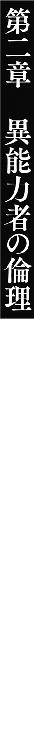
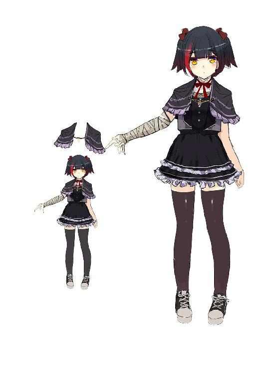

| アウトサイド・アカデミア!! 《留年組》は最強なので、チートな教師と卒業します【電子特別版】 (角川スニーカー文庫) | |
| 神秋 昌史 | |
| KADOKAWA / 角川書店 (2017) | |
アウトサイド・アカデミア!!
《留年組》は最強なので、チートな教師と卒業します
【電子特別版】
神秋昌史

角川スニーカー文庫
本作品の全部または一部を無断で複製、転載、配信、送信すること、あるいはウェブサイトへの転載等を禁止します。また、本作品の内容を無断で改変、改ざん等を行うことも禁止します。
本作品購入時にご承諾いただいた規約により、有償・無償にかかわらず本作品を第三者に譲渡することはできません。
本作品を示すサムネイルなどのイメージ画像は、再ダウンロード時に予告なく変更される場合があります。
本作品の内容は、底本発行時の取材・執筆内容にもとづきます。
本作品は縦書きでレイアウトされています。
また、ご覧になるリーディングシステムにより、表示の差が認められることがあります。
鳳介が、ガラにもなく早起きした理由は、ひとえに『なつかしさ』だった。
母校に行く。国立、塔心学園に行く。
それだけのことである。珍しい行動でもない。卒業後一ヶ月でなつかしんでいるなら心が疲れている可能性もあるが、今年で二十三歳、ノスタルジーの権利はあるだろう。
それでも隠しきれない気恥ずかしさがゆえ、朝五時に目が覚めたのかもしれないが。
五時半に家を出て、四十分に校門をくぐった。
広い敷地をじっくり歩き回り、六時十分ごろ、校舎の屋上が爆発するのを見た。
六時十分ごろ。
屋上が爆発するのを、見た。
「いやいやいやいやいやいや!?」
校内の階段を駆け上がり、屋上への扉を開け放ちざま、五年ぶりの母校に響かせた声はそれだった。
肩で息をする鳳介の前に、複数の人間が転がっている。
「な......なんだこりゃ」
皆一様に、目出し帽などの覆面で顔を隠しているという異様さ。
服装からして、男女とりどり──学生ということは共通しているのだろう。灰色のズボンやスカート等、塔心学園の制服を着込んでいる。あおむけに倒れていたり、うつぶせに倒れていたり、フェンスに引っかかって揺れていたり。
立っているのは、一人だけ。
「なんとか、なっちゃうものですね......」
薄雲を裂く朝の陽の光を逆光に受け、女子用の制服を着た人影が呟く。
まっすぐに伸ばした右腕の先──なにも持っていない手の指を、たわむれるようなかたちに折り曲げて。
（ピス、トル......？ いまだにじゃんけんで使うやつがいるという、伝説の......、いや）
【銃】か？
開け放った扉を閉めることもできない鳳介をよそに、その少女は微笑ったようだった。
「仮免Ｃでも、意外なくらい。すごく疲れるけど、でも、そんな......そんなことより」
わずかに震える声に合わせるかのように、少女の指先に光が灯る。
青みがかった、白い光。
美しいながらも危うげな輝きの指し示す先に、覆面が一人尻もちをついていた。
がたがたとおののくシルエットが、声にならない恐怖を伝える。説明されずとも伝わってくるのは、これが処刑する側とされる側の構図ということだけだ。
ここは学校である。国立校である。おまけに早朝でもあるというのに。
「いきなり襲われるだなんて......自分は、自分は本当に、アウトサイダーになってしまったんですね。わかってたつもりですけど、でも......でもっ......！」
「おいおい──」
声をかける鳳介を遮るように、覆面が少女の腕を払いのけた。
そのまま脇目も振らず、一目散に駆け出す。もしかすると、そのとき初めて、扉の前に立つ鳳介に気づいたのかもしれないが。
この場をどくか、どかざるか。
鳳介の判断より疾く、光線が覆面を直撃した。
腕ほどもある極太の光が、人体を吹き飛ばすというより突き飛ばす。鳳介の前を飛び過ぎた覆面は、奥のフェンスに激突し、ぐったりと動かなくなった。
（そりゃそうだよな......）
今さら言葉こそ出せないものの、鳳介はなんだかんだ納得した。
（ここは学校だけど、だから治安がいいなんて理屈はないし。爽やかな朝だからって、ケンカが起きないとは限らないし。異能力を教える学校だからって......むしろだからこそ）
異能力を使ったケンカも起きる。起きた以上は、さてどうするべきか。
管理者に連絡する。妥当なところだろう。
警察に通報する。決して大げさな選択肢ではない、なにせ異能力が関わっているのだ。
しかし、鳳介に最も利をもたらすであろう答えは、どちらでもない。
「そこのきみっ！」
ふらふらと歩を進める少女に対し、鳳介はブラックスーツの襟元を正した。
「もうやめるんだ！ ケンカはよくないぞ！ まぁどう見てもきみが、こう、多勢に無勢の無勢のほうっぽいけど。たとえそうだとしても！ 今日が初日の俺の目の前で、これ以上は──って、お、おい。ちょっと？」
物言いたげに伸ばされた鳳介の右手にも、反応は返ってこない。
屋上の端、腰ほどの高さのフェンスまで、少女はたどり着いた。
おそらく、いや間違いなく自らの手で叩きのめしたのだろう覆面が引っかかっているそれを、緩慢な動きでまたぎ越す。
無防備な仕草に、白い下着がちらりと覗くが、まるで気にした様子はない。
あと一歩進めば、真っ逆さま。
そんな状況で、しばし──あ、と少女が小さくあごを上げた。
「遺書は書かないと、ダメですよね......」
「待て待てちょっと待て待て待てっ!?」
え？ とようやく振り返った彼女。
美少女である。
暁の光を横顔に受け、きょとんとした表情もよく見える。
つややかなセミロングの髪。小さな鼻に、ほっそりしたあご。おとなびた造作でありながら、赤みの差す頰も、涙をたっぷりとたたえた大きな瞳も、どこかいとけない。
かわいらしくも美しい、朝焼けを背にした絵になる景色。
それを堪能する余裕など、今の鳳介には皆無であったが。
「なにをしようとしてんだ!? 戻ってこい！ そんなとこ立ったら危ないだろ！」
「......あ......あなた、誰......？」
「だろうな！ 存在すら認識されてないんじゃないか的なことは、悲しいけどうっすら勘づいてたさ！ ていうか、誰でも──」
ほんの瞬間、鳳介は言葉を切った。
しゃべりながら、さりげなく足を踏み出した途端に、少女の重心が移動したのだ。
「──誰でもいい。こんな場面に行き会ったら、誰だって言うことは同じだろ？ 『やめろ』と『落ち着け』だ。カウンセラーとか、専門家だったらどうか知らないけど」
「......専門家じゃないなら、ほうっておいてくれませんか」
「それは仮に！」
右手で少女を指さす仕草にまぎれて、今度こそ一歩踏み出す。
「専門家相手だったら、話を聞いてくれるってことか!?」
少女が黙りこんだ。
屁理屈に聞こえたかもしれないが、こちらの言わんとすることが伝わればいい。
見た目で判断するしかない現状。鳳介の右目に落ちかかる、分厚い前髪を透かして見ても、頭が悪そうな子には見えない。
少なくとも、鳳介のわずかな動きに反応したほど、勘は鋭い──
「......ゆるせないん、です。自分が......」
語りはじめた。
そう見て取った瞬間、鳳介は前髪に隠れた右目を閉じる。
伸ばしたままの右手を基点に、対象までの正確な距離を計算した──約十一メートル。フェンスはないものと考えるとしても。
あと四メートルは、近づきたい。
「留年してしまった、自分がっ......！」
「ん？」
踏み出しかけた足を止め、鳳介は聞こえた声を反芻した。
留年。
少女は確かに、留年と言った。留年生？ だから、飛び降りようとしている？
極端な話だが、そう理解するしかない。思えば確かに、先ほども言っていた気がする。
《留年組》と。であるならば。
「俺の生徒じゃねーか......」
「わかってはいたんです！ こうなるんだって。ぜんぶ、わ、わたしが悪いんだって！」
鳳介の呟きなど届くはずもなく、少女の叫びが朝焼けの空に響いた。
「わたしはダメで、ダメで、ダメでっ......どうしようもなくて！ それでもきっとこの道ならばと、信じて通わせてもらった学園なのに......！ お父さんやお母さんに、どう償っていいかわかりません！」
「怒られたのか？ 親御さんに」
「やさしく苦笑いされました！ 『なんとなくわかってた』とか言われました！」
「うわキッツいな、それはそれで」
「やさしい母です！ 誇りの父です！ なのに、それなのにっ......わたしは......留年という『罪』を犯してしまった。だから、こんな目にも遭います......」
目を伏せた少女の、わずかに震えるなで肩に落ちかかる髪を、さやかな風が揺らす。
マジメな女の子だ。目の前で死なれたりしたら、さぞ後味が悪いだろう。
（ていうか、もう、そういう問題でもねーな......《留年組》なら）
死ぬなど、決してゆるしてはならない。彼女の未来のためにも。
鳳介の未来のためにも！
「学校に来てしまいさえすれば、この重苦しさもなくなるかと思いましたけど......負い目ばかりを感じます。いっそ、死んで詫びるしか──」
「大したもんだ」
「......え？」
「そこまで思い詰めていながら、まずはよく学校まで来たな。そこのところは間違っちゃいないし、結果につながる行動だ。よくがんばった」
言いながら、鳳介はもう一歩進んだ。
両目をまたたいて、少女はじっと見つめている。どうして自分がほめられているのか。
そのことを、もったいつけて教えてやる間に──もう二、三歩はいける。
「けど、留年が罪ってのはどうかな？ どうしてそう考えた？」
「え......だって、え、留年......ですから。明らかに、ペナルティで」
「そうだな。それは何のペナルティだと思う？」
「何の？ って......卒業できませんでしたから......」
「本当にその意味でのペナルティなら、退学ってことになると思わないか」
「え？」
「留年は、卒業に必要な点数を獲得できなかったことへのペナルティだ。意味合いが違うぜ？ 考えてもみろ、そもそもきみはなぜ入学した？」
少女の両目が、わずかに見開かれた。
話を理解しきっている、ようにも見えない。直感的に正解を感じ取ったのだろうか。
「勉強を終えて、卒業するためだろ」
最後の一歩を踏み終えて、鳳介は口の端をひん曲げた。
「学校だって、そうしてほしいに決まってる。おまえの何がどうダメなのか、俺は知らないけどな。ダメだから留年するんじゃない、ダメでも卒業するために、もう一年やらせてくれるってわけだ。むしろ救済措置じゃないのか？」
「そ......それは、そう、かも。でもわたし、結果につながる行動なんて......なにも......」
「俺に会っただろ」
「へっ？」
「もう無駄だぞ、飛び降りても」
フェンスの向こうで立ち尽くす少女に、鳳介は傲然と両腕を組んだ。
「おまえ、名前は？」
「あ......み、蜜川といいます！ 蜜川うるみ......」
「蜜川か。やっぱりな」
「やっぱり？」
「いや。ともかくだ。おまえが飛び降りて死のうとしても、地面に着くまでに俺が阻止する。万にひとつも失敗はない。あのなぁ、初日っつーかまだはじまってもないうちから、手間取らせんじゃねーよ！ なんつー初仕事だまったく」
「手間、って......こ、これ、えっ？ どういう状況で──」
「おまえはもう俺の手の内なんだよ。少なくとも、飛び降りだけは絶対させねー。舌嚙んででも死んでやるってんなら話は別だが」
そうしないなら、と鳳介はわずかに語気を強めた。
「卒業させてやる」
「いえ、舌なんて怖すぎてとても......っへ？ そつ......はい!? い、今なんて......!?」
「いいから！ とっととこっち来い。別にアレだ、飛び降りてみてもいいぜ？ 見ず知らずの相手が何言ったって、信用できないだろうしよ」
少女──蜜川うるみの揺れる視線と、眉毛をつり上げた鳳介の視線とがかち合う。
そのまましばし。
うるみがそっと、フェンスに手をかけた。
いまだためらっている様子ながら、ゆっくりと鉄のそれをまたぐ。少しだけまわりを見る余裕が生まれたのか、今度は白い布も見えなかった。
と、小さなうめき声が聞こえた。
うるみのものではない。傍らでフェンスに引っかかっている、覆面の一人が目を覚ましたようだ──最初に見えたのが、遠く揺らめく地面だったのだろうか。
自らの置かれている状況に息を吞み、いきなり大きくバランスを崩した。
「あぶなっ......!?」
とっさに鳳介が手を伸ばすより早く。
うるみが、身体をねじ曲げるようにして、覆面の腕をつかんだ。ずり落ちかける人体をむりやり引っぱり上げて、屋上の床に放り出す。
フェンスをつかめる気でいたのだろう。
伸ばされたうるみの手は、しかしどこにも届かず、空を切った。
「ひ」
「蜜川──」
「ひわあああああああっ!?」
あまり女の子らしいとはいえない悲鳴とともに、うるみの姿が消える。
ひとつ舌打ちして、鳳介も屋上を蹴った。
フェンスに手をついて飛び越えた弾みで、上着の胸ポケットから、何かがこぼれ出る。
手帳──いや違う。
免許だ。
なくしてはならない物なのだが、今はともかく。
「った......」
自由落下の風圧に、鳳介の前髪がばさばさと乱れた。
一瞬覗いた右目で、あおむけに落ちゆく少女を捉える。
蒼。
きれいな色だ。
「助かれえええええええッ!!」
涙の軌跡を残したうるみが、四階分下の地面へと真っ逆さまに激突し、
ぽいんっ
と軽く跳ね返る。
一瞬遅れて着地した鳳介が、空中で彼女を抱きかかえた。
「よ、っとくらぁ。平気か？ ケガは？ 首とかコキッとイッてたりしないか？」
「......。え......え、えぇえ......？」
「土の地面で、よかったけどな。日頃の行いが悪いと打ちどころが」
「だ、大丈夫、みたいです。なんだかさらっとこき下ろされた気もしますけど、い、いったい今のは──ッていうか!? っお、お姫様抱っ、こ......!?」
漁師にゲットされたカツオのごとき構図で頰を赤らめるうるみの胸に、ぱさりと何かが落ちてきた。
見る──と、第一印象よりも大きいことがわかる。優にＤカップはあるだろう。
巨乳はともかく。
「これ、は......ラ、異能力免許!?」
手のひらサイズの免許を取り上げるうるみに、俺のだ、と鳳介は安堵する。
「なくならなくてよかった。さすがに罰金じゃすまねーからなぁ」
「こ、この表紙......この異能光石、すごい純度。仮免じゃあ、ない......!? じゃ、じゃああなたは!?」
「......【銃】の異能力者ってのは、おまえのことだな？ 蜜川うるみ」
驚きか、落下した恐怖か、それとも他の理由でか。
息を吞んでこくこく頷くうるみに、鳳介は口元だけで笑った。
「《留年組》の担任をやる、刻白鳳介だ」
「た......担任......!?」
「おまえらを卒業させるために来た、一蓮托生の一心同体だ。なにがなんでも、どんな手ぇ使ってでも！ 絶ッ対に卒業してもらうからな......覚悟しろよ」
異能力。
この国の人間にとって、今日なじみ深いとすらいえる言葉だろう。
実在が認められてしばらくは、超能力、超人間力、新精神力、スーパーダイナマイトゴッドブレスパワーなど、様々に呼ばれていた。
それも落ち着いたころ、国の音頭取りによって設立されたのが、塔心学園である。
異能力法による免許制度の確立とともに、その認可を授けられる数少ない機関として。
いまや生徒数三千人超。広大な敷地を持つ学園都市。
刻白鳳介は、その栄えある第一期生として、八年前に入学を果たしたのだったが。
「元詐欺師って、ほんとなんですかぁ？ ホースケ先生ぇ」
本のページをめくる手を止め、鳳介は両目をまたたいた。
質問にかぶっていた予鈴の末尾が、さしたる余韻もなく消える。
それを待たずして、百人以上の教師たちが、どやどやと廊下へ出て行った。学園の出身者である鳳介を知っている者も中にはいるだろうが、誰も声をかけてはこない。
気遣いか。あるいは、気まずいだけか。
（それは、まぁ......どっちでも、いいと、して）
問題なのは隣である。真横の席から鳳介を見て、にこにこしているメガネの女である。
正直、気になってはいた。
鳳介を除いて唯一、職員室に居残る様子だったことと。
先ほどの職員会議でもずっと、柔和かつお気楽な笑顔だったことと。
なにより、ブラウスの胸元を圧倒的な角度で持ち上げている、どどんぱな豊かさと。
（Ｆカップ、かな......確かこの人、去年から学園にいるって、いやＧカップか。教わることがたくさんありそうだな、ていうか生徒になりたいなむしろ）
思いきり思考をぶれさせる余裕を一応は保ちつつ、鳳介は椅子の角度を変えた。
「今......なんて言いました？ ええと、失礼、てるやま先生でしたっけ」
「照矢山です～。照矢山小満。でもでも、コミチーって呼んでくださいねぇ！ この学園は、下の名前で呼ぶのが決まりなんですから。校長先生から聞きませんでした～？」
「そ、そうなんですか？ 聞かされなかったです......ええと、コミ──」
「まぁ生徒のみのルールなんですけどね～」
「照矢山先生。それでその......俺が、なんですって？」
だから～、と明るく笑う彼女──先輩教師の照矢山小満。
いかにもお仕着せの白いスカートスーツと、今朝美容院に行ってきたばかりのようなふわふわロングパーマがマッチしない。まるで気合いが空回りした就活生のようだ。
細くしなやかな指先が、小洒落た銀色のアンダーフレームを押し上げる。
「元詐欺師なんでしょお？ そう聞いてたから、ほんとかな～って。ほんとなのかな～って、思っちゃいましてぇ」
「......俺が？」
「あなたが～」
「誰から......そんなことを？」
「校長先生から～」
あの校長。
ページをくしゃくしゃに握りつぶしてしまいそうだったので、鳳介は本を閉じた。
デスクの簡易本棚にきっちりとそれを戻し、しばらく沈黙したのちに。
「──そんなわけないじゃないですか！」
鳳介は笑った。
爽やかに。にこやかに。ずいぶんとうかつに。
「ボクが詐欺師だなんて、とんだ冗談です！ やだなぁほんと、あっはっはっ」
「わたしもそう思ってたんですけど、今わたしをだまそーとしてるのはわかりますぅ！」
「誤解ですよ、ボクはうそついたことなんてありません！」
「絶対今ついてますぅ！ すっごくわかりやすいですぅ、なんか声すごい高いしぃ！」
「校長先生もどうしようもないババ、お年寄りですけど、でも照矢山先生はボクを詐欺師と思ってないってことですよね？ それはまたどうしてです？」
だってぇ、と小満が鳳介の本棚を指さした。先ほどの分厚い本が収まっている。
タイトルは──『よい先生・わるい先生』。
並びに『人にヤル気を出させる方法』やら、『忘れにくい授業のやりかた』やら。
加えて『正しい環境を創るには』、『キン●チ先生 その愛、その理念』などなど。
小首をかしげ、鳳介は小満に目を戻した。
「これが、なにか？」
「授業前にこんなの必死こいて読んでる詐欺師なんて、聞いたことないですもん！ 詐欺師って悪いひとでしょ～？ だましたり、だましたり、あとだましたりでしょ～？」
「極端ながら揺るぎない認識ですね......」
「それに、おかしぃじゃないですか。ホースケ先生は、あの校長先生が自分でわざわざスカウトしてきた、って聞きましたよ～？」
それはその通りである──
それはじゃないか、と鳳介は胸中で苦笑した。
今のところ小満の言うことに、間違いはただのひとつもないのだ。
「スカウトとかそんなの、絶対すごい人だしぃ、なのにびっくり同い年だしぃ、何読んでるのかと思ったらわたしが前に読もうとして五ページで寝ちゃった本だしぃ」
「いかがなものかと」
「だいたい詐欺師って、白いマント着てたりシルクハットかぶってたりステッキ持ってたりするもんじゃないんですかぁ？ あっ、でもその前髪！ 前髪で右目隠してるのはそれっぽい！ わざとですかそれわざとなんですか、よく見せてくださいよ先生ぇ～！」
「ちょっ、や、やめてください!? てか怪盗かなんかと間違えてないですか!?」
髪をかきあげようとしてくる小満から椅子を離し、鳳介は小声でうめいた。
「これはちょっと、右目だけ色が薄いので......サングラスかけると仕事がしづらいから、髪でごまかしてるだけです」
「おぉ～それっぽい理由」
「いやそれっぽいっていうかそうなんですけど。あと俺、教師じゃないですよ」
「えっ？」
「臨時です。臨時教師。一応職員ではありますけど、いろいろ権限ないんです。照矢山先生みたいな、ちゃんとした正規の人が気にするようなこと、なんにもありませんよ」
「えぇ～、でもぉ。あっ、声とか、戻りましたねぇ」
「......まぁ、はい。......照矢山先生は、確か、現役の」
「はい～。異能科の、現役生たちを担当してますよぉ」
つまりは免許持ち。その時点で鳳介とは違う。
自分はどだい、先生などと呼ばれるような人間ではない──重々承知していることだ。
しかし。
「演じることなら、俺にもできるかと思って」
「へ？」
「俺は、留年生たちを卒業させるために、この学校へ来ました」
言葉に出すと、改めて決意も深まる。鳳介は声と拳に力をこめた。
「そのためなら、なんでもやるつもりです。俺にできることの、すべてを！」
「おぉ～......！」
「そうしないと俺の人生がやばい！」
「うんうん！ うん？」
「たとえだましてでもだましてでもだましてでも、絶対に卒業してもらう......！ 留年生たちが、どんな生徒でも！ 不気味な異名で呼ばれていようとも！ つまりッ！」
鳳介の指先が、ずらりと並んだ『先生本』の群れを示す。
「俺のことを、いい先生だと思わせることができれば！ どんなアホガキどもでも、スムーズに卒業させられるんじゃないかと！」
「あ、だますって、そっちぃ？」
「照矢山先生のおっしゃる元詐欺師というのが、何のことなのかはぜんぜんわかりませんけども。確かに俺には、教育者の経験なんてまったくありません。今朝だって、留年生の行動を予想することができなくて、危うくおおごとに......」
「はあ......え、今朝？ ホースケ先生、もう担当の生徒に会ったんだぁ」
「俺が俺のまま、他人の倫理観に口出しするなんて、到底できません。だから！」
ガラッ、と机の引き出しを開けた。
そこにも真新しい『先生もの』の本が、ぎっしり詰まっている。
「生徒たちの理想を演じて、その気になってもらいたいんです！」
「すご～い！ なんてゆーか、発想がもう完全に詐欺～！」
「読んでたらだんだん熱中してきまして！ キ●パチ全シーズン見ました！」
「すご～い！ わたしも見た～！」
「こっちの棚にはぬ～●～が入ってます！ おかげで学園資料ぜんぜん読めてません！」
「ひど～い！ でもあとで貸して～！」
「読んでください！ そして語ってください、教師というものについて！」
あははは、と笑った小満が、なにやら何度も頷いた。
「なるほどね～。マジメだからなんだぁ、ホースケ先生がもう慕われてる理由」
「......？ 慕われ、なんです？」
「あれですよぉ、あれ～」
小満がメガネ越しに視線を向けた先──開けっぱなしのドアから少女の頭が覗いている。
セミロングヘアの頭は、えらくキラキラした眼差しで、じっとこちらを見つめていた。
「あの子、今年からの子ですよ～」
「今年から？」
「アウトサイダー......あ、えっと、そのぉ。いわゆるひとつの留年生というか～」
「いえ。知ってます。《留年組》......普通の学校の留年生とは、意味合いが違うと」
もとは生徒間の蔑称であるらしい。小満が言いよどんだのも、それが理由だろう。
《留年組》。はみ出し者。
不躾なほどにわかりやすい。
「ホースケ先生の授業が、待ちきれないんじゃないですか～？」
どこから取り出したものか、小満がぱりぱりとのりせんべいをかじった。
「きっと気がはやって、迎えに来ちゃったんですよ～。校長先生も言ってましたし」
「はあ......なんて？」
「刻白は優秀だけど詐欺師としては五流だからきっといい先生になる、って～」
「あっはっはっはっはっ......！ ブッ殺す......」
末尾を押し殺すのに苦労した鳳介であるが。ぽりぽりと頰をかき、席を立った。
「まぁでも、俺に用......なんでしょうね、きっと」
「うんうん～！」
廊下へと向かう鳳介に、なぜだか小満とせんべいもついてくる。
ドアの陰から、少女──うるみが、すばやく全身を現した。
笑顔でぴしりと背筋を伸ばし、何事か言いかけたものの、はたとなにかに気がつく。
慌ててぴょんぴょんと廊下の奥側まで下がり、また改めて背筋を伸ばした。
「ホースケ先生！ コミチー先生も、お疲れさまです！ 教室へ向かわれますかっ？」
「コメントしづれーなぁ......行かないよ、まだ。ここで何してるんだ？」
「はい！ ホースケ先生が、校舎に不慣れでらっしゃるといけないと思い、よろしければ教室までご案内させていただこうかと！」
はきはきと答えて、うるみは笑う。
からっと晴れた青空のような、不安になるほど明るい笑顔だ。
ほんの三時間前、始業式の朝から飛び降りを企てた人間とは、とても思えない──
「ていうか......あれ？ 始業式、ですよね？」
たべるー？ とうるみに餌付けを試みている小満に、鳳介は廊下の先を指さした。
「行かないんですか？ てらやま先生は」
「やっだぁホースケ先生、コミチーですぅ～！」
「失礼、照矢山先生は」
「なに言ってるんですかぁ、始業式はさっき終わっちゃいましたよ～？ うふふふ」
「いえ、そのあとの全校集会が、今......先生方、みんな運動場に向かってるはずでは？」
「え～？ ......え、えぇっ？ うっそ～!?」
「会議でハリセン──じゃない、校長先生がおっしゃってましたよ。うっかりですか」
「ひぇ～っ！ う、うっかりですぅ～！」
どたどたと、聞くからにマヌケな足音を響かせて、小満が走り去ってゆく。
同い年だよな、と遠い目をする鳳介に、うるみがほんのつま先分近寄った。
「先生......？ 先生は、集会に参加されないんですか？」
「......ああ。俺はまぁ、いろいろあってな。立場低いし、現役生とも関わらないから」
「そうなのですか」
両手を腰に当て、鳳介は横目でうるみを見やる。
感じるのは、アンバランス──細身かつ丸み豊かに出来上がった肢体と、パーツの大きな愛らしい面立ち。全体的にやや緊張気味な、いわゆる『肩肘張った』直立姿勢と、明らかに異様なほどキラキラと輝き、まっすぐに鳳介を映すその瞳。
羽化したての揚羽蝶のような可憐さと、散歩を待ちわびる仔犬のようなマヌケさ。
それらが絶妙に同居しているこの完成度こそ、留年生ゆえなのか。
「おまえも、なにか......聞いてるのか？」
反応が読めない怖さを感じつつも、鳳介は小さく咳払いした。
「俺のことを、こう、事前にとか」
「はいっ？」
「校長あたりから、何か聞かされてたりしないのか」
「担任ができるかも、とは聞いていました！ 自分たち、《留年組》に！」
大きな胸を張って答えてくれる。
よけいな事実を吹きこまれ、こちらを探ろうとしている様子は、ない。
ならいいよ、と鳳介は歩き出した。
これほど大きな学園ならば、地図くらい掲示されているだろう。階段のほうだろうか。
「あの......あの！ ホースケ先生！」
「ほんとに名前呼びすんだなぁ。ふーん......」
「朝は、あ、ありがとうございました！ 助けてくださって......」
なにやらむにゅむにゅ言いながら、うるみがあとをついてくる。
「お礼をちゃんと、言えていなかったかと......すみませんでした。ちょっと、びっくりしすぎてしまって」
「おー」
「あんなふうに、男の人に抱かれた経験なんて......自分は一度も。でも、そんなことでいちいちパニックになるなんて！ 精進が足りません。もっとがんばります！」
「ん、あったあった。うわなんだこりゃ広いなおい」
「あのときの先生、とても頼もしかったです。なにより、自分のような者のために......自分は......自分はたいへんに感動っ、あの、先生？ ホースケ先生、あの、あのー！」
予想以上の大きさだった地図を、鳳介は指さし確認した。
何棟もの校舎、グラウンド──その奥に広がる、新校舎とだけ書かれた広大な敷地。
現在地の印を見つけることすら一苦労である。
「この学園はですね！」
うるみが地図の傍らに躍り出た。
派手な動きにアピール性を感じるが、その意味まではわからない。
「とっても広いんです！ めちゃめちゃ広いんです！ 生徒数も多いですけど、それに輪をかけていろいろありますよ。お一人では迷うかもです、ぜひ自分に案内役を！」
「......俺はここの一期生だ」
「え。......え、ええーっ!? そうだったんですか......た、たいへん失礼を......！」
「一期生......なんだけどなー」
鳳介の記憶では、小高い丘があったはずの場所にすら、なにかしらの建物がある。
もはや増築というより、新規開墾である。
「つーか、蜜川こそ全校集会は？ 授業二時限目からなのは、留年生も同じだろ」
「はい！ いわゆる《留年組》は、卒業式以外の行事には自由参加です！ というより、なるべく空気を読んで出てくれるな、と！」
「ド直球だなっていうか明るいなおまえ」
「あは。その手のことなら、言われ慣れてます。自分の倫理点が低いのは、今にはじまったことじゃありませんから！」
だろうな、と鳳介は口の中で呟いた。
それ以外の理由で留年などするはずがないのだ、この学校においては。
「とりあえず......俺がいたころは、ここまでべらぼうに広かなかったな」
「！ では！」
「二時限目がはじまるころには、《留年組》の教室に着けるように。頼めるか？」
「はいっ、おまかせください！」
＊＊＊＊＊＊＊＊＊＊
異能力免許を所持していなければ、異能力を使用することはできない。
車の運転と同様に、無免許で使うことは違法である。
ばれれば罰金、悪事に利用していれば当然逮捕される。
この塔心学園に、ふたつあるコース──普通科と異能科のうち、異能科を卒業することができれば、卒業証書とともに異能力免許が授与される。
加えて優良企業の研究職への斡旋、一流大学への推薦、希望によっては国防職のエリートコースに直結。人生にとって有用なアイテムがよりどりみどりである。
三年間、この学校に通ってさえいれば、異能科を卒業できる、
わけでは、ない。
「こちらが！ 我々《留年組》の教室でーす！」
終始笑顔のうるみが、両手どころか全身で示してくれたそれ。
朝日にキラキラと輝く高層ビルを、鳳介はうろんな目で見上げた。
普通の校舎など、はるか見下ろせてしまう威容。地上十階はあるだろうか。
全面を反射ガラスで覆われ、学び舎とはほど遠い雰囲気である。
「ここの最上階、ワンフロアすべてが《留年組》の割り当てです！ 二階から九階までは図書館が入ってます、とっても静かでいいところですよ！」
「おまえは不動産の業者か」
「はい？」
「いやなんでもない、余計なこと言った。......つーかさ」
鳳介は、背後を見渡した。うるみに案内され、ここまで歩いてきた道のり。
二車線の車道が延びる傍らに、みっしりと建物が林立している。
アパート、マンション、一戸建て。テナントビルに、ショールーム。
きれいに整った街路樹の向こうに、小さな公園までうかがえるその街並みを眺めて。
「ここ......何なの？」
「ここは玄関です！ えと、まんなかの直通エレベーターで十階まで行くと、教室が」
「じゃなくて。ここ。ここ全体」
「新校舎ですけど」
「街じゃん」
ド正論のつもりの鳳介に対し、うるみはふるふると首を横に振った。
「ぜんぶ学園の敷地なのです。人がぜんぜんいないでしょう？」
「それは校舎としてもおかしいと思うが......」
「ほら、信号もありません」
「む。......確かに」
「教室はあちこちに分散してるんです。たとえばそこの、いかにも英会話教室とか整骨院なんかが入ってそうな、二階建てのビルですけど」
うるみが指さす先に、鳳介は目を凝らし──
建物の看板に、『一年Ａ組』『Ｂ組』と記してあるのを見て取った。
「......。冗談だろ......？」
「その隣の、一見自動車のディーラーに見える建物が、一年Ｃ組となっています」
「いや全面ガラス張りじゃねーか！ 素通しだぞ!? かわいそーじゃね!?」
「さらに隣の、一見マクダナルダに見える建物は......」
「Ｄ組ってか!?」
「いえ、本当にマックです」
人気店です！ とまた瞳を輝かせるうるみに、鳳介は乾いた笑いしか返せない。
やはり資料に目を通しておくべきだった。もはや自分の知っている学園とは別物だ。
「ぶっつけ本番で来ていいとこじゃねーな......《留年組》がバカとかじゃなく、関係者全員バカだぞこれ」
「ぶ、ぶっつけなのですか？」
「一応、現役だったころに使ってた教材は持ってきたけどな」
肩からさげたカバンを叩きつつ、鳳介は小さく笑ってみせる。
「不安か？ こんな急造担任で。ちなみに俺はびっくりするぐらい不安だ」
「いえ！ 先生はすばらしい先生ですから！ 不安なんてぜんぜんありません！」
「......会ったばかりの人間にそういうこと言ってると、だまされて売られてはだかの写真撮られちまうぞ」
「はだっ、そ、そこまでひどいことに!? で、でも自分は......自分は！ あの！」
「なんかおまえ見てたら、演じるのもバカらしくなってくるしな......」
それでも、と鳳介は、今一度意識を改めた。
蜜川うるみ。
第一印象ほど頭は良さそうではない、というか明らかにアホの子であるようだったが、悪い娘でないことくらいは鳳介にもわかった。卒業しようという意志も感じ取れる。
まともな人間が相手なら、まともでない鳳介が、まともにあたってはいけない。
たとえどれほどバカバカしくとも──卒業させなければ！
「行くぞ！」
「は、はい！」
うるみとともに建物に踏み入り、エレベーターに乗りこんだ。
閉まりゆくそのドアも、断じて安物ではない。鳳介はのどの奥にうめきを押しこんだ。
「今年の一年生は、約千五百人......もれなく異能科！ 儲けやがるねぇ、国営のくせに」
「えっ？ なんですか？」
「別に。......なぁ。千人以上いる現役二年生のうち、何人がまだ異能科にいるんだ？」
「八十人ほどと聞いています！」
残りは全員、進級を機に普通科へと転進している。
たった一年で、九〇パーセント以上の生徒が、異能の道をあきらめているのだ。
「異能があれば、なにもなくてもなにかできます！」
ふすふすと鼻息を荒くして、うるみが大雑把な希望を口にした。
「自分には、体力と健康しか取り柄がありません！ 勉強もがんばっているつもりなのですが、どうにもこうにも頭が悪く！ お恥ずかしい限りです！」
「無防備かつ不器用ってことかね......」
「そんな自分でも、異能力免許を取ることができれば！ 社会に役立つ仕事に就ける。苦労をかけ通しの父や母にも、きっと楽させてあげられるっ......」
「なに、おまえん家たいへんなの？」
「妹が九人おりますもので！」
すげー、という鳳介の素直な感心とともに、エレベーターのドアが開く。
一歩踏み出した足音を、分厚いカーペットが吸収した。
（空調が効いてる......この時期に。湿度も適切だな）
シンと澄んだ空気。感じ取れないほどあえかに香るアロマ。
観葉植物や水彩画が、落ち着いた色合いの壁紙を彩っている。まったく意味などないのだろう巨大な水槽に、熱帯魚がきらきらと光を躍らせた。傍らには喫茶用のテーブル。曲がり角の向こうにあるのは、自販機コーナーだろうか。
寝泊まりできそうだな、と呟く鳳介に、うるみがこくこく頷いた。
「申請すれば可能です！ お泊まりになりますか？」
「ならねーよ。てゆーか、なんだこりゃ？ おまえ、教室があるって言わなかったか？」
「はい！ この階が教室です、《留年組》の！」
「............。ずいぶん......いい暮らししてんな？」
頭がついていかないなりに、要点を絞ったつもりの質問だったが。
「この学園では、力がすべてですから！」
輪をかけて端的に、うるみは答えてくれた。
「異能の力が強いほど、学習環境は向上します！ この学園において、学年分けがクラス分けと同じ意味を持つのは普通科のみ。異能科で最高のパフォーマンスを見せた生徒は、教師並みの待遇で授業を受けることが可能なんです！」
「そりゃ知ってるけど、おまえら留年生だろが。いいのかこんなん」
「じ、自分もまさか、ここで学ぶことになるとは思ってなかったですけど......環境レベルを保ちつつ現役生と分けるために、あまっていたこの階を活用したんだそうです」
質問の答えになっていない。しかし鳳介も、だいたいそんな予想はしていた。
「にしてもこれは......、いや、まぁいい。てゆーか、どうなんだ？ 授業一発目だけど、ちゃんと来てそうなのか、おまえのクラスメイト」
「半々といったところでしょうか」
「半々？」
「いっしょに留年しちゃった子が一人いまして、五〇パーセントの確率で登校すると思います。あとの先輩方は、よくても出席率一〇パーセントほどです」
どうやって卒業させろというのだ、そんな連中を。
のどの奥でうめく鳳介をよそに、
「あれっ」
一枚だけ閉めきられているドアの前で、うるみがおもしろそうに振り返った。
「紅茶の匂い......、先生！ 一〇パーセントのほうかもですよ」
「あ？」
「おはようございますっ！」
やはりというべきか、必要以上に勢いよくドアが開け放たれる。
うるみに続いて、鳳介も入室し──香ばしい茶葉の薫りに、眉を片方跳ね上げた。
「あら。おはよう、うるみさん」
クラスルームというには広すぎる室内。
いや、広すぎるというより、スカスカすぎる。
学習机がない。学習椅子がない。あるにはあるが、ワンセットだけだ。
目立つのは、高級フローリングの中央に鎮座する、一人掛けの革張りソファと。
そのサイドテーブルに、ゆっくりと紅茶のカップを戻す、にこやかな美女のみである。
「ずいぶんゆっくりだったのね？ 誰よりも早く登校すると評判だったあなたなのに」
「えへへ、すみません轟木沢先輩！ ちょっといろいろありまして」
「うるみさん？ 名字も先輩もよして、って言ったでしょう？ わたくしたち、年齢こそ違うけれど、もう同じクラスなんだから。うふふふ」
「あ、そうでした！ 失礼しました、悠佳さん！」
いやいやいや──と。
鳳介は胸中で、苦虫を嚙み潰した。
うるみとは、まったく違う存在感の女性。優雅で、瀟洒で、気品に溢れている。
こちらに顔を向け、ゆったりした所作で立ち上がる姿まで、揺るぎない淑女である。
──曲者の予感しかしない。
「まあ。そちらもしかして、担任の先生？ 今年からですとか......」
「......ああ」
「初めまして。わたくし、轟木沢悠佳と申します。この学園の、うふ、五年生などをつとめておりますわ。よろしくお願いいたします」
挨拶に隠れてさらりと鳴る、ゆったりした白のワンピース。
レースに縁取られたどう見ても高級なそれは、清楚さ、貞淑さ、ひとひらの可憐さ、そのすべてを一身に表していた。当然、制服ではない。大きく開いた胸元を彩るリボンと、言い訳するように羽織られている上着にのみ、校則の面影が残されている。
（そこじゃない......そこが問題じゃない）
しなりと一礼する彼女──轟木沢悠佳。
やわらかそうな栗色のロングヘア。長いまつげに、涼やかな目元。
ワンピースはゆったりしているようでフィットが高いのか、抜群のプロポーションが容易に見て取れた。胸のサイズはうるみをはるか上回るだろう。圧倒的な大人の薫り。
そもそも五年生ということは、二十歳。鳳介とも、みっつしか違わない──
いいや。
（そこでもねえ、見るべきはそんなとこじゃねえ！ 留年生、だと!?）
うるみはまだ、わかる。留年した者が持っていて然るべき、明確な気配がある。
卒業に向かう気配。
卒業したいという思い。しなければならないという焦燥感。
目の前の女からは、その手の気配がまったく感じられなかった。
かわりにあるのは、泰然自若。およそあってはならない余裕。
学園にとってのアウトサイドに、悠佳はいる！
「......は──」
演じずにすむなら、無論そのほうがよかった。
皆が皆うるみのようにバカ正直なら、それも可能かと少し楽観していた。
しかし。他人になにかを教えた経験が、鳳介にはないに等しいこと。
悠佳は、それを──悟られてはいけない相手だ！
「初めまして！」
鳳介は笑った。
爽やかに。にこやかに。理想を胸に描いて。
「こちらこそよろしく！ ボクは刻白鳳介。きみの言う通り新任だからね、どうかお手やわらかに頼むよ！」
「......とんでもございません。担任していただくのは久しぶりですから、楽しみですわ」
「せいいっぱいがんばるよ。いっしょに卒業をめざそうじゃないか！」
ちょうど折良く、チャイムが鳴り響いた。二時限目の開始である。
ソファに腰を下ろす悠佳の隣で、うるみが笑顔のまま両目をぱちぱちさせている。
鳳介を見、悠佳を見、また鳳介を見て、小首をこくん。
「蜜川くん？ 何してるんだい？ きみも早く座らないと！」
「え......あっ、はい！ 座ります！」
とことこと、うるみはひとつしかない普通の学習机に向かった。
──いきなりどうしたんですか、とも。
──悠佳さんの気を惹きたいんですか、とも。
──なにこいつキンモー☆ とも、言わない。
予想通りの反応であった。
（鳳介はあくまで鳳介なんだから、座れと言われて座るだけ......ってか）
そんな感覚なのだろう。なるほど普通とは言いがたいが、今に限っては都合がいい。
「さて！」
鳳介は室内を見回した。
教卓、ある。なぜかコーヒーメーカーと、豪華な生け花に占領されているが、ある。
ホワイトボード、ある。輝くほどに白く、使用経験があるのか不安な有様だが、ある。
マーカー、ない。
マーカー消し、ない。
めげない、とだけ心に決めて、鳳介はひとつ頷いた。
「まずは挨拶から......といきたいし、初日だからゆっくり進めたいところだけど」
そんな余裕など微塵もない。
「ボクはまだきみたちのことを何も知らないし、きみたちにしてもそうだろう。出席だってあとからとってもなんら問題ない人数だ、うれしいね！ だから急いで、確認しておかなくちゃならない最低限のことだけ、共有してしまおう」
姿勢正しくこくこく頷くうるみと、再び紅茶をたしなんでいる悠佳。
二人のどちらを見てしゃべるべきか悩みつつ、鳳介は指を二本立てた。
「異能力免許の取得に必要なのは、実力点と倫理点！」
そのどちらが欠けても、免許を取得することはできず。
ひいては、この学園の異能科を卒業することも、できはしない。
実力点とは字のごとく、いかに異能力を操れるかという実力の点数化。
倫理点もまた字のごとく、いかに人の世の倫理を正しく修めているかの点数化。
そして、
「きみたちに足りていないのは、倫理点のほうだ」
留年生二人を目の前に、鳳介はきっぱりと現実を告げた。
「勉学じゃない。倫理を修めていないからこそ、留年している。そうだね？ 蜜川くん」
「まことに遺憾ながら！ くやしく思っております！」
うぅっ、とうるみが健気に童顔をしかめる。倫理的には正しい態度である。
「轟木沢くん？」
「そういうことになっているようですわね。わたくしには、よくわかりませんけれど」
笑顔を崩さず、にこにこと悠佳は答える。倫理的には謎めいた態度である。
「実力的には、きみたちは文句なし......どころか、文句が出るほどパーフェクトだと聞いてる。それはボクも想像に難くない」
入学してくる生徒全員が異能科。にもかかわらず、莫大な割合で普通科に転科してしまうのはなぜか。
実力点で及ぶことができず、卒業への意欲をなくしてしまうからだ。
（卒業できないくらいなら、普通科に移ったほうがそりゃマシだ......その選択を迫られることなく、留年までたどり着いてるって時点で、実力そのものが高いのはわかってる）
だから、と鳳介はここいちばんのスマイルを見せた。
「ボクの仕事は、きみたちの倫理点を上げること！ 免許取得のボーダーライン、八〇点にまで届かせることだ。大丈夫！ ボクの言う通りにすれば超簡単、楽勝だから！」
「はい！ 頼もしいです、ホースケ先生！」
「じゃあまずは、きみたちの今の倫理点を教えてくれるかな！ 蜜川くん？」
「マイナス八〇点です！」
数秒間。
「......あ？」
鳳介は、素の顔に戻ってしまった。
「んな......え。は？」
「は」
「はちじゅ......え、なに？ あ、八〇点？ だったらやったぜ目標達成──」
「マイナス八〇点です！ よろしくお願いします！」
耳がおかしくなったわけではないらしい。
そんな点数、生まれて初めて聞いた。
（ど......動揺するな、刻白鳳介......！）
客に動揺を悟られてはならない。あらゆる商売の鉄則である。
ターゲットより先に心を動かしたら、こちらがターゲットになってしまう──だがしかし、マイナス八〇点。合格ラインまで一六〇点。
そんな点数が、この世に存在するとは。
「先生......？ どうかしましたか？」
「い、いや？ なんでも？ なんでもないともさ」
どうかしたか、と聞いてくるということは、さほど珍しい点数ではないのだろうか？
鳳介が学園を離れてから、平均値そのものが変化しているのかもしれない。
轟木沢くん、と絡まりそうな舌で、嚙みそうな名前を呼ぶ。
「きみの倫理点は、いかほどかな......？」
「わたくし？ マイナス一〇〇点ですわ」
まさかの逆三桁。
うるみの上を行かれてしまうとは。
もはや頰の引きつりを隠しきれない鳳介に、あら、と悠佳が涼やかに微笑む。
「そんなにご心配なさらないで？ 皆さん、わたくしたちのことを大げさに悪くおっしゃるんです。わたくしたちだって、普通の人間ですのよ？」
「！ そ......そうだよね。いや、わかってるよ！ さすがにマイナスとか、ねえ」
「冗談がすぎるというものですわ、うふふふ」
「いやまったくだよ、ははははは」
じゃあとりあえず、と鳳介は、カバンから『教材』を取り出した。
うるみの分と、悠佳の分。妙に薄っぺらいその本を、二人に手渡す。
「実力点はともかく、倫理点のほうは五年前──ボクのいたころと、かなりテストのやりかたも変わったって聞いてる。つい驚いちゃったけど、点数もその影響だよねきっと」
「先生、これは......？」
「ボクが使ってた、倫理点対策の教科書だよ」
おー！ とうるみが希望に満ちた目で──悠佳が、なにやら物言いたげな目で──手にしたそれをためつすがめつする。
大きな字で『どうとく』と書かれ、ひどく抽象的な子どもたちが遊んでいる絵の表紙。
「倫理とは！ 人間生活における行動・慣習の規範となる行動、その範囲を指す！」
握りこぶしを掲げてみせながら、鳳介は自らも本を開いた。
「とか難しいこと言ってるけど、つまり当たり前のことを当たり前に考えられれば、それでオッケーなんだ。まぁそれができねーからおまえら留年してるんだけどな」
「......先生？ 今なんて？」
「あ、い、いや。なんでもないよ！ 轟木沢くんはとても耳がいいね！」
「というか、この教科書は、あの。小学生の──」
「じゃあまず蜜川くん！ 本を開いて、最初の物語をせっかくだから音読してみよう！」
はいっ、とうるみが背筋を伸ばし、両手で姿勢良く本を持つ。
「この、クマくんさんのお話でしょうか！」
「そうそう......クマくんさん？ いや、うん、それだね」
クマくんは おかあさんと おかしをかいに いきました
あれも これも たくさんかごにいれます
すると クマくんより ちいさなこどもが やってきました
おかしのなくなった おみせをみて かなしそうにしています
「はんぶん たなにかえそう」
クマくんの かえしたおかしを こどもがにっこり かいました
クマくんも おかあさんと にっこりわらいました
「──とのことです！ なるほど、よいお話ですね！」
大きな声で読み上げたうるみに、鳳介もうんうんと頷く。
「そうだね、いいお話だ。このストーリーの大事なところはどこかな？」
「共存共栄の精神かと思います！ 分け与えることによって、自分だけでなく、みんなが幸せ。それこそが本当の社会生活、ということではないでしょうか！」
「すばらしいじゃないか!? いいよ蜜川くん！ これは倫理点高い......、......と」
轟木沢悠佳の挙手を見て、鳳介は言葉を切った。
美しく指先のそろえられた、たおやかで、さりげない、それでいて決してスルーを許さぬ存在感のその右手。
「えっと......はい、意見があるのかな？」
「意見というか、異議がございます」
「異議？」
「作品の対象年齢という、大前提の是非はさておくとしても......本当に正しいものでしょうか？ クマくんとやらの行動は」
たたえた微笑を崩さずに、悠佳はそっと首をかしげた。
「わたくしには、とてもそうは思えません。いかが？ 先生」
「それは......その、どのへんが？」
「まず、このクマくんは、売られているお菓子が欲しかった......のですよね？ それが売り場にある品物のすべてであったとしても、それらが欲しかった。左様ですね？」
「そう、だろうね、きっと」
では、と悠佳の笑顔が微妙に変質する。
「すべて手に入れればよいではありませんか」
数秒、沈黙した鳳介の態度を、いったいどう解釈したのか。
より笑みを深める悠佳に、彼はいやいやと首を横に振った。
「あの、ね......？ それをやっちゃあいけません、というね？ そういうお話で......」
「なぜ？」
「ん？」
「欲しいと思ったんでしょう？ クマくんは。売り場の棚に並ぶお菓子を、もれなく欲しいと思った。金銭的に不可能ならいざしらず、彼は母親という強力なスポンサーをも手に入れている......買わないなどという選択肢がなぜ発生するのか、はなはだ疑問ですわ」
鳳介の脳内で、かわいらしかったクマくんが、下卑た笑みを浮かべてよだれを垂らしつつ独占欲を振りかざす、菓子売り場の魔獣に変貌を遂げはじめた。
ダメです！ と学習机のうるみが、ソファの悠佳を制止する。
「よく読んでください、悠佳さん！ クマくんさんより小さな子どもがいるでしょう!? クマくんさんのせいでお菓子が買えなかったら、この子はきっと泣いてしまう！」
「この子ども、うるみさんのお友だち？」
「いいえ！ 名前も知りません！ 本文に書いてすらありませんから！」
「......いいこと？ うるみさん」
かちゃ、と紅茶のカップを置き、悠佳がうるみに流し目を送った。
「お友だちならいざしらず、名前も知らないような相手に物をゆずる......それがどれほど恐ろしいことか、あなたおわかり？」
「お......恐ろしい？」
「たとえばこの子、イヌくんとしましょう。クマくんはイヌくんにお菓子を半分分け与えました。するとそこへ、別の子ども、イヌ二号くんが現れました」
「二号!? イヌ二号！ ネコとかでもなく！」
「まぁネコでもタコでもなんでもいいのだけれど、クマくんは、どう？ お菓子を買えない二号くんが、泣いてしまうかもしれませんわよ？」
「た、たいへんです......！ ではもう半分を、その子に！」
「クマくんの買う分はなくなって、手ぶらで帰っていきました。......幸せかしら？」
「そんなわけありません!! う、うわあー!?」
まてまてまて、とさすがに鳳介が割って入った。
「二号とか言うな！ いやま、現実的にはありえなくもないシチュエーションかもしれんけど、今は登場してないから！ そのへんは！」
「左様ですか」
「そもそもだ！ そう、蜜川くんはいいこと言ったぞ。クマくんより小さなこの子ども！ 轟木沢くん、きみがこの子の立場だったとしたら、クマくんのことをどう思う!?」
「......先生」
空になった紅茶のカップを、悠佳の両手が包みこむ。
「この超高級な茶器からもおわかりでしょうけれど、わたくし何の因果か、かの轟木沢グループの一人娘に生まれつきました。くちはばったいですが、令嬢、というやつですわ」
「お、おー......蜜川くんの真逆だな、いろいろと......」
「当然、その名に誇りも感じておりますけれど。でも、響きが玉に瑕と申しますか......とどろきざわ、なんて厳めしいでしょう？ わたくしの華やかな雰囲気にそぐわないと思いますの。ですからどうぞ、悠佳とお呼び捨てになって？」
「ああ。それがいいなら──ん？」
今こいつ自分で華やかとか言ったか？
思考を引っかけられる鳳介をよそに、悠佳がちらりと手元の本を一瞥した。
「わたくしがこの、名もなきイヌくんの立場になったら......というお話でしたわね」
「名もなきっていうか、きみが名付け親だけども」
「お店ごと買い上げますわ」
「へ？」
「あるいは、クマくんに直接交渉の機会をいただき、相場の価格にいくらか上乗せしてお譲りいただきます」
「いや、クマくんはそんなことしなくても......てかだから、そーゆー問題じゃなくて！」
鳳介は本を示し、物語の挿絵をびしびしと指さす。
よくよく見れば、なるほどその子どもキャラはイヌに見えなくもなかったが。
「それはね、まぁきみならできる行動かもしれないけどね！ この子はどう考えてもそんなにお金持ってないでしょ!? だから──」
「そうはなりません」
「んん......!?」
「轟木沢悠佳は、たとえイヌに、いえイヌ二号になったとしても、そうはなりえません」
ややこしいわりに、得体の知れない迫力を含んだ言い回し。
ワンピースドレスからすらりと覗く脚線を、悠佳は実にゆっくりと組み替えた。
「わたくしの父も、母も。祖父も、祖母も。ご先祖様方も皆、己の望みを叶えるためにこそ努力なさいました。わたくしは欲しがれど、うらやみません。奪えど、奪われません」
「......あの......倫理......」
「長く受け継がれしお家の伝統を、わたくしが体現しないで誰がいたしますか？」
シン、と舞い降りる謎の静寂。
落ち着け、と鳳介は自らに言い聞かせた。生徒相手にムキになってどうする。
相手はもう二十歳とか、三歳しか違わないとか、今はどうでもいい。
微笑みを取り戻した鳳介に、あら、と悠佳が意外そうな顔を見せた。
「なるほど！ すごいなぁ悠佳くんは、いろんなことを考えるね！」
「......どうも」
「じゃあその調子で、今度はきみが次の話を読んでみようか！」
促して、数秒──妙な沈黙が挟まったので、断るつもりかと思ったが。
意外にも、悠佳はぱたぱたと本を開いた。
見るからにふかふかすぎるソファから上手に体重移動して立ち上がり、台本のごとく、というか台本そのものの扱いでひらがなだらけのページを掲げる。
あたかも舞台女優のごとき振る舞い。うるみですら、両目をしぱしぱさせて見ている。
「えー......っと。悠佳くん？ 別に座ったままでも......」
「何をおっしゃいますの？ 朗読でしょう。わたくし、やると決めたことは、何事もきっちりとやらせていただきますわ」
「うん、いや、だったら普通にしてほしいんだけど──」
タヌキくんは いたずらこぞう まいにち だれかにいたずらします
きょうも キリンさんの だいじなにんぎょうを こっそりかくしてしまいました
キリンさんが あわてるのをみて タヌキくんは おおよろこび
でもタヌキくん ごはんをたべたら にんぎょうをかえすのを わすれてしまいました
「キリンさんの おにんぎょうが ぬすまれました みんなで さがしましょう」
キリンさんがないちゃって さあたいへん タヌキくんは おおよわりです
「なかせるつもりじゃ なかったのに」
いそいで にんぎょうをかえして あやまると キリンさんは ゆるしてくれました
タヌキくんはほっとして もういたずらはしないと おもいました
「──以上ですわ」
ぱたりと本を閉じ、悠佳はソファに身を沈める。
鼓膜が刺激されているのがわかるほど張りのあるソプラノ、たゆたうハイトーンボイスによる朗読劇に、しばし鳳介も何も言えなかったが。
「......あー......その、いや、ありがとう。すばらしかった」
「恐縮ですわ。オペラはいささかたしなみましたの」
「なるほどそうか。で、今の話を、どう思ったかな？」
「別に？」
「はい？」
「ふーん、と思いましたわ。それ以上のことは特に、なにも」
「......この話の、どこが大事、とかは......」
「それは、アレですわ？ キリンさんとやら、盗まれて泣くほど大切な物なのであれば、もっと厳重に管理しておくべきでしたわね？」
そうではない。なぜそこでキリンを見るのか。
どうして話の主役たるタヌキに、もっと目を向けてやらないのか。
（ま、それでも......さっきよりゃマシか）
より高級な人形を買う、などと言い出さなかっただけよしとする。
「じゃあ、蜜川くんは？ なにか、意見......で、も......」
鳳介の語尾が戸惑ってしまうほど、うるみの表情は深刻であった。
元気溢れる笑顔が消え去り、きつく眉根を寄せている。
「み、蜜川くん......？ そんな真剣に考えているのか......!?」
「はい......そ、その。先生！」
「なにかな！」
「自分も、うるみ！ と！ お呼び捨ていただければ......！」
気の抜けるあまり転びそうになる鳳介だったが、すんでのところで踏みとどまる。
今一度飛び降りでも企てそうな顔で、なにを悩んでいるのかと思えば。
「あ、ははは......そうかい？ じゃ、うるみくん。今の話に、なにか思うところは？」
「はい！ タヌキくんさんが、盗みを働いた。その事実については、あまり触れられていない気がしました」
「なるほど？ タヌキくんさんについてはもうスルーするけど」
「結果的に窃盗となったのは、揺るぎないことですし。罰則が適用されねばならないと思います。当事者間で決着したからといって、うやむやにしてはいけないかと......キリンさんさんに許してもらえない可能性だって、きっとありました」
「いやキリンさんさんはさすがにわざとだろおまえ」
スルーしきれなかった。しかし、着眼点は悪くない。
悪いことをして、謝った。それでも罪は罪である、と言いたいのだろう。
道徳の小話に対して持つべき感想ではないかもしれないが、信賞必罰の倫理には見事に通じている。
「すばらしい意見だね！ 今の社会には、特に必要な意識かもしれない！」
「！ あ、ありがとうございます！」
「ちなみにうるみくんなら、タヌキくんにどんな罰を与えちゃうかな？」
「指を折る、程度でしょうか！」
先だっての沈黙に数倍する時間、鳳介はなにもしゃべれなかった。
うるみは笑っている。
ほめられたことがうれしいのだろうか、にこにこ、にこにこ笑っている。
「ゆ......び？」
「はい！ 盗みをしたわけですから、その手を罰するのが妥当かと！」
「いや、そういう......話をしてるんじゃなくて。......やりすぎでは？」
え、とうるみが両目をぱちくりさせた。
この小さな頭の中のどこにも、そんな発想はなかったと言いたげに。
「毎日、誰かにイタズラします......」
唐突な悠佳の呟きに、ぴくっ、とうるみの目の色が変わる。
「慌てるのを見て、大よろこび。ずいぶん悪質な常習犯のようですわね......過去にも、大勢が被害に遭っている、ということかしら」
「......。悠佳さん......これは......腕を？」
「そのくらいの罰がいいかもしれませんわね」
まてまてまてまてまて、とまたしても鳳介が割って入った。
「あのな!? 子ども！ 子どものしたこと！ そのワンポイントかなり大事なんだけど、きみたち忘れちゃったのかな!?」
「え......あ！ 子どもはケガに強いから、痛みで思い知ることはない、と！」
「違うわボケッ!! あ、い、いや、ゴホンゴホン。なんでだうるみくん!? きみ途中まですごくよかったのに！」
え、え、とうるみがうろたえる。
詰め寄る鳳介を見上げる瞳は、何もうそを言っていない者のそれだ。
今の答えは、マジメな思考の末に出されたものである──鳳介にも、それがわかった。
（倫理点......マイナス八〇......っ！）
こういうことか、と遅まきながら悟る。なるほど免許など渡せるはずがない。
彼女も、学校たる範疇の外。
アウトサイドに、いる。
「あ、あの......たとえば、先生なら......」
どうしてか頰を桃色に染め、うるみが至近距離からおずおずと挙手した。
「この、えと、タヌキくんさんに、どんな罰を与えるんでしょうか......？」
「......。そりゃあ......まぁ、その日のおやつ抜き、だとか」
「ッ!! な......なるほど！」
この反応である。前途多難どころか、到達点すら見えはしない。
「やはり痛みでは効果が薄いから、空腹に訴えかけるということですね！」
「だから違うっ！ くっそもういい、さっさと次を読め──読んでくれやがれ！」
「は、はい！」
＊＊＊＊＊＊＊＊＊＊
ブタさんは さんびゃくえん もって かいものに いきました
りんごと ばななが ほしかったけれど あわせて よんひゃくえん
ブタさんは こまってしまいました
「困りませんわ」
「なんで!?」
「買えますもの、わたくしは」
「買えないっつってんのに......！」
うそをつかれたヤギさんは かなしいきもちに なりました
おおきななみだが あとから あとから こぼれてきます
せめて うそをついたりゆうだけでも ききたいとおもいました
「前歯を抜く、などでしょうか！」
「だからなんで!?」
「だ、だって、うそを......あっ、舌を抜く!?」
「それは死刑だ！」
じゅんばんを まもりましょう！
イチゴちゃんの はっきりしたことばに サクランボちゃんは あやまりました
ちゃんと れつのうしろにならんで みんなで おいしいふるーつぱいになろう！
「なぜ責任者に話をつけて、先に入場いたしませんの？」
「これ責任者とか出てくる話に見えるかな!? この三行だけでもそう見えるかな!?」
「出てきてはおりませんわね？」
「そういうことだよ！」
おばあさんを つきとばしたおとこのひとは どこかへいってしまいました
カバくんは あわてておばあさんを たすけおこしました
おばあさんは てから ちがでていて とてもつらそうにしていました
「このときカバくんさんが、何を考えていたか、ですか......？ ......男の臭いは覚えた、でしょうか!?」
「猟犬かッ！」
「す、すみません！ カバって、鼻いいのかどうかわからなくて......」
「そこを謝って誰がどう得する......!?」
チャイムも、二度、三度と鳴っただろうか。
「昔の......採点方式でやっても、マイナス一〇〇点だ、きみらはっ......！」
教卓に寄りかかり、鳳介はぐったりとうめいた。
うるみは、学習机でしゅんとしている。マジメさは一貫して変わらない。
悠佳は、ソファでハンカチを使っている。紅茶の飲み過ぎで、いましがたトイレから戻ってきたのである。
「面目ありません、先生......」
「というか、いつまで休憩時間を無視いたしますの？ 控えの者に茶菓子を用意させたいのですけれど」
鳳介はひとつ、大きく息をついた。
始業式前に、私闘。国立高校に、ワンピースドレス。控えの者？ なんだそれは。
しかしその程度では、何も言わないつもりだった。実際、口を出してはいない。
（それで理想の教師ヅラできるなんて、さすがに思っちゃいなかったけど......。いや）
まだだ。まだあきらめるのは早い。
「二人とも......長時間お疲れさま」
気力を振り絞り、鳳介は今ひとたびの爽やかスマイルを浮かべた。
「ひとつ、大事な質問があるんだ。きみたちの、なりたいものを教えてくれるかな？」
「なりたいもの......？」
「そう！ 想いを共有しようじゃないか、するもんなんだろう!? 夢に向かっていっしょに進む！ 学園ドラマっぽい、っじゃなくて、それこそが青春倫理というものさ！」
うるみが、不安げに両目をぱちぱちさせる。
まるで授業の中で、鳳介の期待に応えられなかったと自責しているかのようだ。
実際そうかもしれない。こちらまでじわじわ申し訳なくなってくる。
「物わかりのよくないお方ね......」
ほっそりした指を頰に当て、悠佳がふう～と長いため息をこぼした。
「何度も申し上げたでしょう？ その質問の答えになりそうなことは」
「う、うん......？」
「わたくしはわたくし。何になる、ならないではありません......きっと先生は、なぜわたくしが《留年組》に居続けるのか、それを明らかになさりたいんでしょうけど」
整えられた悠佳の眉が、おもしろがるような角度を見せた。
「はぐれ者と呼ばれてまで。そうでしょう？」
卒業する気はある、ということだろうか。
一瞬、希望的観測をもつ鳳介だったが、
「わたくしは単に、どこにいてもよいのですわ」
即座に根底から覆される。
「わたくしに勝てない方々が何を吠えようとも、まるで響いてきません。異能力免許も、まあ、別に？ もらってあげてもかまわない、程度のこと。......ただ」
「ただ？」
「わたくしは、いついかなるときと場合でも、轟木沢悠佳たりえねばならない。この身をもって生まれたからには、この先困難もあるでしょう。そのときにも、わたくしとして振る舞えるように......それだけを考えて生きておりますわ」
「つまり......なりたいのは、本当の自分！ ってわけかな!?」
「まあ、うふふふ。気持ち悪いこと！」
我がことながら、さすがに同意せざるをえない鳳介である。
「う......うるみくん、は？」
「......わたしは......」
言葉に詰まるうるみが、鳳介には少し意外だった。
一心不乱なバカ的に、やたらと現実味のない夢でも語るのかと思っていたのだが。
「わたしは......幸せになりたくて」
細い肩をもじもじとすぼめて、うるみがささやくように言う。
「いつも思うんです。みんな、みんな幸せになることは、きっとできないけど......でも、みんなが幸せになろうとすれば、きっと限りなく近いものになれる、って」
「おお......！」
「幸せになるために働きたいです。不幸せになるために働きたくないです。だから」
「うんうん」
「他人の幸せを無視する輩を、全滅させられればいいと思っています」
「......うん？」
だって、と顔を上げたうるみの瞳は、不思議な輝きに満ちていた。
その光が、どうにもまっすぐ伸びているように、鳳介には見えて──
「どうして、人を殺した人間を、殺してはいけないんですか？」
すなわち曲がっていることは、疑いようもなかった。
「どうして、盗みを働いた者の腕を、切ってしまわないんですか？ 人権を無視する人権って、なんですか？ 正しく生きていると、損をしてしまうんですか？」
「おまえ......」
「不安なんです。考えれば考えるほど。倫理テストのときも、どうしようどうしようってばかり考えてしまって......ふと気づいたら、マイナス八〇点でした」
今日の調子を『ふと気づく』までほうっておいたら、その点数にもなるだろう。
（......なるほどな）
ひとつの単語だけ拾い上げ、鳳介は顔を伏せた。口元だけで笑う。
不安。
留年して不安になっているのではない。不安だったから留年してしまった。
今朝のできごとが思い出される──あのとき、鳳介に命を救われてしまったこと。
それがうるみには、不安解決に対する『期待の許可証』に思えているのだろう。
だから鳳介を、キラキラした目で見る。マジメさの中に、必死さが垣間見える。
無理もない。
が。
「アホじゃねーのか」
「......え？」
「ガキすぎんだよ、おまえら。勝手なことばっかピーピーほざきやがって」
ぽいと『どうとく』を放りだし、鳳介は胸の前で腕を組む。
突然の変化に、うるみがハッと息を吞み──悠佳は、紅茶を飲む手を止めなかった。
「せ、先生......!? あっ、そうでした！ 先生は、えと、これが先生なんでした！」
「うまく言えないなら黙ってろ！ タヌキの指折ってどーすんだ、このスカポンタン！」
「すかぽん!? で、ですからその、泥棒は──」
「うるさいアホ！ マジメ系アホ！ 自由をはき違えんなアホ！」
「あ、あうあう」
決して無視できない大きさのため息が、二人の掛け合いに割って入る。
カップを皿に戻した悠佳が、つまらなそうに小首をかしげた。
「それで？ 小芝居はおしまい？ どういうおつもりだったのかしら」
「ゆ、悠佳さん......？ あれ？ あんまり驚いてないんですね......？」
「当然よ、うるみさん。うさんくさいお方だと、最初から思っておりましたから」
ミシ、と額に青筋が浮き出るのを、鳳介は自覚した。
「笑顔に自然さはない。声の抑揚も妙。新任の方にありがちな、マニュアルを守ろうとする愚直さも皆無。何事か企んでいるのはバレバレですわ。驚くに値いたしません」
「っほ、ほぉ～......!? ずいぶん見事な洞察力じゃねーか、倫理の基礎もできてねーお嬢ちゃまがよぉ」
「......なんですって？」
「別にあのまま一年やり通してもよかったんだぜ、自然さのない妙な抑揚のままでな！ おまえらがもうちょっとまともなら、こっちだってやさしくできたんだ！」
ビキ、と今度は悠佳の額に青筋が浮き上がった。
憎まれ口は達者でも、自分が言われるのはガマンならないらしい。
「あなた......刻白先生。その物言い、まさかわたくしを侮辱してらっしゃるの？」
「侮辱？ アホか、笑わせんな」
「あ......アホ!? アホかわいらしいうるみさんはともかく、このわたくしに──」
「アホだろうがッ！ 何度でも言うぞ、おまえらは倫理の基礎すらできてない。基礎だ、基礎！ どういうことかわかるか!?」
「どういう、って......！」
「倫理に道徳、マナーにモラル！ この手のもんは簡単じゃない、複雑怪奇だって言われてる。他人が相手なんだから、ってな......それでも、基本は丸暗記なんだよ。相手のしてほしいこと、望んでいることを場面ごとに暗記してりゃ、当面はしのげるんだ！」
それすらできていない。
いや、しようとしていない。
「覚えてりゃなんとかなることすら、おまえにはできなかった！ なにがイヌ二号だこのハイソサエティドアホが！ たちわりーんだよ！」
「よ......よくも、よくもこのわたくしに、あなた──」
「卒業させてやる」
「ハア!?」
「俺は在学中ずっと、倫理点一位だった」
さすがに悠佳が顔色を変えた。
うるみの表情が、急激に輝きを増す。
「ずっと一位っ......すごい！ やっぱりホースケ先生は、すごい人だったんですね！」
「いいや。俺んときの倫理テストは、欠陥だらけでな」
「え？」
「人の良識を試すとか言っといて、ペーパーテストだぜ。答えをぜんぶ覚えりゃ済んだ。でもおまえらは、そこからはじめなきゃダメだ。基本対応をすべて暗記するとこからな」
はい、という即答がくるかと思っていたが。
うるみはしばらく黙考し、でも、と細い眉を八の字にした。
「今の倫理テストには実地形式もあって、人に親切にする、などの項目が主です」
「ほー。親切。いいことだな」
「はい！ いえしかし、そこで丸暗記対応......たとえば本心と違う行動などしてしまっては、仮にうまくいったとしても詐欺ではないでしょうか!?」
「そうかもな」
「え。......いえ、それはさすがに！」
鳳介が笑っていることに、ようやく気づいたのだろうか。
両目をぱちぱちさせるうるみに、
「おまえが詐欺だって言うなら、詐欺なんだろうな。だけど、詐欺罪じゃない」
鳳介は、小さく肩をすくめた。
「親切した側が、本心かどうか。それが親切された側に、なにか関係あるか？ 誰かに損害を被らせてこその詐欺行為だ。詐欺的精神だろうが何だろうが、罪には問われねーよ」
「......なるほど。本当でしたのね、あの情報は......」
「情報？」
「新しく赴任する《留年組》の担任は、元詐欺師である、と」
あんのドグサレ校長、生徒にまで。
一瞬、頰を引きつらせかける鳳介だったが、
「望むと望まざるとにかかわらず、轟木沢家には情報が集まって参りますのでね」
ソファから立ち上がった悠佳の言葉に、こっそり胸をなで下ろす。
学園中に噂が蔓延している、というわけではないようだ。
「まさかとは思っておりましたけれど......学校側も、ずいぶんなご采配ですこと」
「さ......詐欺師？ 悠佳さん、詐欺師って!? それは、わ、悪い人のことですよ！」
「ええ。さっきのお話でわかったでしょう、うるみさん？ この男は、悪い人なのです」
そんな、と呟くうるみの大きな瞳が、鳳介の不敵な笑みを映す。
シンとした空気がその場を満たした。
もはや演じるもなにも、あったものではないが。
「さて......何のことだか、さっぱり──」
「先生っ！」
「おぶッ!?」
いきなり懐に飛びこんできたうるみが、両の手のひらで鳳介のあごをホールドする。
しっとりとして、わずかに冷たい。
断じてこんな形で知りたくはなかった感触に、べたべたと好き放題這い回られた。
「今まで罪を償ってらしたんですね!? そんな、なんてこと、そんなっ......あ、あれ？ 先生、いったいどこの歯を!?」
「なにがだ!? つーかやめろ、は、はなれろ！」
「だって詐欺師だなんて、うそをつくお仕事でしょう!? だったら──」
「罪との等価交換をとりあえず物理でまかなおうとすんな!? どこの歯も抜かれてねえ！ ......舌もだッ！ 抜かれてねえ、口を覗くなあ！」
うるみの顔をわしづかみにして、ぐいぐいと遠くへ押しやる。
詐欺師時代より、よほど悪いことをしているような感覚である。
「世紀の大悪党ならまだしも......」
どうにかうるみを引っぺがす鳳介に、悠佳が氷のような視線を突き刺した。
「けちな詐欺師だなんて。呆れましたわ。ちんけ、とでもいうのかしら、こういうのを」
「どういう意味だよ？」
「何度も申し上げますけれど、わたくしは轟木沢悠佳ですの。あなた程度の小物が、いったい何をご指導くださるおつもりなのかしら？ お呼びじゃありませんわ」
すがすがしいほど言い切ってくれる。プライドの高さはポーズではないらしい。
あらゆることを、己の損得のみで判断しているからこそ、出てくる言葉だろう。
その主義自体は、鳳介にもわからないではない。だが。
「とことん自分には甘いんだな」
「はあ......？」
「ご希望通り、まずひとつ教えてやる。『自分はどこにいてもいい』とか言ってたな？ マジメにふざけんなよ、根っこから考えてみろ......」
鳳介の指先が、まっすぐに悠佳へと向く。
「留年生なんて、ふつーいちゃいけねーんだよ!!」
「ッッ!?」
ガーン、という効果音を響かせるがごとく、悠佳が一歩よろめいた。
今の今まで、本気で一度も思い至らなかったのだろうか。だとしたら逆にすごい。
「蜜川も！ なんで盗っ人の腕を切らないかだと!? 世の中そんなに単純じゃねーんだよ、いついかなるときも盗んだほうが絶対悪いなんて誰に言える!? 腕なんかチョン切っちまったら、二度と生えて──」
「わかりましたッ！」
床にへたりこんでいたうるみが、涙をふいて立ち上がる。
わかりゃいいけど、といささか気圧される鳳介の手を、彼女は両手でぎゅっと握った。
「自分が！ 罪を償ってきます！ 先生の代わりに！」
「まだその話題にいたのおまえ!? なんだ代わりって!?」
「きっと......きっと、田舎の幸せなご家族を、先生はだましたんですね。お金をとって、借金を背負わせて！ お父さんはお酒に逃げこみ、お母さんはショックで寝たきりに、そして年頃の娘さんは哀れ外国へ売り飛ばされて......！」
「やってないやってないやってない!?」
「そんなご家族が幾千幾万！」
「万!?」
「もう、もう、歯とか舌とかじゃすまないかもうぅうぅ......！」
おやめなさいっ、と悠佳がうるみを羽交い締めにする。
「さっきからどうしたの!? 目を覚ましてうるみさん！ この男は薄汚い詐欺師だったのよ！ 身代わりだなんて、なにをバカなっ......自己犠牲ごっこじゃすみませんわよ!?」
「ごっこじゃないです！ だって先生は、先生は自分の、命の恩人なんですから！」
悠佳がぎょっと目を見開く。
そのまま、しばらく沈黙が流れた。
あうあうと、思い詰めるあまり泣いているうるみを解放した悠佳が、両手を細い腰に当てる。そうして立っていると、本当にセレブ雑誌の美女特集のようだ。
「どんなうそにも......楽勝で引っかかってしまううるみさんを、まず狙うだなんて。なかなかやるじゃありませんか。詐欺師としてはそれなりの腕前のようですわね？」
「だから、何の話だよ。俺は自分が元詐欺師だなんて、ひとことも言ってねーぞ」
「倫理点首席のお話も、本当だと？」
「ああ」
「この学校から正式な依頼を受け、わたくしたちの担任になるというお話も？」
「どっから疑ってんだテメー!?」
すべてを、と答える悠佳の眼。
それは確かに深く、ゆがんだ光をたたえてはいるが──曇りはうかがえない。
うそやごまかしでは、それこそどうにもなりはしないだろう。
「いいか......よく聞け、轟木沢」
「悠佳ですわ」
「この期に及んで名前呼びがいいのかよ。どんだけこだわってんだ......あのな、悠佳？ 俺には、おまえらを卒業させる意志がある。経歴がどうあれな。ていうか、卒業してもらわねーと俺もまずいんだよ。利害が重なってるわけだ。自分で言うこっちゃないが、さっきみたいな小芝居を打つ程度には必死だと思ってくれていい。わかりやすいだろ？」
「......ご口上が達者なのはけっこうですけれど、わかってらっしゃいますの？」
「なにがだ？」
「担任するということは、異能力の講義もなさるということでしょう」
そのうちな、と鳳介が答える前に。
悠佳がその右手で、まさしくオペラのように、己の大きな胸を示した。
「実力点一二〇の、このわたくしに」
とっさに反応することができず──それゆえ、真っ正直な驚きが顔に出なかったのは、鳳介にとって幸運だったかもしれない。
一二〇点。
まさかの満点オーバー。倫理点と違って、こちらはマイナスではないのだろう。
（て......いうか......ど、どーゆー計算だよ!? 何をどうしたら一〇〇点超えるってんだ！ その二〇点はどっから持ってきた!?）
もちろん、と悠佳がこともなげに続けた。
「わたくしと同点のうるみさんにとっても、同じことですわ」
「蜜川も、だと......」
「命の恩人なんて言葉が、どういう経緯で出てきたのかは知りませんけれど。詐欺師という噂がある以上、あなたの異能力もうそかもしれない......なにか、申し開きは？」
自分より下の人間に従うつもりなど、これっぽっちもない。
悠佳は、そう言い切っているに等しく──そして。
「わかった」
いずれこういう事態になる。
そのことだけは、鳳介も重々承知していた。
「見せてほしい、ってわけだな。俺の異能力を」
「え。わたくし別に、そんなこと──」
「そのまま立ってろ。動かず、まっすぐ！ 蜜川もだ！」
「......なんですって!?」
身構えかける悠佳を両手で制止する。
いかなアウトサイダーでも、この状況で鳳介が攻撃するとは思わないだろう──いや、どうだろうか。いまいち確信が持てない。念のため、両方の手のひらを見せておく。
舌先三寸だけでは、いつかボロが出ただろう。
（こっちに何ができるのか、はっきり見せといたほうがいい......けど......）
実力点一二〇。
どのくらいすごい力なのかすら、鳳介にはよくわからない。
考えもしていなかったことだが──もしも、自分より力が上だったら？ 初日からなめられて、やっていけるのか？
為し得る最高のものを見せる必要があるだろう。
鳳介は意識を集中した。
スーツの胸ポケットに入れている、もらったばかりの異能力免許。その表紙についている異能光石が、黒い布地を透かすほどに輝きはじめる。
「なにをしようとおっしゃるの!?」
「派手なほうが好きそうだな？」
「はあ......!?」
「制服の面影なんて、上着にしか残ってねーし。夏服どーすんだそれおまえ。でも今日はせっかくだ、もっとド派手な大人のドレスにしてやるよ！」
「してやる、って、そんな」
物質変化、と呟いたのは、いつのまにか泣き止んでいたうるみだった。
やたら姿勢のいい気をつけで、こくこくと得心したように頷いている。
「やっぱりそうだったんですね。先生の異能力は、マテリアル系......、でも......」
「うるみさん？ どういうことなの？」
「あの、実はわたし、屋上からあの。飛び降りて、いえ飛び降りれはしなかったんですけど、結局でも地面でぽいんって、ぽいんってなったんです。だけど」
「うるみさん？ うるみさん？ 日本語でよろしくてよ？」
「だけど、物質を変化させる力なら、体のどこかで対象に触れなくちゃならないはず......どうしてあのとき、地面がやわらかくなったんだろう......？」
不思議顔のうるみと、困り顔の悠佳。
のどの奥に力をこめて、鳳介は右手を軽く握った。
ゆるい拳をつくり、その甲をうるみたちに向けて──なにもない中空を、叩く。
コンッ
と、ノックの音がした。
「変われ」
ぱさっ
小さな、しかし存在感のある音が響く。
うるみの制服のスカーフが、床に落ちたようだった。
さらにぱさぱさと、衣擦れが折り重なる。布切れがひらひらと宙に舞う──
下着姿の、うるみと悠佳。
その足下に、服の残骸が降り積もっていった。
「......あ？ れ？」
ノックのポーズもそのままに、鳳介はうめいた。
理解できない。バカな。こんなはずでは。
二人の服が豪勢なドレスに変わって、自分を見る目も変わっていたはずなのに！
「............」
うるみは、まっすぐに立っている。
野暮ったい制服の上からでもわかっていたことだが、やはりスタイル抜群である。
きれいな丸みと張りのある胸に、意外なほどしっかりした肉付きの腰つき。スポーティながら細すぎず、清らかな健康美がまぶしいほどだ。大人の色香が確かに香る、しかし少女のみずみずしさが全身にみなぎった、今この瞬間にしかないアンバランスさが尊い。
屋上でも網膜に焼きつけた白いパンティと、セットのデザインなのだろうブラジャー。サイズが小さいのか、はたまた意外とそういう意匠なのか、ツンと上向きの大きなふくらみがこぼれ出してしまいそうだった。春の陽気に汗ばんでいるのか、しっとりと肌に吸いついている。わずかに透けているように見えるのは、鳳介の気のせいだろうか。
「............」
意外なことに、悠佳も立ち尽くしている。
うるみよりも年上なだけあって、身体つきのメリハリは目を見張るほどだ。
か細く長い腕に、白くなめらかな太もも。それでいて迫力の大双丘は照矢山小満にも匹敵し、強烈な『女』を誇示している。沈みこみそうな谷間には、オスを惹きつけながらもゆだねるをよしとしない、奔放な愛嬌すらあった。なんとワガママなおっぱいだ。
見えないところにも気を配っているのか、肌を包む下着は淑やかな黒──しかし、本当に派手なドレスのときにも着られるようにだろう、たいへん大胆なデザインである。胸の上半分はほとんど放り出され、色の違うなにかがはみ出てしまいそうだ。レースのヒモパンはもはやギリギリアウトで、まともに隠そうという意思すら感じられない。
およそ男の理想と言うしかない景色。
右目を覆う前髪が邪魔である。どけて両目でしっかりと見たい。
ではなくて。
「その......違うんだ、服を、あの、違うからして......そ、その」
言い訳すら絞り出せない鳳介に──悠佳がぽんぽんと、軽く手を叩いた。
突如、教室のドアが開き、黒服の男女が数人どかどかと入ってくる。
「うおっ!?」
驚く鳳介には目もくれず、黒服軍団は悠佳に新たな服を着せた。
常識外れの手際でこなし、どやどやと退室するまで、三十秒もなかっただろう。
あとには、悠佳が顔色ひとつ変えず、長い髪を両手で整えているのみである。
「え......えー、と。なんかその......まことに申し訳なく......」
「少し、付き合っていただきますわよ」
「へ？」
つかつかと、悠佳が教室を出て行った。
意外な反応。怒ると思っていた。法的手段の限りを尽くした訴訟に至るものかと。
「いや、まさか、それすらまどろっこしいほど......!? 付き合ってくれってのこのこついてったら、さっきの黒服がマシンガン持って待ち構えてるとか!?」
「............」
「やべー。金持ちやべー。どう思う蜜川──って」
うるみはいまだ、まっすぐに立っている。
先ほどとまったく変わらぬ姿勢。垂涎ものの艶姿。
あらわな肌を手で隠すことすらせず、ただ真っ赤な顔で小刻みに震えながら。
「ちょっ......い、いつまでやってんだおまえ!? はやく隠せ！ てか服着ろ、ああいや着れねーのかしまった」
「うー、うーっ......さ、寒いです。くちゅんっ」
「そっち!? 他にもっと気にすることあるだろ、とにかく隠せって！ なんでそんなどっかの軍隊みたいに──」
言いつつも、鳳介は自分で気づいた。
まっすぐ立っていろと、彼が言ったからだ。悠佳のついでに、うるみにも。
それを忠実に守っているだけなのだろう。今、この瞬間も。
──危うい！
「せ、先生は......スケベさんなのですか......？」
「そういう感想は持つんだな!? 誤解だ、俺が悪かった！ とにかく何か着てくれぇ！」

時刻は、三時限目のまっただ中であった。
「この......新校舎？ が、どっからどう見てもただの街中なのは、もういいとしてもだ」
さんさんと降りそそぐ陽の光。
散歩日和、サイクリング日和。いろいろ言いかたはあることだろうけれど。
「なんでセグウェイなんだよ......？ これで動けってか？」
「校舎内は自転車走行禁止ですので！」
四月の太陽にも負けないほど明るく、体操着姿のうるみが笑った。
制服姿以上に若さが弾ける。顔立ちも表情も幼いせいか、とても留年生には見えない。
「絶対これ、校長が乗りたかっただけだろ......」
鳳介は渋い表情で、ぎこちなく操作板の上に乗った。
立ったままで運転する、噂の電動二輪車──実物を見るのも初めてである。
「私有地ですから、セグウェイの使用は問題ないのです。でもでも、教師以外は、実力点の上位者しか使えないんですよ！ えっへん」
「俺これ乗ったことないんだけど......」
「あっ、そうなのですか？ ではおまかせを！」
「おまかせってうおっ!?」
ハンドルと鳳介の間に、しゅるんとうるみが入りこんできた。
「二人乗りでお連れいたします！ どうぞ、自分につかまってください！」
「どこに!? てゆーか狭い狭い、いいのかこれ!?」
「百二十キロ程度までは乗れます！ 大丈夫です、自分ダイエットしてますので！」
「いやそういう意味じゃ......」
先に道路へ出た轟木沢悠佳が、ちょっと！ と面倒くさそうに鳳介たちを振り向く。
「早くしてくださらない？ 参りますわよ！」
「はーい！ 行きますよホースケ先生、はっしーん！」
ノリノリのうるみと対照的に、ツンと取り澄ました悠佳が先に立った。
相変わらず食えない態度だが、彼女もセグウェイライダーなので、どことなく笑えてしまう。罪な乗り物である。
街を模した道には、誰もいない。
授業中だからだろうか──しかし、窓から中を覗ける建物や、全面ガラス張りで覗けるどころではない一年Ｃ組の教室を見ても、無人なのがいささか気にかかる。
「変な学校になったな、ほんとに......」
「そうですかっ？」
胸元から、うるみが楽しそうな声で応えた。
「自分は好きです！ もし異能科でダメでも、普通科に移って通い続けたと思います」
「ふーん......。異能科でダメって、実力点のことか？」
「はい。普通科に行ってれば、留年もしなかったんでしょうけど......」
「異能力免許はもらえない、か。きっぱりしたシステムだぜ、まったく」
厳しいです、とうるみが肩を落とす。
そんな仕草まではっきりわかるほど、彼女の身体がぴったり密着しているわけで。
（移動手段なだけ移動手段なだけ教員と生徒教員と生徒教員と生徒）
どれほど脳内で念を押そうとも、傍から見ればもはや誤解を招くどころか、誤解が誤解にならないレベルの体勢で道を走っているのである。
しかし、この衝撃体験以上に気になることには。
「おまえ......ほんとなのか？」
「はいっ。学校もセグウェイも、おもしろくて大好きです！」
「いやそれじゃなくて。実力優秀だろうとは思ってたけど、一二〇なんて点数ついてるやつ見るの、生まれて初めてだぞ。マジなのか？」
「マジです！ ほんとです！ えらいですか？ すごいですか？」
「あ、ああ。すごいな」
首をねじ曲げてむりやり鳳介を見上げ、うるみはえへへと笑う。
「昔から、変なことが得意だったんです！ 眉間を指さしてう～ってなるやつ、『うるみちゃんにされたら、めまいどころか血が出そうだからやめて』って言われてました！」
「それは変というか意味がわからん......てゆーか、意味は全体的にわからんか。何をどう計算したら、一二〇なんて点が出てくんだよ」
「あ、それは自分が、仮免Ｃだからです」
「......Ｃ？」
異能力免許がなければ、異能力を使うことはできない。
しかし、学習段階での使用を可能にするため、異能教育機関では仮免許の発行を行っているのだ。それは当たり前のことだし、鳳介もよく知っている。
とてもよく、知っている。
だが、Ｃという付属物は初耳であった。
「これです」
うるみが制服のポケットから、手帳サイズの異能力仮免許を取り出す。
大きさも質感も本免許と同じ、そこはかとなく高級感を漂わせる青銅色のデザイン。
しかし、表紙についている異能光石の下に、『Ｃ』と印字されていた。わかりやすい。
「いつごろからか忘れましたが、仮免にランクができまして！ 通常は仮免Ａなんですけど、倫理点数の芳しくない者は、仮免ランクを下げられてしまうんです」
「ほー、なるほど......てかあの、前見て運転して？ 俺今けっこう怖いから」
「ランクが下がると、異能力に制限がかかります。攻撃系なら出力が下がったり、できていたことができなくなったり......Ｃだと、だいたい四割ほど減衰してしまいますね」
異能エネルギーの流れをサポートし、発動結果の安定化を導く異能光石の純度を落とせば、そういう細工も可能である。
一二〇点が、逆算から出た数字ということなら。
「蜜川は、仮免Ｃで七二点ってことか。......ん？ どうした？」
ホースケ先生、とうるみが声を落とした。
暗算を間違えたかと頰をかく鳳介を、彼女は再び振り返る。
「もう、うるみとはお呼びにならないんですかぁ......？」
「なんだそりゃ!? いや普通に考えておかしいだろ、なんで生徒を名前呼びすんだよ！」
「だってだって、悠佳さんは」
「だから頭おかしいんだろ、あいつは」
「言い切った!? でもでも、幼稚園のときの高橋先生はうるみちゃんって呼んでくれました！ あっ、先生もしかして、呼び捨てよりちゃん付けがいい感じですか!?」
「黙れ！ おまえ、ほんとに実力点一〇〇オーバーなのかよ!? ちょっとアホすぎ──」
「あーっ!?」
突如叫んだうるみが、セグウェイのハンドルから両手を離した。
ぎょっとする鳳介の腕の中で、くるんと身体を反転させる──胸と胸が思いきりこすれ合うほどのゼロ距離で、背伸びした彼女の手が鳳介の顔を挟んだ。
「せんせー!? 右目が！ ホースケ先生の右目だけ、色が違いますよっ!?」
「いやいやいやそんなことよりあぶあぶあぶ!?」
「きれーな銀色！ すごーい！ なんでしたっけこれ、オットセイアイですっけ!?」
「ねぇ聞いて聞いて怖いから怖いから!? 俺こんなんどうしようも、う、うわああっ！」
蛇行と回転を繰り返したのち、道端の芝生に転倒する。
覆い被さるうるみのやわらかさより、目の横をかすめた指先にゾッとしたが。
「す......すみませんです......」
さすがにしゅんとするうるみとともに、再びセグウェイを走らせながら、
「オッドアイだよ。なんか昔から、色素薄くてな」
風に乱れる前髪を、鳳介は右手で押さえつけた。
「やっぱグラサンいるかなー。目立つしな、どうしたって」
「そ、そんな。カッコいいのに......隠さなくっても。コネコちゃん好きそう」
「仔猫？ なんで？ いやまぁカッコよかねーし、人によっては気味悪がられるし......それに、隠しとかねーと」
余計なもん見ちまうからな。
言葉をにごしたつもりだったが、口に出てしまっていたのだろうか。
察したらしいうるみが、鳳介の腕の間で神妙に頷く。
「そうだったんですね......ホースケ先生の右目には、この世ならざるものたちが見えて」
「違います」
「すなわち幽霊が見えて！」
「違うっつってんだろボケ」
「反省してます！ 何のつもりか勢いか、うかつにフェンスを乗り越えたりして！ 先生の右目に映ることになるところだったんですね、本当にバカでした！」
その点を反省するのは、まったく良いことであるが。
バカバカしくなって、鳳介は前髪を押さえるのをやめた。
セグウェイはかなりの速度で進んでいる。鳳介は立っているだけなので、とばしているのはうるみだ。こけている間に開いてしまった、悠佳との距離を詰めるつもりなのか。
左目を閉じ、右目だけでうるみの後頭部を見つめる。
（猪突猛進な考えなし......不足な知識に、偏った正義感。トリプル役満ってとこだけど）
不思議と忌避感はない。それは、
「自分におまかせください、ホースケ先生！」
こうまで無秩序に開き直れる、すがすがしい根性がゆえだろうか。
「絶対に卒業しろと先生がおっしゃるなら、自分は絶対に卒業します！」
「おう......ぜひそうしてほしいが。去年惨敗したわりには、すごい自信だな？」
「自信かどうかはわからないです！ でも、先生に救われた命ですから！」
活き活きとそう語るうるみの危うさが、鳳介にはよく理解できるというのに。
「先生に助けてもらえなければ、卒業だって二度とできなくなっていました！ 恩人のためになることをやらなければ倫理にもとる、自分にもそのくらいはわかります！」
「......まあ......うん」
「先生の力は不思議ですね！ 異能力はどれも不思議ですけど、先生がいちばんです！ いったいどうやって......あっ、ひょっとしてその右目、幽霊が見えるんじゃなくて──」
「そーいえば！ どこに向かってんだろーな、悠佳のやつは！」
強引に話題を変えたのは、なかば照れ隠しのようなものだったが。
言ったあとで、確かに気になる質問だと自分で気づいた。もうずいぶん走っている。
「たぶん、模擬試験場だと思います」
答えるうるみに、模擬試験場？ と聞き返した。言葉の響き的に嫌な予感がする。
「もう見えます、あれです！ あそこの、人がいっぱいいるとこです！」
「人いっぱいいるなら降りるよ止めろよ恥ずかしいよ」
「悠佳さん待ってぇー！」
あえなくそのまま突撃の運びとなる。
道路から少し折れ曲がった、そこは小さめの競技場のような造りだった。
背の高いフェンスと、座席代わりの石段に囲まれているのが見える。野球でもするのにいい塩梅だが、今は別のことで盛り上がっているようだ。
フェンスの手前に群れる、人、人、人。
五百人以上はいるだろうか。皆が皆、ぴかぴかの学園制服を着込んでいる。
（新校舎にひとけがないと思ったら。新入生は、ここにいたってわけか）
レクリエーションか、施設説明を受けているのだろう一年生たち。
そのまっただ中を、
「あ～っはっはっはっはっはっ！」
轟木沢悠佳の操るセグウェイが、一直線に突っ切っていった。
後方からの急襲にどよめきながらも、新入生たちがすばやくふたつに割れる。
パニックにならないのをほめたいくらいだった──あんなこの世の異物に突撃されたら、蜘蛛の子を散らすように逃げてもおかしくはないだろうに。
「あるいは前もって、注意されてたか......？ 悠佳を、いや。セグウェイを見たら、落ち着いて距離を取れ。興味本位で近づくな、ってな具合に」
「先生、駐車場に停めますねー」
「だからこっちにも近づいてこないだけだ。タイミング的に仲間扱いになってるんだ。決して、謎の男が女子をホールドした痴漢同然の体勢で侵入してきたから、どん引きされてるわけじゃない......落ち着け俺。未来をあきらめるな俺！」
「やん、あ、あんまり動かないでください......」
ともかくもセグウェイから降り、フェンスの出入り口からグラウンドに入る。先を行く悠佳が、おもしろいほど群衆を切り分けてくれるので、移動自体は楽である。
中から見ても、そこは何の変哲もない運動場に思えた。
「試験っつーのは、ま、わからんでもないけど。なにをもってして模擬なんだ......？」
「試験は異能力の実力試験のことですが、本番は会場が新校舎全体になりますから」
「ああ......あの街やっぱり、そういうことか」
「はい。異能力者が現状求められる『職種』には、人口密集地帯での個人制圧力を活かした......武器の携帯がいらない特殊部隊、みたいなものが多いですから。そういった適性を見るために、新校舎全体を使って、異能科の学生全員が無差別戦闘を行うんです」
鳳介が現役だったころから、じわじわとそういう傾向はあった。
数ある異能の活用法が、免許制度で制限されている現状。最も必要とされる道が、対異能違反者のための対抗力だというのは、皮肉な話でもあるが。
（公務員だし、今なら待遇は桁違いにいい......桁違いにだ！ 異能に夢見る若者たちをサクセスロードに送りこむ、なんて健全なビジネスなんだってばよ）
グラウンドを取り囲む、新入生の群れにちらりと視線を投げる。
「二千人近い乱闘ね......ほぼほぼ戦争じゃねーか」
「ちょうど自分が入学した年に、そういうシステムになりました。模擬試験場はもう二カ所ありますから、新入生も分散してると思いますけど、それでもいっぱいいますねー」
「てゆーか悠佳のやつ、あのキャラでおほほ笑いじゃないんだな。どう思うよ？」
「本当に興奮したときはもっとすごい笑いかたしますよ、悠佳さん。きっとそのうち見れると思います！」
「別に見たくはねえ」
その悠佳は、グラウンドの端をすたすた歩き続けていた。
走行中の一度を除き、こちらを振り返る様子すらない。
ついてきていて当然と言わんばかりの自信は、どこから溢れ出てくるのか──
「待ちたまえッ！」
鳳介たちの背後から飛び来た声が、彼らの、さらには悠佳の足をも止める。
一人の少年が、険しい表情でグラウンドに踏みこんできた。
雑誌モデルさながらの長身。センター分けのさらさらイケメンヘアー。
実際、顔かたちも整っており、制服の着こなしも堂に入っている。
大人顔負けの貫禄を漂わせながら、少年はゆっくりと──しかし思いのほかに素早く、鳳介たちに近づいてきた。
「何の騒ぎかと思ったら......やはりですか。轟木沢先輩、なぜ留年生の貴女がここにいるんです？ 説明してください！」
「あらあら。わたくしはどこにでもいるし、どこにいてもよいのですよ？ 王子嶺さん」
「いいえ。ここにいてはいけません。模擬試験場はこれから、授業に使用します......僕たち、現役の異能科生徒が、新一年生のために演武する予定なんです。留年組の勝手はゆるしません、出て行ってください」
現役生。
なるほど、と鳳介は頰をかいた。
言いかたにこそばゆいものがあるのはともかく、正論は明らかに少年──王子嶺というのか──の側にある。しかし。
（物言いは丁寧だけど、言っちまえばケンカ腰だな......おもしろいもんが見れるか？）
勝手はゆるさないとわざわざ告げるのは、勝手をする相手だと確信しているからだ。
まったくの事実であるだけに、言い返すべくもないはずではあったが。
「まあまあ。なんてずいぶんな扱いでしょう」
悠佳が、微笑にねばっこいものを混ぜた。
ワンピースの胸元を大きく持ち上げる胸が、わざとらしくそびやかされる。
「何をまたそんなにちからいっぱい、駄々をこねてらっしゃるのかしら？」
「駄々ではありません！ 留年組を野放しにしてはならない、生徒会に代々受け継がれている訓示に従っているまでのことです」
「代々？ ほんの二、三年のことじゃありません？ 若いコは大げさでいけませんわね」
「なにが大げさなものか......この魔女め！ 忠告が聞けないと言うならば──」
待ってください！ とうるみが会話に横入りした。
「野放しなんかじゃないですよ、王子嶺会長！」
「！ 蜜川先輩......そうか。貴女も結局、留年生に......なんだかんだ、根はまともな人なのかと思ってたんですがね。見損ないましたよ。早く教室へお戻りください」
「いえ、あのですね。こちらにちゃんと、担任の先生がいらっしゃいますから」
「......っ!? なんだって......!?」
鳳介を見、王子嶺が顔色を変える。
今の今まで、何が立っていると思われていたのだろうか。
「自分たちは、ホースケ先生といっしょに来てますので！ 野放し状態じゃないのです」
えっへん、と胸を張るうるみ。
担任がいる──監督者の管轄内での行動に、なるかならないか。その違いがもたらす制約の差を、よく理解している。
頭悪くなさそうなのになぁ、とじろじろうるみを眺める鳳介を、
「う......噂には、聞いていましたが」
大きな驚きを隠そうともせず、王子嶺がやはりじろじろと見つめた。
「本当に、担任がついたのですか......留年クラスに！ これは、野放しなどとたいへんな失礼を──」
「野放しですわッ！」
「は!?」
突如、居丈高に叫んだ悠佳に、王子嶺はもとよりうるみまでうろたえる。
「ゆ、悠佳さん!? なにを言うんですか!?」
「うるみさん。わたくしはまだ、その方を担任と認めたわけではありませんの！ ですから今の我々は、野放し状態ですわ！」
「そ、そんなあ！ それだとダメじゃないですか！」
「とはいえ！」
悠佳の鋭い視線が、ぼけーっと突っ立っている鳳介を刺し貫いた。
三歳年下ににらまれてビビるわけにはいかないが、こわい。
「先ほどの......教室での異能力。このわたくしへのずば抜けた非礼はともかくとして、確かに見るべきものがございました」
「お......？」
「どうして服が落ちたのか......どうしてばらばらになったのか。正直、わたくしには理解できません。相応の根拠があって、担任に推されたのは理解いたしました」
「ああ、あれはな──」
「ですが」
語るばかりで耳を貸す気はないらしく、悠佳が再び歩を進めた。
「知っての通り、異能科においては力がすべて」
にわかに空気が張り詰める。
力がすべて。その点だけは、鳳介が現役生だったころと、少しも変わっていない。
「ここは模擬試験場。異能力の使用が、全面的に許可されております」
まっすぐに近づいてきた悠佳が──鳳介の前を、素通りする。
誰もがきょとんと見守る中。彼女はフェンス際の、本当に野球をするときにでも使うのだろうベンチに、優雅に腰を下ろした。
「さあ......うるみさん。先生と戦いなさい！」
「おまえじゃねーのかよッ!?」
脊髄反射でツッコんだ鳳介に、悠佳が両目をぱちぱちさせる。
「わたくし......？ わたくしが、なぜ？」
「いや、俺に文句あるのは悠佳なんだろ!? だったら自分で試すもんじゃないのか!?」
「わたくしはただ、あなたの実力を知りたいだけですわ。自ら戦う必要がどこに？ うるみさんを倒せないような方から、わたくしが学ぶことなどございませんもの」
流れで、うるみに目を向ける──啞然としていた彼女が、なぜか急激に頰を赤らめた。
「そ、そんな......自分が先生と、だなんて！ 困ります！ いえ困るっていうか、てっきり悠佳さんが異能力を披露するんだと思って......！」
「それは俺もまったくそう思ってたんだが......」
「自分がホースケ先生と......お手合わせ。魂のぶつけ合い！ ああ！ 光栄です、でも自分程度の実力、がっかりされるのが怖い、ばかばか何言ってるのわたしったらそんな弱気じゃ卒業なんて──」
百面相を交えつつ煩悶しているうるみを、鳳介は無言のまま見つめた。
一二〇点の、実力。
思うところが、ないわけではない。
急に訪れた意味不明な時間を、その場の誰もが持てあまして、しばし。
「失礼......」
大きく一歩前へ出て、王子嶺が眼差しを改めた。
キリッとしている。妙に思えるほど隙がない。よくよく目を凝らせば目視できる気すらする『デキるオーラ』を全開にして、彼は鳳介を前に一礼した。
「先生。状況を整理させていただいてもよろしいでしょうか？」
「へ？ ......あ、ああ。うん」
「ありがとうございます。僕は王子嶺勇希、異能科の三年生です。生徒会長をつとめています、ご挨拶が遅れてすみません」
長身、イケメン、生徒会長。なによりも異能科に三年在籍。
つまり本当に、デキる人材ということだろう。
（真逆の人種だな......誰と、とは言わねーけど）
苦笑をこらえて、鳳介は頷いた。
「こっちこそ、邪魔して悪いな。新米なもんで、カンベンしてくれ」
「いえ、そんな」
「俺は刻白鳳介。何の冗談か留年生の担任になっちまった者だが、なるべく迷惑かけないようにやってくから。ひとつよろしく」
生徒会長なら、今後なにかと世話になることもあるかもしれない。
ただそれだけの理由から、何の気もなく差し出された鳳介の手を、
「......！ 刻白、鳳介さん!?」
王子嶺が、ガシッと両手で握った。
「知ってます！ でもまさか!? 一期生で、ずば抜けた実力者だったっていう、あの刻白さん!? 在学中に、それも二年生の時点で異能力免許の取得条件を満たしていたとか！」
「あ、ああ......え？ きみ、現役生なんだろ？ よく知ってるな」
「伝説ですよ！ 対無免許異能力者協力で、校外活動にも出てらしたんでしょう!? そんな人がいらしたなんてすごすぎる、いったいどうして母校の先生に......!?」
「そりゃ、えっと、もちろん......後進の育成と？ 自分自身の成長のためだよ？」
「すばらしい！」
うそは言っていない。
うるみたちの卒業がなければ、鳳介のお先も真っ暗なのだから。
「確かに留年生の指導となれば、鳳介先生のような超人でなければ不可能です！」
「ははは、そうかな」
「倫理成績の連続首席記録保持者でもあるんですよね？ 憧れです、僕たちが指導していただきたいくらいです！」
「いいとも。その分の給料が出るよう、職員室と交渉してくれたまえ」
鳳介的には王子嶺に合わせ、キリリと対応したつもりだったのだが。
「元詐欺師、ということらしいですわよ」
紅茶のカップを傾けながら、悠佳がベンチから口を挟んだ。
「王子嶺さんなんて、格好のカモでしょうから。せいぜいお気をつけなさって？」
「......おまえ、その紅茶どっから出した......？」
「わたくし、リプ●ンさんって、わりと嫌いじゃありませんのよ」
そんなことは聞いていない。
「......先生。よけいなことかもしれませんが」
一転、険しい顔つきで、王子嶺が悠佳をにらむ。
「轟木沢先輩は、いつも卑怯な権謀術数で、人を陥れようとします。どうかご注意を」
「あらあら。あなたこそ、いつにも増して弁が立ちますわねぇ？」
「むっ......知っていた事実を述べたまでです！ なにか問題でも」
「採点者への媚びを倫理と呼ぶのなら、あなたは確かに満点でしょうけど......」
「あの【音】の刻白鳳介さんを詐欺師呼ばわりする人に、倫理をうんぬん言われる筋合いはない！」
ぴくっ、と悠佳が目つきを変えた。
音。
耳聡く聞き留めたのだろう──と言いたいが、鳳介も別に隠していたわけではない。聞いてくれれば答えたものを、彼女たちがそうしなかっただけのことである。
それでも、王子嶺はよく知っていたものだが。
「《留年組》と呼ばれるのを、むしろ心地よく思っている節すらある！ そんな貴女が、まともな人間の倫理に何の文句があるんです!?」
「文句......？ 文句なんて、特には？ どうでもいいことですもの。倫理点なんて」
ゆらりと、悠佳がベンチから立ち上がった。
今までとは気配が違う。どこまでも沈みこんでしまう、底なし沼のような威圧感。
「大事なのは、あなたがどうあがこうとも、誰にどんな指導を受けようとも──わたくしには勝てない。その事実だけですもの」
「それは、だから！ 貴女がいつも卑怯な手段をっ......！」
「卑怯？ 実力の世界で、とんだお笑いですわね。負けるほうが悪い、違って？」
「っ──そんなに......力尽くがいいのか貴女はッ！」
ズビュゥンッ！
と空をなにかが奔る音とともに、王子嶺の手元に白光が集束した。
それはたちまち形を成し、細長く尖った大振りの武器──輝く槍と化して安定する。
（ほ～。この異能は......、そんなとこまでイケメンかよ）
感心半分、やっかみ半分で眺める鳳介の視線に気づいたのか、
「あ......！」
王子嶺が顔色を変え、すぐに光の槍を消し去った。
「す......すみません。新任の先生の前でありながら、またやすやすと挑発に......」
「あ、いやいや。気にしなくていいのに。【光】の異能なんて、カッコいいじゃんか」
え、と王子嶺が両目を見開く。
「ひ、かり......すごいですね。初見の人には、たいてい【槍】と誤解されるのに」
「ああ。ちょっとした特技。一目見たら、何の異能かだいたいわかるよ」
「......！ さすがです！ それも【音】の力なんですか!?」
にやりと笑って答えない鳳介に、むやみな尊敬の念を深めたのだろうか。
王子嶺は、なにやら嚙みしめるように、細く整えられた眉をひそめた。
「カッとなってしまって、お恥ずかしいです。でも......轟木沢先輩のようなやりかたが。力まかせの考えこそが、無免許異能力者の犯罪に繫がる。そう思いませんか、先生」
無免許異能力者。
その言葉を含む質問に、鳳介はすぐには答えられなかった。
異能力を使用できる素養は、非常に多くの人々に備わっているとされる。
道具を使わずに、火の粉を生み出す力。水滴を生み出す力。微風を生み出す力。
単語の通りに程度の弱い現象を操ることならば、訓練次第で誰でも可能という研究結果が発表されているのだ。
（一瞬だけ筋力以上の力を出す、なんて能力もある......そら免許で縛られるわ。今じゃ、異能力免許持ってたら、スポーツ選手にゃなれなくなっちまったしな）
それでも現在この国で、異能力を使いたいとぼんやり考えている人間が、約一億人。
そのうち特筆に値する才覚を持ち、免許取得に向け行動を起こした人間が、二十万人。
しかし、実際に発行された異能力免許の数は、千にも遠いと言われている──それを受け入れられず、無免許で使えば異能力法違反。れっきとした犯罪である。
「僕らは仮免の身......卒業できなければ、異能力免許はもらえません。異能に頼らない生活をしなければならなくなることも、充分ありえます。にもかかわらず！」
芝居がかった大げさな仕草で、王子嶺がうるみを指さす──
彼女は両手で自分自身を抱きしめ、やんやんと左右に揺れていた。
「先生すごいっ。やっぱり先生は、とってもすごいお方だったんですねっ......自分は、自分はそんな人に、お姫様抱っこを。なんだか......なんだかキュンキュンします......！」
どこか遠くへトリップしている。
そのことだけを見て取ったか、王子嶺はスムーズに指先を悠佳へと移した。
「にもかかわらず、彼女らは卒業しない！ そうしようという気概すらない！」
「きみ、けっこうおもしろいな、王子嶺くん」
「倫理点は下がり続け、今や冗談のような点数。実力点頼みの横暴な振る舞い。栄えある国立異能科でありながら、こんなことが正しいはずがない！ そうではありませんか!?」
「その通りだなぁ」
頷きつつ、鳳介は胸中で反芻した。
実力点頼み。この場の勢いで飛び出た、単なる売り言葉のようには思えない。
なんとなく、この学園の異能科すべての問題を表す一言──そんなふうに思える。
「先生っ！」
思いを巡らせる鳳介の視界に、にょきにょきっとふたつの顔が生えてきた。
「先生、自分は、自分は免許が欲しいです！ なにとぞ！ なにとぞ！」
「なんてまぁ分厚いお顔の皮ですこと......？ いったいどの通りなのかしらねぇ」
懇願と非難が至近距離に迫る。この二人の仲がいいことは、ひとまず疑いようもない。
やめないか！ とまた王子嶺が厳しく諫めた。
「先ほどから、特に轟木沢先輩！ 先生に対して口が過ぎる！ 詐欺師だなんだと......言っていいことと悪いことの区別くらい、そろそろつけてはいかがか！」
「まぁ、でまかせでもねえからなぁ......」
「......え？」
「王子嶺くんよ。こいつらを放し飼いにしちゃいけないってのは、まったくその通りだ。だから、これもまた授業、ってことでどうかな？ 一年生に演武、見せるんだろ？」
「え、ええ......」
「一人でやる予定なのか？」
いえそれは、と口ごもった王子嶺が、観客席のほうを振り向く。
グラウンドを囲む石段に、フェンス前でたむろしていた一年生たちが、ぞろぞろと移動しはじめていた。授業予定だとすれば、ずいぶん緩慢な動きである。
思えば、現役生担当の教師陣はどうしたのだろうか？
小さく小さく舌打ちし、王子嶺がポケットからスマートフォンを取りだした。
「──もしもし、劍城くん？ なにしてるんだ、問題でも起こったのか？ ......きれいなちょーちょがいた？ そうかよかったな！ いいから移動を終わらせてくれ！ ──先生、申し訳ありません。演武は二人の予定なんですが、少し手間取っているようで」
「あ、いやいや、いいんだ。余計なこと聞いちまった。要は、対戦形式ってことだろ？」
「ええ」
「俺とこいつらに、前座でもつとめさせてくれないか？」
え、と驚いたのは、王子嶺だけではない。
鳳介がまったく無造作に、びしびしと指さした先。
「こ......こいつ、ら？」
ぽかんと口を開けるうるみ。眉根を寄せる悠佳。
彼女たちの力を知っておきたいのは、鳳介とて同じである。
よって、
「うるみ......【銃】の蜜川うるみと、【腐敗】の轟木沢悠佳」
この誂えられたような状況に、少しにやにやしてしまうのは、致し方ないところだ。
「かかってこい。二人まとめて」
＊＊＊＊＊＊＊＊＊＊
異能力についての研究は、今なお発展途上といえる。
しかしここ数年で、内部カテゴリはずいぶん定まった。どのような種類の能力があり、どういう効果を持つのかの全容が見えはじめてきている。
様々に活用される、不可思議なエネルギー。
それらでもって戦う、ということがどういうものなのか──それを新入生に見せることが、オリエンテーションの目的であるのなら。
「《留年組》がやっても、別にかまやしねーわな」
「はい！ よろしくお願いしますッ！」
話しかけたわけでもなかったのだが、うるみが大声で返事をする。
直立不動。両手は腰の後ろ、形の良い胸を反らし、ほとんど悪ノリした応援団である。
「未熟者ではありますが！ 精一杯！ 全力で！ 胸を借りさせていただきます！」
「本当に、よろしいのですね......？」
全身をストレッチする鳳介に、悠佳が妖しい微笑を向ける。
模擬試験場グラウンドの、ほぼ中央。
土の地面に座って、太ももの裏を伸ばす。快晴の空がいい気分だった。
「わたくし、手加減めいたことはできませんわよ？ 能力的にも、性格的にも」
「まぁ、知り合ってほんの数時間だけど、そうだろうなとは思う。でも、環境的に手加減してくれるんだろ？」
「環境的......？」
「仮免にランクがあるんだってな？ まさかおまえが万全ってこたぁないだろうし」
「どういう意味ですの!?」
「実際どうなんだよ？」
「Ｃですけどなにか!?」
「ブラのサイズは？」
「Ｆで──ッはああああ!?」
やはり照矢山小満に迫るサイズであるようだ。さすがは留年二回、侮れない。
すごい、とうるみが真顔で感心した。
「悠佳さんがおちょくられてる......！ さすがホースケ先生すごい、すごく凄腕です！」
「うるみさん、あなた素直すぎじゃなくて!? 先生は敵なんですからね、敵！」
「ええっ、そんな!? 確かに模擬戦はしますけど、自分の先生への尊敬は......！」
「ああもう、いいわ！ 勝手になさい、わたくしだけでも勝ってみせます！」
疑問も解消されたことですし──
じろりとにらみつける悠佳の目が、如実にそう語っている。
「──はい、もしもし。おお。おお......え、マジか。わかった。はい、はーい」
着信のあったスマートフォンをしまい、鳳介は立ち上がった。
「一年生の入場が終わったとさ。はじめるぞ」
「はい！ ......え、なんでそんなこと、ホースケ先生が？ 今の電話、どなたですか？」
「王子嶺くんだけど」
「え。......えぇえーっ!? ど、どういうことですかあ!? なんで、いつ番号を!?」
「さっき。いやー、彼はなかなか好青年だね！ ああいう子の担任したかったなぁ......」
「自分とも！ 自分とも番号交換してくださいー！ まさか現役生の男子に先を越されるなんて！ 先生も先生ですっ、どうしてよりによって同性なんですかあ!?」
「変な言いかたやめろ!? わかったわかった、あとで教えるから！」
わーい、と素直によろこぶうるみ。本当に仔犬のような笑顔だ。
ゆるんだ雰囲気しかない、その背後から。
「模擬戦のルールはご存じですわね？」
暗殺者のような目をした悠佳が、抑揚のない声で言う。
「異能力免許を......わたくしたちの場合は仮免許を、専用ホルダーでどちらかの腕に留める。免許を奪われたり、ホルダーから落とされたほうの負け。よろしいかしら」
「ああ。問題ない」
「開始後、自ら免許を取り外しても敗北......逆に、もうダメだと思ったら、早めに外して敗北宣言してくださいませね？ 今のところ、模擬戦で死者や重傷者が出たことはない、と聞いておりますけれど」
「わかってる。無理はしないさ」
冷静に答える鳳介が意外だったのか、悠佳は数秒遅れて頷いた。
胸ポケットから異能力免許を、内ポケットからホルダーを取り出し、左腕に装着する。
（だいたい、模擬戦なんだよな......異能科の生徒が進路を変える理由は）
異能力による模擬戦は、別名『ホルダー戦』とも呼ばれる。
免許を留めている専用ホルダーが曲者な作りになっていて、内蔵センサーが衝撃を五回感知すると、ロックが外れて免許を落としてしまうのだ。
壁に叩きつけられたり、石をぶつけられたりしたショックもカウントしてしまうので、動きに制限が生まれる。接近してむしり取られた場合などは、一発で敗北である。
すなわち、異能ばかりで勝負が決まるとも限らない。
戦う力を試される。ゆえに異能点ではなく、実力点。
「悠佳さん！ 本気でいかなくちゃダメですよ！」
こちらはこちらで張り切りマックスらしく、うるみがフンスーと鼻息を荒くする。
「先生の能力は謎まみれです！ でもすごいんです！ がんばりましょー！」
「あなたこそ、どこまで本気なの......？ 王子嶺くんの【音】発言は全無視？」
「どのくらいすごいかってゆーと！ えっと！ わ......わたしを、生まれて初めてお姫様抱っこしてくれたり。男の人に見せたことなんてなかった身体を、あんなに......あ、あんなにっ......ひゃあ」
「うるみさん？ 今回あなた、ほんとに役に立たなそうね？」
いえ！ とうるみが天を仰いだ。同時に、模擬試験場の入口フェンスが閉ざされる。
サイレンの音で模擬戦開始、と王子嶺が言っていた。
高校野球でもあるまいし、なんとも大仰なことではあるが。
「王子嶺会長も言ってましたけど......《留年組》になってまで担任してもらえるなんて、とてもうれしいことです！ 悠佳さんだって、それはそう思うでしょう!?」
「まぁ......去年はずっと、適当な持ち回りの臨時授業ばかりでしたからね。担任ができれば、その点はマシになるでしょう。でもだからこそ、おかしな小悪党ではなく──」
「ホースケ先生は一人！ こっちは二人！ でも、ハンデ戦とは思いません！」
見上げる空に、うるみが右手を伸ばした。
はるか晴天に、なにかを宣言するかのごとく。
（......まずい、か？）
一瞬、鳳介は逡巡した。
模擬戦に、距離に関する規定はない。
はじまったとき、どの程度の間合いをとっていようと自由である。しかし鳳介は、ほとんどくせで、うるみたちから三十メートルほどの場所にいた。
それが鳳介の距離ではある、のだが。
「全力で！」
親指と人差し指を除いた三本の指を、うるみが握りこむ。
鳴り響くサイレンの中、【銃】がこちらを向いた。
「撃ちますッ！」
ドキュウッ!!
鮮烈な音が空気を引き裂き、青白い光を弾き出す。
一直線に飛び来た、まさしくレーザービームが──
「ちょっ、」
鳳介の左肩を直撃した。
「っぐおあ!?」
もんどり打って倒れた彼に、遠い観客席がどよめき、次いで歓声が上がる。
一年生たちをよろこばせるつもりなどなかった。
しかしやはり、この距離はうるみの距離でもあるようだ。
（思ったより速い......!? 秒速百メートルはある！ 冗談だろ、異能力だぞこれ）
拳銃の弾速の三分の一。撃たれてから避けられる類の代物ではない。
つまり、
「くっ！」
撃つのを察知して動かなければならない。
飛び退くように身を起こす鳳介の足下に、光線が連続して着弾した。
地面を転がって避けてはならない。ホルダーにカウントされてしまう。
どうにか立ち上がり、鳳介は撃たれた左肩を回した。
「いって～......ボクサーに殴られたみてぇだ。仮免でこれかよ。四割減衰だったっけ？」
うるみは答えない。
撃たれて距離が開いたとはいえ、声が届かないほどではないだろう。無視している──わけでも、おそらくはない。
うるみのふっくらした頰から、一切のゆるみが消えていた。
銃のかたちを創った右手に、全神経を集中させている。
「っふ！」
彼女の呼気にコンマ遅れて、再びの銃撃音が響いた。
青光が、鳳介の影を貫く──連射される異能光弾を、彼は次々にかわした。グラウンドを横切った力が、目の細かいフェンスにくぼみを作って弾け散る。
当たらない。
最初の一発以外、鳳介が攻撃を完全に見切っている。
（にもかかわらず、落ち着いた射撃ぶり......てことは）
もう一人の異能力者が。
【腐敗】が、何かしているということだ。
「とうっ！」
昔ながらのマヌケなかけ声で、鳳介は大きくジャンプする。
走り幅跳びの要領で、黒く濁った地面を跳び越え──着地と同時にすべりこみ、隙を狙ってきたレーザーも避けた。
うるみの背後に隠れていた悠佳が、小さく笑ったのが見える。
「あらあら。勘のよろしいこと......それとも偶然ですかしら？」
「先生すごいです！ 初見でカンペキにかわすなんて！ 自分、悠佳さんと初めて戦ったときは、ずぼってなってにちゃにちゃってなってやーんって感じでしたのに！」
「感覚でしゃべるのやめてくださる!? ていうかうるみさん、やたらとうれしそうですわね、人の攻撃が外されたっていうのに！」
「そっ、そんなつもりじゃあ!?」
ふんと鼻を鳴らして、悠佳が両手を広げた。
なにかしている。傍目にはわからない。
わかることといえば、彼女の足下──鳳介に向かって広がる、黒い染み。
影とも違う、足あとなどではありえない、たゆたう『なにか』がじわじわと支配面積を増やし、追いかけてきていること。それだけである。
高所から見ればはっきりわかるのだろう、ギャラリーのざわめきが聞こえた。
「死なれても後味が悪いですから、先に申し上げておきますけれど」
粘着性の高い悠佳の笑みに、ひときわ凄みが加わる。
「わたくしが、この【腐敗】の力......相手の生命力を奪い取る、最強の能力を這わせたときは、ゆっくりですけれど決して止まりません。どこまでも広がってゆくのですわ、冷酷無比な死のヴェールが！」
「ずいぶんいいように言ったな。沼か泥だろ、見た感じ」
「うるさいですわ。うそは申しておりません。この模擬試験場を埋め尽くす程度、まったく造作もないこと」
「どのくらいかかるんだ？ ここぜんぶ覆うまで」
「......二時間......」
「声ちっさ！」
「ううううるさいですわ！ うるみさん、やっておしまい！」
はーい！ ととことん素直なうるみが、異能の銃撃を再開する。
直撃を狙っていない。
避け続ける鳳介の動きをコントロールし、悠佳の包囲に追いこむつもりだ。
なるほど理想的である。この二人、単に仲がいいだけではない。
「一人でも勝つとか言ってなかったかぁ!?」
挑発的に叫びながら、鳳介は全力で逃げ回った。
空間を切り裂く光と、平面を支配する闇が、圧倒的な力を誇示している──遠くで見ている者には、そんなふうにも見えるだろう。男が捕まるのも、時間の問題。
あるいは光と闇も、そう思っているかもしれない。
（そんじゃあ......先に狙うのは）
フェンス際で、鳳介は立ち止まった。
グラウンドのすみ。角に追いこまれた格好である。
地面は固く、大小の石がごろごろ。そこかしこに雑草も生い茂っている。ちゃんとした野球場でもないのだから、無理もないことではあるが。
「追い詰めましたよ先生！」
悠佳と二手に分かれたうるみが、逃げ道を封じるように回りこんできた。
「すみのほうは逃げ場が少ないです！ ちょっと逃げづらくなっちゃうと思います！」
「そうだな。おまえの言う通りだ」
「！ ほめられたっ......い、いえ！ 今は勝負の最中です、いかな先生といえど──」
「土の地面でよかった、って。言ったの覚えてるか？」
うるみがきょとんと首をかしげる。
いとも簡単に気をそらされた様子だが、今は隙をつくつもりもない。
「今朝おまえが落ちたとき、下がたまたま土だった。もしコンクリートやアスファルトだったら、だいぶ話が違ってたんだ。運がよかった」
「え、と......？ でも、あの高さじゃ、土でもコンクリートでも......」
「俺の異能力は【音】」
おと、とうるみが両目をぱちくりさせた。
本当に王子嶺の話を聞いていなかったというのか。ド天然にもほどがある。
「ジャンルとしては、おまえが言った通り物質変化。つまり音は媒介だ。物に呼びかけてその気になってもらう感じ、かな......落ちたとこの地面、やわらかかっただろ」
「は、はい。ぷにょんぷにょんでした」
「あれが元に戻るまでの時間──つまり、俺の異能力の持続時間が、物質によって大きく違う。俺の言うことをよく覚えてくれる物と、すぐ忘れちまう物があるってことだ。土は記憶力がいい、長く変化しててくれる。アスファルトとかだとだいぶシビアだった」
ところで、と鳳介は、うるみの足下にも生えている雑草を指さした。
「その草、アゼナっていう名前でな。いわゆる、草むしりでむしられる系の立ち位置なんだが......すこぶる記憶力がいい植物なんだ」
「ふんふん？」
「どのくらい優秀かっつーと」
ごく自然な仕草で、鳳介は右手をあげた。
手の甲をうるみに──いや、アゼナに向けた、ノックの姿勢。
声を媒介にしたほうが遠くまで届くが、ノックのほうが気づいてもらいやすい。
「搦め捕れ」
コンッ
何もない中空を叩いた【音】が、アゼナにたどり着くまでは、一瞬。
「っえ......!?」
足下の雑草が突如長さを増し、己の右足に絡みつくのを目にしたうるみの驚きは、どれほどだっただろうか。
「な、なにこれっ......!? ちょ、と、とれない!? いやあああ巻きついてくる!? す、少しずつ上がってこないでっ、なにこれええええっ!?」
「抜けば抜けるぞ。しょせん草だからな」
「あうッ？ あ、ほんとだ、えいっ。......ッ!?」
至近距離まで歩み寄っていた鳳介から、うるみが大きく飛びすさる。
その指先が、まっすぐにこちらを向き──
「撃ちますッ！」
「防げ」
射撃音と、ノックの音。
飛び来た光線を、鳳介の足下から跳ね上がった石が受け止め、木っ端微塵に砕け散る。
えええ、と足を止めたうるみに、再びのノック。
彼女の背後に伸び上がった雑草が、両足を同時に拘束した。
「ひ、ひゃわあああああっ!? やですっ、やーですこれ！ ぬ、抜きづらいぃ～！」
「うるみさん!? な、何をしてますの!?」
ようやく悠佳が駆けつける──というより、早足で歩きつける。
異能の広域展開中は、すばやく動けないようだ。
「お花で遊んでないで、さっさと攻撃しなさいな！」
「お花じゃないですぅ～草ですぅこれ、取れないんです助けてください～！」
「何を子どもみたいなことをぶっ!?」
まったく何の前触れもなく、泥ダンゴが悠佳を直撃した。
上等な布地にべったり貼りついた土くれを、彼女はただただじっと見下ろす。
「......なにを。......してらっしゃるのかしら」
「いちばん疲れない攻撃」
答えつつ、鳳介は近くの地面へノックした。
湿った土が、冗談のようにぽーんと跳ね上がり、ボール状になって悠佳にぶつかる。
「このままおまえらを動けなくする」
「ど......どぉぉぉしてこんな！ こんな不愉快なことしますの!? あなた田植え体験の小学生かなにか!?」
「だから、いちばん疲れないんだってば。乾いた白土より、湿った泥のほうが記憶力がいい。俺が強く、明確なイメージを【音】に乗せることができれば、応えてくれる」
先ほどの教室では、そこを失敗してしまった。
ドレスに変えようとするべきではなかったのだ。
（うっかりうっかり。ドレスなんてぜんぜん詳しくねーもんな、俺。漠然とウェディングドレスっぽいとか、そんなイメージしか出てこねー......それじゃ、成功率は低い）
変われ、という鳳介の求めに応じて、うるみたちの服は変わろうとしてくれた。
しかし、補整のイメージ等がともなわない指示に、縫い糸たちが戸惑い、変化を取りやめたのだろう。布たちと反発して元にも戻りきれず、ちぎれてしまってあの結果だ。
水着に変われ、などと指示していたら、下着も落ちていたに違いない。
「惜しいことしたかな......」
「は、はい？」
「なんでもない。それより、さっさとなんとかしろよおまえら」
にや、と鳳介が笑みを深くする。
遠くざわめく観客席に、あごをしゃくってみせた。
「傍からは、光と闇を操るカッコいい先輩二人が、わけわかんないまま泥遊びしてるように見えてるぜ？ 異能の理不尽さを、存分に知れるってもんだけどな」
「っ!? ほ、ホースケ先生、それは！ それはさすがに自分もちょっと！」
「なめられるかもな、侮られるかもな、陰でくすくす噂されるかもな。逆に俺の評判は上がったりして、あの先生に教わりたい！ なんつって！ それが気にくわないなら──」
ぼこっ
と悠佳の足下が盛り上がり、鳳介の言葉を遮った。
腰を折った彼女の右手が、地面に突っこまれている。
わざわざあおるまでもなく、本気を出してくれるようだ。
「少し......見直しましたわよ。元詐欺師さん」
ずずず、と死のヴェール（悠佳談）が退いていった。
広がるときの速度よりはだいぶスムーズに、引き潮のごとく能力者の元へ。
合わせて、悠佳が右手を引き抜く。
地面から、闇を固めたような──いや、【腐敗】の能力を実際に固めたのであろう、細く長い武器が現れた。くるくると巻き取るように回収した悠佳が、軽く手首を振る。
パァンッ！ と音の壁を叩く音がした。
「泥が、落ちない......このままでは、なるほど動けなくなってしまうでしょうね。自分が追い詰められているように見せたときは、たいてい罠、というわけかしら」
「いや......てゆーかおまえ、そのキャラで鞭とか......」
「ですが、詐欺の腕前がわかったところで、異能の師たりえるかどうかは......」
長いスカートをものともせず、悠佳が地面を蹴る。
「別のお話ですわ！」
振り抜かれる鞭の先端から、鳳介はギリギリで身をかわした。
（ドレイン系とは、何度か戦ったことあるけど......こんなアレンジしてくるやつは初めてだな。才能のかたまりか）
相手の体力を奪い取る【腐敗】。
鞭に当たるより、巻きつかれるほうがおそらくまずいのだろう。吸われた部分がしびれた感覚に覆われ、まともに動かせなくなって敗北必至である。
だが、能力を鞭にまとめたことで、攻撃のタイミングはわかりやすくなった。
直線的な【銃】よりも避けづらいのは確かだが、大きめに動けばいいだけだ。
「飛んで貼りつけ！」
「ふんッ！」
動きながらノックで泥球を放つも、鞭の迎撃で木っ端微塵にされる。
さらに泥。泥。意表を突いて草。泥。
様々な角度から攻撃を仕掛けるも、すべてかわされ、叩き落とされてしまう。
「なるほど？ 防御に使われると厄介だな......、っ!?」
はたと、鳳介は気づいた。
いつのまにか、模擬試験場のすみ──行くつもりのなかった角に、追いこまれている。
誘導されていた。
つい先ほどまで、【銃】で鳳介の行動を制限し、悠佳が捕らえる連係だったはず。
今は。
（逆かッ......!?）
両足を縛める雑草もそのままに、うるみが立ち上がっていた。
彼女の指先が、青白く光っている。
右手だけではない。左手にも、異能のエネルギーが集まっていた。この真昼の陽光を制すほど輝く光の二丁拳銃を、うるみは身体の前で深くクロスさせる。
行動の意味がわからない。
だが、二発同時に撃ってくる程度なら、避けられる──
「一斉射撃」
それは鳳介には、スローモーションのように見えた。
交差していたうるみの両手が、大きく左右に開かれる。
その手が導く光の軌道上に、無数の【銃】が出現した。
光の残像が空中に、きれいな等間隔できらめいている。エネルギーを一気に撃ち出すのではなく、分散して複数の溜めを創ったのか。見事な技術である。
先ほど彼女は、何と言っていた？
「撃ちますッ!!」
三十は下らないだろう光の残像から、一斉に光線が放たれる。
反射的に前髪をかき上げ、鳳介は苦笑した。
（避けられねえ）
瞬間にわかる、回避不可能。鳳介単体ではなく、立っている一帯を狙っている。
右目で捉えた視界に広がる、一面の『蒼』がそれを教えていた。
倫理点マイナス八〇──実力点一二〇。
「やりがいあるなぁ......」
キュドキュドキュドキュドキュドッ!!
連なる着弾音が、鳳介の呟きを、観客席のどよめきを、まとめてかき消した。
土ぼこりがもうもうと舞い上がるほどの衝撃。ボクサーにラッシュをかけられるがごとき、どうしようもない攻撃である。
運よくケガせずにすんだとしても、ホルダーが五回ショックを感知して終わりだろう。
それが、分析から導かれる当たり前の結果だったがゆえ、
「......え」
土ぼこりが晴れ、その場に平然と立っている鳳介を見たとき。
うるみと悠佳が、そろって動きを止めてしまったのも、無理からぬことである。
「う、うそ──」
「やるじゃねえか！」
叫んだ鳳介が、目の前をノックすると同時、
コォン
と、明らかに今までとは質の違う【音】が響いた。
扉を叩くようなそれではない。まるで潜水艦のソナー音のような。
ノックを受けた中空から、ほんのあえかに視認できる、波紋のような光が広がる──それはまばたきほどの間に、うるみと悠佳を突き抜けていき、
二人は、
思いきり転んだ。
「っい!? 痛ったあ いっ！」
いっ！」
「すねを！ 痛い！ すねを打ちました、打ちましたわよ!?」
「な、何なん、ですか!? 今のはっ......、あ」
すぐそばに立つ鳳介を、うるみがおそるおそる見上げた。
しばし視線を絡ませたのち、自らそっと、ホルダーの仮免許を取り外す。
「こ......降参、です」
「よし」
「わ、わたくしはまだですわよ!? わたくしは──」
「ノックしてもしもし」
「ひゃああああっ!?」
十重二十重に伸びてきた雑草が、悠佳の全身に触手のごとく絡みつく。
すごいです、とうるみが呟いた。
「もう、なんか、もう......最後のほう、なにをされてるのか、ぜんぜんわかりませんでした。あとで教えてもらえますか......？」
「基本的に、加工品は聞く耳を持ってくれない。おまえらのはいてるスニーカーや、革靴なんかもな。人の手が入ると最高に頭悪くなっちまうんだが、それでも本気で【音】を届かせれば、一瞬スリップさせるくらいのことはできるんだよ」
「すぐに教えてもらえた！」
「能力全開にすると、媒介が可視化されちまうのが難点だから、滅多にやらないけどな。今日は、ま、やらされたってとこか......」
「......それは......えと。もしかして、ほめられてますか......？」
「もちろん。一二〇点は伊達じゃないんだな、よくわかったぜ」
ありがとうございます！ と、うるみが本当にうれしそうに笑う。
まったくためらいなく全力を出してきたことといい、まるで父親にじゃれつく幼子のようだ。ちからいっぱい叩いても蹴っても、ビクともしない相手だと思われている。
かわいい、と思うか──危うい、と思うか。
「は......反則ですわ......！」
対照的な表情で、悠佳が転がったまま顔を上げる。
「不正ですわ！ 悪行ですわ！ いわゆるチートというやつですわ！」
「ほう」
「このわたくしが、こ、こんな......こんな簡単に敗れるなんてっ......！」
「なるほど？ 世間様一般じゃ、こういうのをチートっていうのか。それはそれは......いや、おまえらが世間に通じてるとも思えないけど......」
でもな、と鳳介は笑った。
「こんなもん、ズルでもなんでもないぜ？ おまえの異能と俺の異能が、真っ正面からぶつかって、強いほうが残っただけだ。だろ？」
「う......」
「チート呼ばわりは気が早いってこった。お望みなら、もっと相手するけど？」
ぷいっ、と悠佳がそっぽを向く。
直球ですねたのだろうか。かわいらしいところもあるではないか。
「ま、何にしろ、悠佳の免許ももらっといてと──」
「お兄ちゃんっ！」
悠佳の免許ホルダーに伸ばしかけた手を止め、鳳介は顔を上げた。
直後、眉をひそめる──お兄ちゃん。
なぜその言葉で自分が反応した？ 妹などいないのに。
（妹っぽい存在なら、いなかったこともないけど......って、おい。おいおい、待てよ？）
そうだ。間違いない。今の声は。
聞き覚えのあるものだった。
「え......」
鳳介のいるグラウンドの逆側。百メートル以上離れたフェンスの出入り口で。
こちらまで声を届かせたとおぼしき、一人の女の子が手を振っている。
まさか、と鳳介が目をすがめた、次の瞬間。
その少女が、目の前まで飛んできた。
「うお──」
のみならず、
「お兄ちゃああああんっ!!」
「がはあッ!?」
渾身の頭突きをみぞおちに見舞われる。
抱きつかれた格好のまま吹き飛び、鳳介は地面に叩きつけられた。
「せっ!? 先生!? 先生ぇーっ、だ、大丈夫ですかあ!?」
「お兄ちゃんだお兄ちゃんだお兄ちゃんだお兄ちゃんだお兄ちゃんだあ！ うわあああい久しぶりいいいいいいっ！」
「な、あ、あなたはっ......劍城穂幌!?」
ほほろ。
うるみの声に、呼吸すらおぼつかないまま、どうにか顔を上げる。
鳳介の腹部を制圧した少女も、同じく顔を上げていた。
陽の光に揺れる、鮮やかな金髪ポニーテール。幼さの残る愛らしい面立ちに、ちらりと覗く八重歯。大きな瞳にいっぱいの『うれしい』だけを湛えて、爽快に笑う。
「ほほろだよ！ ホースケお兄ちゃん、ほほろ！」
「ほ......ほほ、ろ......」
「わあああいっ！」
少女の額が、再び鳳介のみぞおちに叩きつけられる。
情け容赦ない愛情表現によって、鳳介は意識を失った。
美少女二人と力を競い、別の美少女によって気絶させられる。
そんな流れで目覚めた視界に、果たしてどんな顔が見えるのか──
「なんでババアなんだよ......」
「誰がババアじゃい！」
ばしんっ、とハリセンで顔面をはたかれる。
何も言わず、鳳介は体を起こした。
白いシーツのやわらかなベッドで、今まで眠っていたらしい。内装からして保健室。しかしここが塔心学園新校舎であるなら、外見は病院として造られているかもしれない。
借りてるアパートよりいいなー、などと思っていると、再びハリセンに一撃される。
「こんなめんこい美少女つかまえて！ いつかその口にバチが当たるでの！」
「......。美少女、っつーか......」
ベッドの傍らに立つ、その人物。
くりくりした目に、大きなへの字口。
目の覚めるような銀髪の頭に、顔より大きなリボンをつけている。直立してもベッドの上に胸までしか出ないほど小柄で、黒いだぶだぶスーツには完全に着られている状態だ。
かわいいことはかわいい。表現を引き継ぐなら、美幼女となるのだろうが。
「ん？ なんじゃ？ 美女というのはよせよ、いささかこそばゆいでのう」
「こまっしゃくれたクソガキ......」
「それは貴様のことじゃッ！」
三度ハリセンに見舞われる。
「ってーなー！ クソガキでなきゃババアだろー。今年何歳なんすか、針崎先生」
「レデーに年齢を聞くもんではないぞい」
「ははん......妖怪の域か......」
「赴任初日でクビになりたいか？」
「申し訳ありません、針崎校長」
よかろう、と小さな肩にお手製のハリセンを担ぐスーツ幼女。
塔心学園の校長である針崎は、ぺったんここの上ない胸板を反り返らせた。
「のっけから、なかなか活発に授業したようじゃな？ けっこうけっこう。トラブルがあったことを詫びよう、こちらの不手際じゃった」
「いえ、問題ないです。気絶はしましたけど」
「行事もあらかた終わったでな。もろもろ話そうと思って来たんじゃが......その前に」
針崎が、保健室の壁際に目を向ける。
丸椅子に座っていた蜜川うるみが、にこっと笑った。
「ホースケ先生！ おはようございます！」
「ああ......おはようもどうかと思うが、おはよう。なんだ、世話してくれたのか？」
「そんな、お世話なんてほどでは！ ......ただ......なろうことなら、番犬がわりにとは」
「番犬？」
ちら、とうるみが視線を流す。
彼女の隣に、椅子はなく──フローリングの床に直接、正座している者が二名。
一人は金髪ポニーテール。
座っていてもわかるほどに超ミニなスカートのすそを両手で握り、やわらかそうなほっぺたをふくらませたりへこませたりしている。熱すら感じるその視線は、鳳介をロックしてまったくぶれない。どこか恐ろしいほどである。
もう一人は、どこかで見た気がするゆるふわパーマ。
「うぅ～......足痛ぁ～い......」
「えっと、て......て、てろやま先生？ 何してるんです？」
「照矢山です～。テロじゃないです～。正座で痛いんです～。ホースケ先生、助けてぇ」
おい、と針崎の目が鋭く尖る。
「しゃべってもええ、とわしゃ言うたかの？ 照矢山先生......」
「ひっ!? ご、ごめんなさぁい......」
「貴様がいまだ新校舎の地理を覚えんばかりか、五百人からの大群とはぐれるとかいうウルトラＣをやってのけおったから、こんなことになったんじゃろが。反省が足りんぞ！」
「う、うるとらしー？ って何ですかぁ......？」
「じゃかましい！」
えーん、と小満のメガネに涙が光る。さすがに鳳介もフォローできない。
冗談のような敷地面積の塔心学園だが、一年通ってなお迷えるのはいっそ才能である。
「さて」
正座のままごとごと揺れている金髪ポニーテールを、針崎は指さした。
「しゃべってかまわんよ、劍城くん」
「お兄ちゃんお兄ちゃんお兄ちゃんお兄ちゃんお兄ちゃんお兄ちゃん！」
「お黙り、劍城くん」
「..............................ぉにぃぢゃんっ......！」
「静かにおしゃべり。正座は崩すでないぞ」
こくこく頷いたポニーテールが、
ドンッ！
と腹に響く轟音とともに、床から跳ね上がった。
あんぐりと口を開けた針崎の頭上を、軽々と飛び越える。
白とピンクのシマシマパンツをモロ見せしながら、ベッドの端に着地し──彼女、劍城穂幌は、輝くような笑顔を見せた。
「ホースケお兄ちゃん！ 久しぶり！」
「こ、こやつ、座ったままでジャンプを......!?」
「さっきはごめんなさーい。お兄ちゃんの名前聞いたら、うれしくてうれしくて、止まんなくなっちゃったの！」
おののく針崎をよそに、鳳介は穂幌に苦笑いを返した。
「ああ。気にするな。なんていうか、いろんなことの報いとして受け止めた」
「そうだよ！ それはほんとにそうなんだからね、五年も連絡なしとか！ みんな心配してたんだよ!? ほほろなんてもうどれだけ泣いたことか！」
「それはまぁ知らんけど......異能科に入学したのか、おまえ」
「うん！ 【爆発】のほほろだよ！ カッコいいでしょ！」
「カッコいいな。二年生だろ？ すごいじゃねーか」
えへへ～、とまた笑う穂幌は、鳳介の昔なじみである。
彼がこの学園に一期生として入学したとき、穂幌はまだ小学生だった。
当時一人暮らしをしていた部屋のすぐ近くにあるパン屋の娘。足繁く通っていた鳳介が一度遊びの相手をしたきっかけで、彼女は大いになついてくれた。
確かに、挨拶もせず別れてしまっていたが、こんな形で再会するとは。
「先生......劍城穂幌が、おかしなことを言っていたんですが」
椅子から立ち上がったうるみが、どことなくもじもじと挙手する。
「なんでも、ホースケ先生と......こ、婚約した、とかなんとか」
「してない」
「してないのですか！ ほっと一息」
したもんっ！ と穂幌が甲高く吠えた。
「ほほろとケッコンして、って言ったらするって！ するってお兄ちゃん言ったもん！ ほほろが十歳んとき言ったもん、コロッケパン食べながら言ったも～ん！」
「覚えてるぞそれ。あれには裏がある」
「えっ」
「おまえがあんまりそういうことばっか言うから、とりあえず一回だけうんって言えって穂幌母がな？ 言わないとパン売ってくれなかったから」
「ガーン!? なにしてくれてんのママ!? ひどいよ、ホースケお兄ちゃんがいなくなったのは結婚詐欺師だったからだとか言われたときも大ゲンカしたけど、もっとひどいよ！」
的中してはおらずとも、少なからずギクリとする鳳介だったが。
「さてさて、そこまでじゃ！」
ぽんぽんと、針崎校長が小さな手を叩いた。
「刻白先生に謝り終えたなら、劍城くんと、あと蜜川くんも退室！ もうお昼もすぎとるからの、しっかり食べておいで。......ワレはまだじゃい照矢山!!」
ひぇ、ともはや泣き言以外をもらす元気もなくなったのか、小満が床に座り直す。
折り目正しく一礼するうるみと、何度も手を振る穂幌が保健室を出て行きかけて、
「あっ、そーだ」
ミニスカを翻し、穂幌が振り向いた。
うるみと比べるといくぶん慎ましやかな胸のポケットから、何かを取り出す。
「これ、お兄ちゃんの免許。ほほろが頭突きしたとき落ちちゃってたの。返すね──」
「ちょえぇいッ！」
椅子を蹴りつけ、針崎が宙を翔んだ。
まるで風をまとった猛禽のように、穂幌の手から異能力免許を奪い取る。
一同啞然と見守る中、針崎はベッドに着地した。
「こ......こーちょーセンセ、どしたの？ なんかすっごかったよ......!?」
「な、なんでもない！ なんでもないぞよ劍城くん、わは、わははははは！」
「え～だって、今の異能力使ってないでしょ!? すごいすごーい、校長先生も【爆発】できるの!?」
「できんできん！ ところでそのー、別に何が気になるというわけでもないんじゃが、この免許の中を見たりしたかの......？」
「なかー？ ううん、見てないよですけど。なんでなんで？ 見せてー！」
「み、見とらんならよいのじゃ！ やめなさい、保健室で騒ぐでない！ あ、あわー!?」
それより！ と話をそらすべく、鳳介が割って入った。
「穂幌おまえ、あのー、アレだ！ スカートの下、スパッツとかはかないとダメだろ！」
「えっ？ なにがー？」
「いやなにがって！ おまえの異能力、だいたいどんなのかわかったけど。そんな短いのはいてたら、どうやったって丸見えじゃねーか！」
「あー。ほほろ、あんまし気にしないよ？ お兄ちゃん見る？」
「さっきもう見えたっての。いつまでもシマシマはきやがって。ほら、メシ食ってこい」
「えー、今日もシマシマだったかな～？ あ、ほんとだ。あはははー！」
思いきりスカートをめくって確認しながら、今度こそ穂幌が退室してゆく。
どうしていいかわからなかったらしく、ただ突っ立っていたうるみも、慌てて一礼してドアを閉めた──気配が去るのを確かめて、ふー、と針崎がため息をつく。
「なんとかごまかせたようじゃな......」
「ごまかせてねーわ。下手くそすぎるでしょ、免許の中身ストレートに聞くとか」
「うるさい！ 貴様こそ、生徒の下着を吟味するとは何事か!?」
「吟味ってなんだよしてねーよ!?」
「さてはロリコンというやつじゃな!? こわい！ わし、身の危険を感じてしまう！」
いまだ正座を続ける小満が、あのぉ、とおそるおそる挙手した。
「ホースケ先生の免許に、なにかあるんですか～......？」
「あるのじゃ。思いっきりあるのじゃ。......そうじゃな。麦茶を用意してもらうためだけに残らせはしたが、照矢山先生にも知っておいてもらうか」
「ふえ？ わたし？」
「また、今のような状況になるやもしれん。常にわしがフォローできるわけもなし。現役生を指導する照矢山先生のほうが、刻白と関わる頻度も多いやもしれんし......」
「......？ 話が見えないんですけどぉ......？」
「有り体に言おう。他言は無用。破らばそのメガネ砕き割る。よいか......」
針崎の小さな両手が、鳳介の異能力免許を開く。
「刻白の免許は、本免許ではない。仮免Ａなのじゃ」
「......えっ？」
「なぜなら刻白鳳介は、いまだ学生。卒業証書を受け取らずに姿をくらませた、そのときの身分のままなのじゃからな」
まさしくそういうことなので、免許の中を見られていたら危なかった。
少々目を凝らせば、仮免であることくらいすぐにわかってしまう。
異能エネルギーの制御レベルを示す異能光石の純度も、表面をよく磨き、塗料で光沢を出しているだけの、完全なごまかしである。プラモデル感覚で、鳳介自身が加工した。
「ど......どーゆーこと、ですかぁ......!?」
「知っての通り、異能科は常々人手不足じゃ。特に異能力免許を所持した教師の数が、絶対的に足りん。よって、優秀な卒業生に協力をあおぎ、特別教師として教えに来てもらっとる......という建前でここにいるのが刻白じゃ」
「建前って......う、うっそ～!?」
ようやく理解に至ったらしく、小満は立ち上がろうとして転んだ。
しびれた足に身もだえしつつ、ずれたメガネを直してベッドの鳳介を見上げる。
「じゃ、じゃあホースケ先生って、先生じゃないんですかあ!?」
「それは最初に言ったでしょ？ 俺は教師じゃないです、って」
「だってだって、そんな意味だなんて思いませんでしたもん！ コミチーびっくり～！」
「絶対に《留年組》を卒業させなきゃならない、ってのは本当なんですけど。免許の件だけは、ばれちゃまずい......仮にも国立高校、国が成果を期待して作った学校ですからね。もしも、異能力免許を持ってない人間が教えてるって、外部に漏れでもしたら」
「も......漏れでもしたら......？」
どうなるんですか、と小満は言外に聞いたつもりなのだろうが。
鳳介は答えない。実際、塔心学園がどうにかなるということは、ない。
鳳介が卒業できなくなるだけである。
今現在かろうじて、クモの糸一本でつながっている『卒業保留者』の権利が、いよいよ本格的に抹消されるというだけだ──そうなった場合。
（俺は......俺は、《留年組》になっちまう。それも全自動で、五留年生になるんだ!!）
ごくり、と恐怖にのどが鳴る。
異能力を使って、およそまっとうとは呼べない商売を繰り返し、田舎を選んで放浪していた五年間。なにものにも縛られない自由な生活は、しかし苦労の連続であった。
もう二度と、あんな生き方はごめんだと、一念発起して学園に戻ってきたというのに。
五留。五留年生。
まともな就職など、望むべくもない！
「てなわけでじゃ。照矢山先生、麦茶をいれてくれい。それで罰も終わりにしてやろう」
ベッドから降りた針崎が、若手教師をあごでこき使う。
それでも正座から解放され、小満がふらつきながら茶をいれてくれた。
鳳介も紙コップを受け取り──その時点で気づいてはいたが──麦茶を口に含む。
「冷えてる......。温度関係の異能力者だったんですか、てるのふじ先生」
「惜しい～てるまでいったのにぃ～照矢山です～！ その名前だとお相撲の能力者になっちゃいそーですけど、そうですぅ、わたし【氷雪】って感じです～」
「感じ」
「似てるけどぉ、【氷結】と違うのはぁ、凍らせるしかできなくなくて～、わたし──」
異能力には、と針崎が小満を遮った。
「様々なものがある。しかしおもしろいもので、日常生活のちょっとしたお役立ちに活用できるものが数多い。照矢山の【氷雪】然り、刻白の【音】然り......【活性】によりみずみずしく若返った、このわしのかわいいかわいい姿からも明らかじゃな」
「そうでないと正直、ここまで大勢が異能力免許ほしさに押し寄せたりしませんからね」
「その通り。じゃがな刻白、やはりもったいない。もったいなさすぎるのじゃ！ 異能力は人類の天恵、いや地球の天恵かもしれん。何の資源も費やすことなく、物質に影響することができるんじゃからな！ このわしのぴちぴちな、愛らしい見た目のように......」
「いいかげんにしねーとずっとババアって呼ぶぞババア」
すこんっ、と空の紙コップが額を直撃する。しつこかったのは針崎ではないか。
「本来、留年組にも現役生たちと同じく教員免許を持った担任をつけ、刻白はその助手とでもいう形で手伝わせられればよかったが......しかし、教師の免許がなくともわかるじゃろう？ 留年してしまっとるあの子たちの力も、すばらしいものばかりじゃ」
「それは、確かに......疑いようもないです。まだ二人しか見れてませんけど」
うるみの【銃】。悠佳の【腐敗】。
どちらもたいへんに有用な、大いなる力といえるだろう。たとえば、
「【腐敗】はあれ、草むしりめっちゃ楽そうですよね」
「効きそうじゃのう。害虫駆除にも使えそうじゃろ」
「うるみの力、絶対水中でも使える系でしょ？ あーゆーのテンション上がる」
「わかるわー！ ゴ●ラ対ヘド●水中大決戦ごっことかやりたいのう！」
「シンプルに懐中電灯がわりにもなります」
「おいおい万能じゃな蜜川くん。......ところで刻白、貴様うるみとはなんぞや？」
「あ。いや、なんか、そのほうがいいとか言われて」
「この話がいかようになろうが、生徒に手ぇ出したらどうなるか......」
「出しませんて」
「我が【活性】の能力で、貴様のそこだけ七十代にしてくれるわ」
「どこを!? しませんよ絶対しませんよ！ つーかそもそも、生徒に教師を名前呼びなんてさせてんのあんただろ!? どーゆーつもりだ！」
「わし......生徒に身近な校長でありたい。でも皆、わしだけ名前で呼んでくれん......」
「......なんかごめん......」
専門の教育を受けてもいないのに、教育倫理も何もあったものではないが。
それでも、生徒たちを女性として見るなど、鳳介にはできそうもなかった。
（そりゃ、客観的に見ればうるみはかわいいし、スタイル抜群だし、なんでも言うこと聞いてくれそーだけど。悠佳だって胸めっちゃでっかいし、美人な上に金持ちだし、あの性格にさえ目ぇつむれば......、あれ？ 俺なんか間違ってる......？）
マジメな顔で、鳳介がそんなことを考えていると知ってか知らずか、
「留年生たちは、卒業させねばならぬ」
じゅるじゅると不器用に麦茶をすすりつつ、針崎がきっぱり言い切った。
「もはや、これはプロジェクトなのじゃ。ふたつの任務をはらんだ極秘作戦も同然！ そのために刻白を呼びつけたのじゃからな。照矢山先生、刻白の活動に不都合が出ぬよう、いろいろ気をつけてやってくれい」
「わかりましたけど、どーしてわたしなんですかぁ......？ ほんとにたまたまなだけ？」
「今年留年した二人は、もとは照矢山先生の生徒じゃったなあ」
「ぎくり」
「ま、わしも人のことは言えんがの。教え子が詐欺師になってしもうたなどと、そんな噂が流れとるわけじゃしな！」
けらけら笑う針崎を、おい、と鳳介がにらみつけた。
「あんたなぁ。シャレになんねーぞそれマジで」
「なにがじゃい」
「俺が元詐欺師だとかなんとか、そーゆー根も葉もない！ 根も葉もないに決まってる噂を！ 広めるのはやめていただけませんかね!?」
「なんでぞ？」
「でぞ!? いや、《留年組》を卒業させたいんだろ!? だったらさあ！ なあ！」
ハテナマークを浮かべた針崎が、上半身ごと首をかしげる。
わざとやっているのだとしたら、大したあざとさだが。
「人がいっしょけんめい、愛溢れる包容力満点の愛されティーチャーになろうと努力してたってのに......真正面から足引っ張りやがって。おかげで悠佳にばれてたんだぞ！」
「あ？ ......あ～。ふはは、っはっはっはっはっは！ アホか貴様」
「あ、アホ!? このタイミングでアホ呼ばわりだと!?」
「何を勘違いしとるのかと思えば......そこまでその気になっとったとは知らなんだわい。わしも罪作りなオンナじゃの～まったく」
「頭沸いてんのか──」
よいか、と針崎が、鳳介にハリセンを突きつける。
針崎先生だから、ハリセン。ハリセンで殴ってくるから、ハリセン。
どちらがあだ名の由来だったか、鳳介には思い出せなかったけれど──
「わしが、愛溢れる包容力満点の愛されティーチャーを求めとったなら、貴様なぞ呼ぶわけなかろうが」
今、すごいことを言われているのだということは、実感として思い知った。
「............。え......と？」
「なめるなよ？ 倫理的にすばらしい先生も、生徒に慕われる愛され先生も、我が校には山ほどおるわい。わしも日々頼りにしておるよ。じゃがな、彼らが及ばん領域もある！ どれほど見識に富んだ名教師でも、テストの点数を諭すことはできん！」
「......そりゃ、つまり......テメエ」
「何度も言うたことじゃろが。貴様の使命はただひとつ......
倫理点を獲らせろ!!
倫理観など捨て置け!!
多少グレーじゃろうが、わりとブラックじゃろうが、ほぼ真っ黒じゃろうが、どんな手を使ってもなッ！」
強烈に引きつった頰を、鳳介は内側から嚙みしめる。
確かに、そう言われてはいた。卒業資格と引き換えにする条件で、学園に戻ってきた。
しかし、それでは。
それでは自分は、いったい何のために──
「あんなにいっぱい、お勉強してたのにぃ......」
小満の呟きが、思いきり胸に突き刺さる。
理想の教師を演じる必要など、最初からなかったというのか！
「ひどいですよぉ、校長先生。ホースケ先生はいい先生なのにぃ」
「不安なんじゃよ」
「不安？ 新任だからですかぁ？ でも、どんな先生だって最初は──」
「教師の話ではない。日々不安に苛まれておるのは、《留年組》の子たちじゃ」
──不安なんです
──倫理テストのときも どうしようどうしようってばかり考えてしまって
「ここに捨て犬がおるとする」
うるみの言葉を思い出した鳳介に、針崎はだぶだぶスーツの腕を組む。
「ダンボールに入れられた仔犬じゃ。拾って助ければ倫理点がもらえる、それもわかっておるとする。照矢山先生、優等生に救わせるか、不良に救わせるか。どうするかの？」
「えー......？ それは、えーと、あっでも......う～ん～......」
「どちらに救わせたほうが、倫理点が高い？」
ハッと小満が息を吞んだ。
仔犬を拾うという結果に対し、誰が拾ったかという過程が影響するのはおかしい。
しかし、倫理点を前提に考えたとき、どうしてか影響してしまうのである。
（残念ながら、今の世の中はそうだ......不良が拾ったほうが、得点は高い。特に、倫理の採点なんてまかされる人間は、そうしちまうだろうよ......それは俺も、よく知ってる）
だからか、と得心し、鳳介は苦笑いをこぼした。
唇をへの字にひん曲げた針崎が、ふんと鼻を鳴らす。
「刻白に期待しとるのは、結果じゃ。過程は問題視せん。旧倫理テストで満点を獲り続けた手腕と、【サイレント】と呼ばれた異能の実力。貴様にしかできんことなのじゃ」
「......うるみたちが本当に悪人だったら、猛獣を出荷することになると思いますけど？」
「そこはわしを信じろ。見る目は確かなつもりじゃよ。生徒を見る目はな」
じっと見つめる針崎に、鳳介はこそばゆさを感じた。
彼女の瞳に映りこむ自分。
立場の問題ではなく、いまだ自らも針崎の『生徒』なのだと、そう身にしみるようで。
「ひとつだけ......っこほん。どうしても、腑に落ちないことがあります」
照れ隠しに咳払いする鳳介の隣で、あれっ？ と小満が首をかしげた。
「なんで《留年組》は、退学にならないんですか？」
「あのぉ、さっき【サイレント】って......聞いたような。えっ？ ホースケ先生が!?」
「聞く限り、それだけのことをやってる。犯罪に該当してなくても、倫理点マイナスですむって普通ありえないでしょ」
「ホースケ先生が、あの【サイレント】なんですかぁ!? うちの大学でも噂されてた、音もなく敵を倒すだとか、その場から音を消し去るだとか！ そーなんですかぁ!?」
「ハリセンが──」
「すごーい！ すごいすごーい有名人すごいサインくださいサインくださいサインくだ」
ゴキッ
と、紙の武器とは思えない威力で、ハリセンが小満を叩き伏せた。
床に転がったメガネを眺め、鳳介はひと呼吸だけ言葉を切り──流れるように気を取り直して続ける。
「ハリセンがいくら生徒寄りでも、『この学校の上』はそーでもないでしょ。そこんとこ、包み隠さずお願いします」
「ふむ。そりゃあ当然、《留年組》が抜きん出て優秀であるからじゃ」
「実力点が？」
「左様。仮免ＢじゃろうがＣじゃろうが、関係なく実力テストの上位を占めるレベルの異能力なくば、退学はなくとも普通科へ転科になっとる。特に悠佳くんなどは、定期テストにだけは必ず参加してくるでな。悪目立ちゆえ、上の覚えもよいのじゃよ」
「なるほど......。悠佳くん？」
「針崎校長ハリサキコーチョーと、日々味気なく呼ばれとるわしの目の前で、赴任初日から名前で呼び合いおってコラこのボケ刻白めが。わしももっと生徒と距離を詰めるぅ！」
そもそも針崎の下の名前を知らない鳳介だが、それはともかく。
今の話を裏返せば、実力点でお目こぼししてもらっているということだ。
体で味わった、《留年組》の異能。確かに彼女たちの力は、万人の未来に大きく役立つ可能性があるだろう。
だがもしも、テストで失敗したら──
「上げれるだけ、上げとかないとな......倫理点」
「改めて聞いておくが、やれそうかの？」
「キン●チや、ぬ●べ～になれそうにないのは、ちょっと残念ですけどね」
思い違いをしてたな、と鳳介は反省した。《留年組》が相手、なのではない。
《留年組》たちは、味方なのだから。
「三月を待つまでもない。次の中間テストで、うるみたちの卒業見込みを示せたら......その時点で、俺には卒業証書くださいよ！」
「え......無理じゃよそれは......」
「引くなよ!? 言ってみただけだよちくしょー！」
＊＊＊＊＊＊＊＊＊＊
翌日。よく晴れた土曜日の駅前。
「汝が、堕天のザドキエルか......？」
全身黒ずくめのゴスロリ少女に、そんな声をかけられて。
でかいこと言わなきゃよかったなぁ、と鳳介は心から後悔した。
塔心学園がでんと構える学園都市駅の、ひとつ隣の駅。
繁華街や娯楽施設が充実し、現在朝九時からにぎやかに栄えているこの街が、倫理点実地テスト、通称『ウィークリー』と呼ばれる試験の会場であるわけなのだが。
「問おう......」
一メートルも離れていない至近距離から、まっすぐに鳳介を見つめつつ、ゴスロリ少女がポーズを決める。
飛び立とうとする鷹のような──あるいは、パンくずを威嚇するハトのような。
「汝が、堕天のザドキエルか」
「違います」
「なに？ 我が誤っていると？」
「我って......」
「そんなはずはない......昨夜、うるみんから届いたメールと、特徴が合致する」
ゴスロリ少女が鳳介をじろじろ見つめる。
必然、鳳介も彼女を見つめ返した。
小柄である。
昨日再会した穂幌も小さかったが、この少女はさらに、鳳介の胸ほどまでしかない。
ルージュを塗っているのか、やたら真っ赤な唇。そのくせショートカットの黒髪を小さなツインテールにしていてかわいらしい。
ひらひらでふわふわ、それでいて体形の浮き出る特徴的な真っ黒衣装から、よくいえばスポーティ、もっとよくいえばつるぺたなボディラインがうかがえた。
「ふむ......やはり......」
異様なコーディネートの中でもひときわ異彩を放つ、妙に薄汚れた包帯。
ぐるぐるにそれを巻きつけた右手で、少女は昔ながらのガラケーをぱかりと開いた。
「うるみんいわく......『背は高め』『カッコいい』『前髪が長い』『カッコいい』『黒いスーツ』『カッコいい』『ときどき笑顔がよくわからない』『カッコいい』......」
「ほほう」
「合致する。『カッコいい』以外が」
「そこどけんのかよ!? 半分ほど消えちまうだろ！ てかカッコいい否定!?」
「そーゆーの主観だから......我に言われてもしょうがない。でも、本当に人違いならば謝罪する。悪気があったわけではない。まことにあいすみませんでした」
思いのほかわきまえている。というか実際、人違いではないのだろう。
「あー......うるみんってのは、蜜川うるみか？」
「！ そう。知っているということは、やはり堕天のザドキエル......」
「いや嚙み合わない原因それだからな？ 打点の......なんだって？」
「これは異なことを。汝、塔心学園の教師ではないのか？」
「そうだぞ？ 臨時だけどな」
ゆらり、と少女が一歩遠ざかった。
人々の行き交う駅前広場の喧噪をものともせず、カメラマンに『気取りすぎ』と怒られる雑誌モデルのようなポーズを魅せつける。
「ザドキエルは学問を司る天使......学び探究するともがらを守護する立場の者」
「へえ」
「《留年組》だから堕天」
「うわそういうことか、めんどくさっ！」
「聞けば、倫理点などという愚か者の果実を集めるべく、我が領域に踏みこんできたというではないか......明言しておこう。この黒白麟聯琥！」
こくびゃくりんれんこ。
そんな生徒いたかな、と首をかしげる鳳介の前で、少女のポーズが攻撃的に変化する。あたかも飛び立つ鶴のように、あるいは意識高いフラミンゴのように。
「誰かの機嫌を取るために、生を過ごしたことなど一瞬たりとない！ 我に点数稼ぎをさせたいならば、力尽くで服従させるしかないぞ......」
「学校って点とる場所なんだけど......」
「まぁ、きわっきわになったらキャー痴漢と叫ぶがな」
「おまえそれだけはマジでやめろ絶対」
ごごごごご、と剣吞なオーラを漂わせる、こくびゃくなんとか。
妙に威圧感を意識させられると思ったら、小声で「ごごごご」と言っているようだ。
帰ってもゆるされるんじゃないか、と鳳介が真剣に考えはじめたとき。
「ホースケせんせっ！ おはようございます！ ......あっ」
制服姿で駆け寄ってきた蜜川うるみが、パッと表情を輝かせた。
「恋祢子ちゃ～ん！ 久しぶりですっ！ 元気にしてましたか!?」
「うるみん。久しぶり。しかしいきなりふたつ過ちを犯している。闇の住人たる我に元気とかないし、名前は黒白麟聯琥である」
「あ、そうでした！ こくにゃく......こくび、こくびゃっ......こ、花畑恋祢子ちゃん！」
「あきらめるのはよくない。がんばって。花畑とか言わないで──」
「ホースケ先生！ この子、花畑恋祢子ちゃんです！」
ああ、と鳳介は頷いた。
その極めて覚えやすい名前なら、昨夜、半分寝ながら資料でチラ見した記憶がある。
「うるみといっしょに留年したやつだな？ 了解了解」
「恋祢子ちゃんは、出席率五〇パーセントです！ 今日は来てくれると思ってました！」
「きっちり半分なのか。......なんか、理由でもあるのか？」
頰をふくらませてうるみを見ていたゴスロリ──恋祢子が、鳳介に顔を向ける。
「理由......？ 笑止。あるに決まっている」
「笑止いらないだろ。なるべく一〇〇パーセント出席してほしいんだが」
「我は夕刻の化身。闇に棲まう者。闇は光とこの世を分かつゆえ......」
「......？ つまり？」
「そのほうがカッコいいから」
そうなのではないか、とだいたい察しをつけていなかったといえばうそだが。
本人の口からしっかりと聞き届けた上で、ちなみに、と鳳介は質問を重ねる。
「逆に、なんで半分来るんだ？」
「半分は行かないと成績とりづらくなる」
なんだこいつ。
いよいよ二の句が継げない鳳介に、あのですねっ、とうるみが前のめりに言う。
「恋祢子ちゃんは、仮免Ｂなんですよ！ 倫理点、マイナス二〇点なんです！」
「おおっ。......ってマイナスはマイナスじゃねーか!? 一瞬感心しちまったぞ、おまえとか悠佳とかのせいだ！」
「あ、あう。でもあの、去年ずっと実力テストのコンビを組んでくれて、大活躍だったんですよ！ 恋祢子ちゃんがいてくれたから、自分の実力点も一二〇に届いたんです！」
恋祢子に目を向ける鳳介だが、表情を確認することはできなかった。
ショートツインテールの頭がうつむき、細い肩がもじもじ揺れている──頰も真っ赤に染まっているようだ。顔は見えずとも、ずいぶんわかりやすい。
「我は......そんな......うるみんが、がんばったおかげだよ、なのであるわ......」
「恋祢子ちゃん、ホースケ先生はね、すごいんですよ！ 昨日、悠佳さんと二人で挑戦したんですけど、簡単にやられちゃいました！」
「ッ!? なんと......」
恋祢子がはっきりと息を吞む。闇の住人も、時には驚くらしい。
「やられた......の部分を詳しく」
「え？ いえ、だから、うわあーって。すてーんって」
「どこかさわられたり......」
「？ わたしはどこも？」
「なんと。では悠佳お嬢が......あのねっちょりサディストが、おお、そそるそそる......」
いろいろな意味で闇であるようだ。
「てか、その悠佳はどうしたんだ......？」
「あ。悠佳さんは、たぶん今日は......」
来ないのか、と聞くと、うるみは苦笑した。
「もともと、出席率一〇パーセントの人なので。また十日後くらいに来ると思います」
「あー。そう考えるとすげぇな、留年クラス......」
「アウトサイダーと言われてしまうゆえんで......期末テストにしか来ない人とか、体育大会にしか来ない人もいるみたいです。自分も会ったことありません」
「ツチノコかよ。どうやって在籍してんだ......、まぁいい」
ショルダーバッグから書類を取り出し、鳳介は文面に目を通す。
「で、だ。今日がアレだな、複数回あるとか言ってた倫理点実地テストの開催日......つーかなんだこれ、マジで毎週土曜にやってんのか？ 毎週やる任務ってそーゆーことかよ、とんでもねーな。ほんで、うるみと花畑は──」
「黒白麟聯琥だ」
「地図に示されている倫理地点のいずれかで、倫理的に正しい行動をとることにより、倫理点の加算を得ることができる。引率教師は、参加学生に対し、『テスト中』と書かれた腕章と地図を渡す、と。これか。ほらうるみ、花畑──」
「黒白麟聯琥だ」
「その後は、携帯電話にいつでも出られる状態で、移動しやすい場所に待機。テスト終了まで街にいて、トラブルに備えること、か。問題起こすなようるみ、はなばた──」
「こーくーびゃーくーりーん」
「......。ええと」
スルーしきれない。言葉を重ねるたびに、物理的な距離も近くなってきている。
ほとんど密着せんばかりの位置で見上げてくる恋祢子に、鳳介は意を決した。
「どうなりたいんだ、おまえは......？」
「花畑恋祢子というのは、戸籍上の記号にすぎない。そんなかわいいのは名前ではない。我が名は黒白麟聯琥。とても、カッコいい者なり」
「つっても人は普通、戸籍上の記号で呼び合うものだからな......」
「理由はある」
「理由？」
「我が右手には、『罪深き古の炎』が封印されている。こうしている間も、我の心の隙をつき、この世を焼き尽くさんとしているのだ......花畑とか、恋祢子とか言われると、心に隙ができかねない。危ない......」
理由というより設定だったが、なるほど、と鳳介は頷いた。
これ見よがしな包帯はともかく、まったくの創作とも思えない。
花畑恋祢子。つまりは、【炎】の異能力者ということだろう。
「理由はわかった」
鳳介の言葉に、おお？ と恋祢子が頰をゆるめた。
自分から話をしてきたくせに、意外そうな驚きとよろこびがにじみ出ている。
今まで幾人にも同じことを語り、まるで相手にされずにきたのだろう。うるみあたりはマジメに聞いたかもしれないが、「おもしろいですね！」と言いつつ「それでね恋祢子ちゃん！」というどうしようもない流れが如実に想像できる。
妄想癖も中二病も、別に悪いことではない。
が。
「異能力詐欺、ってのは常々警戒されてきたが、ここ最近ほんとに出てきてな」
唐突な鳳介の話に、恋祢子がきょとんとする。
うるみと同い年なら十八か十九のはずだが、中学生としか思えない。
「俺が言うのもなんだけど、ほんとにタチ悪いタイプもある。いきなり家に押しかけてきて、あなたには異能力があります、けれどもそれは悪いものです、とか言ってな。最終的にはツボ売りつけてくるんだけど、けっこう田舎の人とか引っかかるんだこれが」
「ふ......笑止。我はそーゆーんじゃない......我はマジ......」
「わかってる。罪深きなんたらどうたらだもんな。ただ......もしもこの街に詐欺集団がいて、おまえのことを知ったらと思うと」
「再びの笑止。そんなもの、いるわけがない。大人はいつもうそをつく──」
うそじゃないです！ とうるみが口を挟んだ。
「ホースケ先生は、元詐欺師なんですよ！」
「ッな......に......!?」
恋祢子が驚愕する。まるで闇の魔王が、闇の大魔王に出会ったかのように。
ふふー、となぜだか胸を張ったうるみが──何事か気づき、鳳介を振り返った。
「あ。えっと、違うんでしたっけ！」
「いや。今はいい、それでいい。よくやった」
「あっ、はい、うふ、えへへー」
ほめられ慣れていないのか、簡単にとろけた笑顔を見せる。甘え癖の抜けない柴犬のようだ。
「詐欺師......闇の眷属......！ 気づけぬとは、なんという不覚」
「まぁ、俺のことはともかく、そういうやつらもいるってことだ。中には本当に、自分の異能力をフルに使って、悪事を働くやつとかな......そいつらを抑えるために、異能科が期待されてるってわけでもあるけど」
同時に、警戒されてもいる。
この倫理テストの監視・採点者が全員、国から派遣された外部協力者であることも、それを物語っていた。
「むう......言っていることはわかる。しかし......古の炎が......」
「恋祢子ちゃん、恋祢子ちゃん」
「一度でいいから黒白麟聯琥って呼んでくれないかなうるみん」
はいっ、とうるみが無造作に、鳳介の前髪を横分けする。
覗く右目を直視して、恋祢子の顔が驚愕にゆがんだ。
「ッそ......れ、は......!? なんと、なんとっ......か、カラコン？」
「違うわ。生まれつきだけど、なんだおいうるみ。どういうつもり──」
「恋祢子とお呼びください」
「えっ早ッ!? いや、えっなんでそんな」
今までと違う光を瞳に湛えた恋祢子が、えもいわれぬ笑顔でその場にかしこまる。
「そういうお方なら、早く言ってくだされば。察し得ぬ非礼をおゆるしください」
「いやおまえ、絶対それアレだろ、違うからな？ この目はそんな設定とかじゃなくて」
「我が黒白麟聯琥という真の名をふれまわることにより、闇の住人の風上にもおけないやつばらが活性化するかもしれない」
「お......おう？」
「そうなったら我はともかく、世間にうとくてだまされやすくて意外と人の話を聞かないうるみんが巻きこまれ、あんなビデオやこんなビデオに出演させられてしまうかもしれない......そういうことですね？」
案の定というべきか、豊かな想像力である。
「花畑よりは、恋祢子のほうがマシ。うるみんが絶賛していた通り、なかなか今までにないタイプとお見受けした。ホースケ先生、以後よろしく」
「............。はい......よろしく」
なにはともあれ、納得したならば、それでいいのかもしれない。
こほん、と小さく咳払いし、鳳介は改めて地図に目を落とした。
「つーか、まぁ......このテストに関しちゃ、俺よかおまえらのほうがよく知ってるだろ？ 俺のいたころにはなかったやつだからな」
「はい！ おまかせください！ バッチリ倫理点を稼いでみせます！」
「おう、頼むぞ。俺の仕事はもうない、ぐらいの勢いでよろしくな！」
それはない、と恋祢子が即座に否定してくれる。
「先生には、はっきり言って休んでいるひまなどない」
「......いや、冗談だよ。俺もちゃんと仕事します......」
「そうではなく。倫理点実地は加点方式ではない。減点されることも余裕でありうる」
ハッ、と鳳介は遅まきながら気づいた。
そもそも、留年組に所属する彼女たちの倫理点は、何点だった？
「実地では、特にうるみんがやばい。悪人を見つけるやいなや、まさに羅刹。常にチェックしておいたほうがいい」
「こ、恋祢子ちゃんだって、変な宗教勧誘を論破しようとして一日潰したことあったじゃないですか！」
「あれは違う。あれはわざと。ただまぁ、いちばんやばいのは間違いなく悠佳お嬢」
「ああ......募金箱に百万円突っこんだんでしたっけ。その足ですぐ帰宅したっていう、伝説の。あれ以来、この街のあらゆる募金箱、土曜だけ撤去してもらってるんですよね」
聞きたくない情報のオンパレード。
指先でこめかみをもみほぐしつつ、もういい、と鳳介は首を横に振った。
「ま......もともとやばいんだから、いっそそのへんはあんまり気にするな」
「......？ どういう意味でしょうか？」
「今日はとりあえず、思うようにやってみろ。俺も考えたいことがある。ほんとにまずそうだったら止めるから、トラブルになりそうなときは必ず連絡入れろよ？ じゃ、行け」
わーい、とまるで遊びに来たような勢いで、うるみと恋祢子が別々に走ってゆく。手分けして街を巡り、できるだけ多く点数を取ろうということだろう。
倫理地点は毎週変更されるし、そもそもテストに出ても出なくてもいい。
この段階から、各々の倫理観を試されているような心地である。
（......待てよ？ もし本気で、倫理点実地から巻き返そうと思ったら、当然毎週参加......俺も土曜は休みなしってことかよっ......！）
がっくりと肩を落とす鳳介の前に、巨大なリムジンが進入してきた。
金持ちはいいなぁ、と邪に見守る中で停車し、運転手が後部ドアを開けて──
「おはようございます」
「ゆ......悠佳!?」
ハンドバッグ片手に降りてきた栗毛の美女は、細い眉を跳ね上げた。
青いワンピースに、白の改造制服。まさに休日のお嬢様然とした、清楚な装いである。
「なにを驚いてらっしゃるの？ 実地テストは今日でしょう」
「あ......ああ。いや、なんつーか......」
テストと知っていてやってくる者の服装ではないが、しかしそんなことより。
出席率一〇パーセントではなかったか？
十回に一回が二回続く、その奇跡的な日がたまたま今日なのだろうか？
「ま、まぁ、よくきたよくきた！ 出席だな！ これ、地図と腕章あるから──」
「四割ですわ」
「え？」
「仮免許Ｃとかいう、センスのないこれが......」
ジャケットの内ポケットから、悠佳が手のひら大のそれを取り出す。
異能力、仮免許。
表紙に印字されたＣの文字に、確かにセンスは感じられない。一見して上流階級な彼女が手にしている光景は、なんとなく笑えてくるほどである。
「我が力を不当に制限している、それが四割。昨日のわたくしは、その犠牲者ですわ」
「あ、ああ。そうだな──」
「ですけれど」
「へ？」
「四割減、ではありましたけれど......二人がかりで負けたのは、さすがに初めてでした。仮にわたくしが万全だったとしても、いまいち自信がございません......こんな気持ち......ついぞ味わったことなど、ありませんでしたわ」
不愉快げに唇を引き結びながらも、悠佳が地図と腕章を受け取る。
思いも寄らない素直さだった。
芸術品のように整った容貌でこんなことを言われると、さすがに胸がざわめく──いけない。七十代にされる。やましい考えを捨てなければ、針崎は本当にやる。
「い、いやまぁ、勝負はね！ 時の運っていうか！ 昨日はちょっとだけ、俺の経験が上回ったかなーとか、たぶんそういうアレじゃねーかな！」
「隠してらっしゃるでしょう」
「んん？ な、なにが？」
「なにかまだ、隠してらっしゃるでしょう。うるみさんも、おそらく気づいてますわよ」
鳳介が実はまだ卒業しておらず、五留の危機を抱えながら仮面教師に努めていること。
今、最もひた隠しにしていることといえばそれだが──
そんなことではないのだろう。昨日の、模擬試験場での戦いを思い返す。
「寝ずに考えましたけれど......最後のうるみさんの斉射。あれはどうやっても、【音】を使って回避できるようなものではありませんでした」
胸の裡で、鳳介はひそかに微笑む。
うるみにも告げたことだが──実力点一二〇は、伊達でもなんでもないようだ。
「【音】の力に、わたくしの想像も及ばない使い道がある？ そうかもしれませんが、それよりも先生がまだすべてを見せていないと考えるほうが自然でしょう。たとえば、先生が......効果の異なる複数の異能を操る、『複合異能力保持者』だとしたら」
「ほ～......なかなかおもしろいことを──」
「反則だなどとはもう申しません。でも先生の立場上こちらのデータは把握されていたわけですし、繰り言ですけど仮免Ｃでしたしうるみさんはアッパラパーだし正直はだかを見られた動揺もありましたしでも負けは負けだしくやしいしイラつくしむかっ腹が立つし」
「あの、早口になってる、すごい早口になってる」
「っていうか！ この目がッ！」
「うおっ!?」
急接近した悠佳の両手が、鳳介の頰をつかまえる。
乱れた前髪から覗く視界を、眉をつり上げた彼女の顔が全面占拠した。
「この右目がクセモノなんでしょう!? なにかしら関わっているんでしょう！」
「いたいたいたい近いかいかい」
「わたくし見てたんですのよ!? あのとき、うるみさんが攻撃したとき、前髪をどけてらっしゃったでしょう！ こんなあからさまにミステリアス気取って腹の立つっ、なにが見えてらっしゃるの!? その目に！ なにが！ 見えてらっしゃるのよ！」
がっくんがっくん揺さぶられて、見えるもなにもあったものではないが。
それでも。
黒。
右の眼に映る悠佳の身体を、煙るような黒が包んでいた。靄のようだが、不思議な透明感がある。まぎれもない『ドレイン系』を示す、極めて上質な深い闇色。
もちろん、悠佳は異能力を発動させてなどいない。
鳳介が勝手に視ている。視てしまう。
「きれいな黒だ」
「......っえ」
視た以上は、感想も言うだろう。
「この右眼には、おまえらの異能が視えてる。ちょっと変わったかたちでな。えらくえげつなかったり、手に負えなそうだったりするのもあるけど、おまえのはきれいな『色』だよ。きれいで、油断ならなそうな感じだ」
「......まさか......」
「王子嶺くんの異能力が何かわかったのも、そういう理由だな。それでこの右眼、何の役に立つかっていうとおいなんだよおい──」
鳳介の解説を、聞いているのかいないのか。
うるみレベルに無防備な仕草で、悠佳がワンピースの胸元を開いた。
自ら中を見下ろしているようだが、必然、鳳介のほうが背が高い──美しく形作られた谷間を包む下着が、昨日と同じく黒であることを、間近で見て取れた。
悠佳が顔を上げる。猛禽類のようなまなざしで。
「いやいやいやいや!?」
慌てて首を振り、鳳介は一歩二歩と後ずさった。
「違うぞ!? 違うからな!? そんなもん見たり透視とかしたりする能力じゃねーぞ！ 誤解すんなよ!?」
「......わたくし」
「昨日のアレがあるからって俺をそーゆーキャラと思うなよっていうかそうだよおまえのとか昨日見たから別にいやいや今のはひどいな、今のはひどいごめん、俺が悪かった！」
「仮免レベルを、上げることにいたしましたの」
「そうごめん仮免──へ？ 仮免レベル？」
当然でしょう、と悠佳が胸元を正す。
「仮免Ｃで勝てないのなら、ＢにでもＡにでもするしかないじゃありませんか」
「そ......そうだな。そりゃそーだ」
「わたくし、異能力で全力を尽くすのは、とみに好かないのですけれど......、もし」
ほんのわずかに、悠佳はうつむいたようだった。
頰に赤みが差しているように見えるのは、朝の光のいたずらだろうか？
「もし、それでもあなたに......刻白先生に、勝てなかったら。そのときは──」
突然。
向かい合う二人の間を、見知らぬ女性がふらふらと通り過ぎた。
朝の喧噪の中、まるで酔っ払いじみた千鳥足で、あちらこちらへとよろめき──そのまま、ばたりと倒れ伏す。
「えっ!? ちょ、ど、どうしまし......た」
鳳介が、助けを躊躇した理由は、ふたつ。
この春うららに着ぶくれした女性が、よく見ると塔心学園の制服を着ていることと。
マスクで口元を隠していながら、眼光はしっかりと悠佳に向いていたことである。
「み......水」
女性が呟く。およそ現代日本では、なかなか聞く機会のない救援要請。
悠佳は見下ろしていた。
いつのまにか、大きな胸の前で腕を組み、氷点下の視線を女性に投げ下ろしていた。
「......では、先生」
「あっ。はい。えっ？」
「わたくし、テストに行って参りますわ。またのちほど」
パンプスの足音高く、悠佳が去ってゆく。
見送ることしかできない鳳介の耳に、小さな舌打ちが届いた。
水を求めていた女性が立ち上がり、すたすたと、実に機敏にこの場を離れてゆく。
（......え。......なに今の）
理解できない。しかし応える者もない。騒々しい駅前に、ただ一人。
しばらく立ち尽くしたあと──鳳介は今一度、書類を確認した。
来月行われる中間テストの、異能科における手順。
「筆記テストにより......まず倫理点を決定。ただし、筆記テストまでに行われた、すべての倫理点実地の結果も加算する。総合倫理点により、仮免許のレベルを査定して......」
しかるのちに、実力テストを行う。
倫理点によって免許の性能を決めてから、異能で殴り合うのである。よって、
「とりあえず......今は、これやりゃいいんだ」
書類をポケットに突っ込んで、鳳介は広場から出た。深く考えるのは後回しだ。
まずは、どのポイントから回ってみようか。
＊＊＊＊＊＊＊＊＊＊
塔心学園の隣町は、テストに全面的に協力してくれている。
事情を知りつつ、やらせにならず。頼らないでもなく、利用するでもない。そういう状態で付き合いを保つのは、なかなか難しいものだろう。
それでもこの街の人々は、いたく自然であるように、鳳介には思えた。
自然でないのは《留年組》と、その周辺だけだ──
「っは!? お嬢さん、大丈夫ですか!?」
うるみはまさしく、コマネズミのように動き回っている。
公園に行ってみたり、交差点に行ってみたり、駅前をぐるぐるしてみたり。
やる気の見えかたはどうあれ、問題はその行く先々である。
「しっかり！ お気を確かに！ いかがしました!?」
「み......水」
「お水ですね!? しばしお待ちを！」
何の脈絡もなく目の前で倒れた少女に、ミネラルウォーターを買ってあげたり。
「っは!? おねえさん、大丈夫ですか!?」
「じ、持病のしゃくが」
「痛みますか!? わたしがなでましょう！」
何の脈絡もなく目の前でしゃがんだ女性の背中を、一〇分以上もなで続けたり。
「っは!? 少年、大丈夫ですか!?」
「日差しが強くて......」
「わたしが遮ります！ 影に！ 影に入ってください！」
何の脈絡もなく目の前で寝そべった少年の前で、一所懸命背伸びをしたり。
違和感まみれの『人助け』である。何が何だか、隠れて見ていてもわからない。
（でも......善行には違いない、よな？ ちゃんと倫理点になるだろ......？）
鳳介にとって初の倫理点実地テストであるため、いまいち現場の感覚がないが。
ともあれ。
「っは......!?」
それまでとは一線を画する表情で、うるみが足を止めた。
ビル陰の路地裏。見るからにガラのよくない男が数人で、気の弱そうな少年を囲んでいる。財布を奪っているようだ。明らかにゴロツキの犯罪現場である。
──うるみが悪人を見つけたら。
事前情報に則り、警戒する鳳介に気づきもせず、
「......もしもしっ、警察ですかっ」
震える拳を自ら押さえこみ、うるみはスマートフォンで通報した。
鳳介も、ほっと安堵する。
心配いらないではないか。今の電話一本は、きっと倫理点五〇の価値がある。
そう感心した矢先。
「あっ」
中身を奪った財布を投げ捨て、恐喝犯たちが路地から出てきてしまった。
（ま、そりゃ間に合わねーわな。でもいいぜ、通報したことが点になるんだから）
うんうんと鳳介が見守る先で、
「待ってください！」
ゴロツキたちの前に、うるみが飛び出していった。
「戻って！ 路地に戻ってください！」
「な、なんだあ？ てめえは──」
「もうすぐ警察が来ますから！ 路地にいてくれなくちゃダメです！」
顔を見合わせるゴロツキたちと、反対側の道でずっこける鳳介と、どちらが驚いただろうか。
「こ、こいつ、サツに通報しやがったのか!?」
「戻ってください！ お金とりながら待っててください！」
「ふざけんじゃねー！ どけオラー！」
ゴリラのような体格と吠え声のゴロツキが、うるみに突進してくる。
周囲の人間があげかけた悲鳴をかき消す【銃】声が、悪人の数だけ響き渡った。
恋祢子の動きは、うるみよりもさらに複雑だった。
縦横無尽に街を歩き回り、片時も歩調をゆるめることはない。
たまに立ち止まったかと思えば、本を取り出してなにやら確認している──黒い不気味なブックカバーのせいで、どんな本かはうかがい知れない。
行動の意味こそ不明だが、その集中力には刮目すべきものがある。
なにしろ、「水」「しゃくが」「日差しが」の三セットに、まるで見向きもしなかった。
（まぁ......セットでまた現れるってのも、だいぶどうかと思うけど）
こそこそついていく鳳介も一苦労なので、構っている余裕はない。
そんな恋祢子が気を引かれたことといえば、
「む。......大丈夫か、少年」
目の前で幼い男児が転び、泣いてしまったときくらいだろうか。
「しっかりするのだ。寝ているといつまでも痛いぞ。人の持つ力はそんなものか？ ......ほう、立つか、やるではないか。よもや貴様、闇の住人たる我の宿敵、光の戦士ではあるまいな？ そうであれば打ち倒すところだが、我は急いでおるのでな」
意外にも上手に慰め（？）、見事に泣き止ませてみせる。
倫理地点なら加点されてたな、と感心する鳳介であったが。
「また会おう、強き人の子よ。........................やっぱりちょっと待て」
きょとんとする男児のところに戻り、手を見せてごらん、と恋祢子は屈みこむ。
「ふむ......ふむ。てんてれれ～ん、闇の占い～。独立心が強く表れているな、自分の部屋がないのではないか？ しかし部屋を持ってはいかん、持てば悪夢を見、怯え、眠るのが怖くなり、最悪の場合は『そうだ、寝なければ見ない』というアホまっしぐらな結論に至り、寝不足のまま学校へ行こうとして車に撥ねられるであろう。気をつけるがよい」
右手を見せた姿勢のままがたがた震える少年を放置し、恋祢子は再び街を動き回った。
やがて、倫理地点どころか人の気配すらない、川原の土手で立ち止まる。
「うむ。うむ......間違いない！ ここだ......！」
恋祢子の黒いウェストポーチから、数々のアイテムが現れる。
塩。ミネラルウォーター。なにやらよくわからない絵。よくわかりたくもない御札。
それらを適当に配置し、身体をくねらせながらおどろおどろしい呪文を唱えたあと、
「キエーッ!!」
ひとけがなくてよかった、と思えるほどの気合い一発。
見守る鳳介すら何も言えない中、恋祢子は満足げに額の汗をぬぐう。
「よし。この街の、風水的に最も危ないところは処理した。......もう帰ってもよいかな」
帰れ、と鳳介は素直に思ってしまい、そのままほうっておくことにした。
悠佳は、公園の中の倫理地点にいた。
木陰に設置された椅子とテーブル。明らかに公共のものではないそれに、サンドイッチやスコーン、紅茶のポットが並べられている。
ジャングルジムから見守る鳳介に気づきもせず、優雅なお茶を楽しんでいるのだ。
案の定、
「うう、水......」
「しゃくが......」
「魔の日差しが......」
入れかわり立ちかわり近くをうろうろする、謎の若者たちを無視ぶっちぎりながら。
と、
「......あら」
悠佳が顔を上げたのは、一人の老婆が近づいてきたときだった。
買い物帰りだろうか、ぱんぱんになったスーパーの袋を手押し車に載せ、ゆっくりゆっくり公園を横切ろうとしている。春の陽気に汗をかき、決して楽ではなさそうだ。
紅茶を飲む手も止め、悠佳はしばし、じっと老婆を見つめていた。
その眼光が、カエルを見つめる大蛇のようにも見え──まだ何をどうしたわけでもないのに、身構えてしまう鳳介だったが。
悠佳が、ポケットからスマートフォンを取り出す。
「......トミコさん？ わたくしよ。車を一台用意できる？」
自宅へかけているようだ。
「そう。すぐに？ 用意できるのね。ありがとう。ええ......、ええ。......う～ん」
どうしましょうかしら、と悠佳が小首をかしげた。
耳をそばだてる鳳介に、意外なほど深刻そうな吐息が響く。
「以前のわたくしであれば、車で力無き民の手助けをしたでしょう。完全に、完璧に、疑いようもなく、社会のためになりますものね？ でもねトミコさん、わたくし、ちょっと倫理点を上げねばなりませんの」
言い回しはいくぶん引っかかるものの、悠佳なりに考えているようだ。
「たとえば今、一人の孤独なご老人に手を貸したとしたら、どう？ ご老人は今後も助けを頼みにし、その結果、体を衰えさせてしまうかもしれない。一人で買い物にも行けなくなってしまう、きっとそのほうがおつらいことでしょう」
雲行きが怪しい。勝手に孤独にされてしまっては、老婆もいい迷惑だろう。
「なればこそ、ええ、ええ。トミコさんもそうお思いね？ 助けようとは思いました。車は用意するだけでけっこう......これこそ、真に個人のためを想う、倫理観溢れる行動ですわ。ふふ、あまりほめないで、トミコさんったら」
通話を終了し、再び紅茶の味を確かめる悠佳。
老婆は鳳介が手伝い、家まで荷物を運んであげた。
＊＊＊＊＊＊＊＊＊＊
試験時間はまだまだ残る、昼すぎのころ。
鳳介は駅前広場に戻ってきていた。
この近くにあるマクダナルダで、《留年組》に集合をかけてある。
三人が来るのには、もう少しかかるだろうが──
「やっぱり......いないよな」
かれこれ三十分以上、鳳介はここでぼうっとしている。
しかし一度も、行きずりの誰かが力無く倒れこみ、助けを求めてきたりはしない。
「なんだったんだ？ ありゃ──」
「だぁ～れだっ？」
鳳介の視界が闇に閉ざされた。
唐突である。まったくの奇襲。
しかし、心当たりがないわけではない──五年以上前に、何度も経験させられた。
「穂幌か？」
「当ったり～！ さすがお兄ちゃん！」
振り向くと、劍城穂幌が笑っている。
超ミニスカに、黒いスパッツ。若さが光る健康的な肢体。
大きなポニーテールを揺らして、穂幌は何のためらいもなく、全身でぶつかるように抱きついてきた。
「今日もお兄ちゃんに会えた！ 会えた！ ほほろテンションマックス！ おはようお兄ちゃん、お兄ちゃんおはようー！」
「そろそろおはようって時間でもないけど、おはよう。穂幌もアレか、倫理テストか？」
「うん！ でもその前に、人さがししてて。お兄ちゃん、ローニン見なかった？」
ローニン。
すぐには反応できない鳳介である。ろーにん──浪人？
就職浪人のことだろうか。留年生でもなく。そんなもの、見た目ではわかるまい。
「んっとねー。カタナ持っててー。ハカマはいててー。髪ぼっさぼさでー」
「素浪人!?」
「そいで、おっぱいがボーン！」
意味がわからない。少なくとも、見かけていたら忘れはしないだろう。
「おはようございます、鳳介先生」
穂幌のあとからやってきた長身の少年が、折り目正しく一礼する。
かっちり着こなした制服。さらさらのイケメンヘアー。生徒会長の王子嶺である。
「おお、おはよう。きみにまで名前で呼ばれると、なんか妙な感じだな」
「はは、そうですね。僕は親しみが出ていいと思います。名前はこそばゆいからと、愛称で呼ばせてくれる先生も増えて、学内関係も円滑化していますよ」
「愛称。......愛称かぁ」
なるほど●ンパチやぬ～べ●など、名物教師に愛称はつきものだ。
トキホー、トッキー、などとその気で頭をひねる鳳介をよそに、
「劍城くん、霧久くんはいたか？」
「わかんなーい！ このへんにはいないのかなー」
王子嶺は、渋い顔でため息をついた。
「まったく......毎度毎度。小満先生も、行方は知らないと言っていたし......」
「なんか、すごいのさがしてるんだって？」
「あ、ええ。僕たちの、実力テストのチームメイトです。倫理テストにも同じ三人で臨めば、チームワークの向上も見込めると思いまして」
さすがにそのあたりはそつがない。
人数不足の致し方なしでやっている《留年組》とは、ずいぶんな違いだ。
「ただ、実力は折り紙付きでも、いわゆるその......現役側の問題児というやつで。過激派とは、また違うんですが」
「過激派？ なんだそりゃ」
「ええと......なんというか。情けない話なのですが、現役生の中には、留年組に個人的な恨みというか......実力テストで留年組に勝てない問題を、テスト外で解決しようとする輩もおりまして」
鳳介は眉をひそめた。
盲点だった。なぜ今まで思い至らなかったのか。
（実力テストは、留年生も受ける......そうか。経験豊富な上、バケモノみたいな異能力を持ったやつらにいつまでも居座られて、現役生にまで影響が出てるのか......！）
心当たりもある。赴任初日の早朝、うるみに返り討ちにされていた覆面集団。
その話をすると、王子嶺は苦虫を嚙み潰したように嘆息した。
「間違いなく過激派です。脅して試験を休ませるか、仮免許を奪ってしまうつもりだったんでしょう。恥知らずな......！」
「でも、けっこういそうだよな。むしろ現役生はみんな、そう思ってても無理ないし」
「そ、そんな、ご冗談を！ なぁ劍城くん！」
穂幌は植えこみのカマキリをかまっている。
王子嶺はナチュラルに、駅前一帯を示した。
「ご存じでしょうけど、この街での倫理点実地は、学園と国の共同管理下で行われます。実際にポイントを記すのは、すべて国からの派遣員です」
「さすがにこんなとこでケンカはじめちゃ、自分の倫理点がガタ落ちしちゃうよな」
「おっしゃる通り......なんですが、穏健派というのもいまして」
「穏健？ ......ならいいんじゃ？」
「よくないんです。留年組に対して否定的なのは過激派と同じな上に、穏健派は実地テストの場で、わざと留年生に助けられて倫理点を上げようとするんですよ！」
あぁ～、とすべて得心した鳳介である。
なるほど確かに、実力テストで勝てないなら、学園から追い出せばいい。それには、卒業して出て行ってもらうのがいちばんだ。
先ほどの「水」も「しゃく」も「日差し」も、そういう目的だったということか。
「片八百長ってやつだなぁ......いろいろすまんねぇ、うちの生徒のせいで」
「いえ。これに関して、悪いのは現役側ですが......やはり留年組は、当たれば弾ける人が多いので。毎度トラブルにならないか、ひやひやしますね」
「それは問題なさそーだぜ？ 悠佳なんかも、さらっと無視してたしな」
ぴくっ
と、人当たりのいい王子嶺の反応になにかが混ざりこむのを、鳳介は見逃さなかった。
「......そうですか。鳳介先生のご指導のたまものでしょう」
「いやいや。選択肢がないからやってるだけさ、なにせチーム組むにもギリギリだ。留年組ってな、よく言ったもんだと思うよ」
中間、期末の時期に行われる実力テストは、三対三のチーム制。
これは鳳介の時代から変わっていない。ただし、力の特性上しかたない場合、また腕に自信がありすぎる場合は、三人に満たないチームでも参加できるはずだ。
「うるみから聞いたけど、悠佳やもっと上の世代は、一人で参加したりしてたんだって？ 異能の強さがどうとかはともかく、トモダチいない宣言みたいでやだよなー」
「は、はは......僕からは、なんとも──」
着信音が響き、王子嶺がスマートフォンを取り出した。
「はい......あ、小満先生、お疲れさまです。いえ、こっちには......えっ？ 見つかった!? ちょっと待ってください──」
そそそ、と極めて日本人らしい挙動で、王子嶺が距離を取る。
「お兄ちゃん」
鳳介のそでを、くいくいと穂幌が引っ張った。
「あのね、王子嶺センパイの前で、あんまトドロキセンパイの話しないほうがいいかも」
「ん？ ああ、仲悪いんだよな？ てか轟木沢だぞ」
「悪いっていうか......王子嶺センパイ、ほんとは異能力免許の条件達成できてたのに、トドロキセンパイに負けたせいでできなかったから」
倫理点、実力点ともにある基準を超えることができれば、在学中に異能力免許取得資格を認められる場合がある。
そうなったとしても、卒業するまでは免許をもらうことはできない。しかし、一度取得条件を満たせば、その後は普通科に転科することが認められる。
仮に転科しなくとも、たいへんな名誉には違いない。
ただし現状、それを満たす者はいない──鳳介以外にはいないと、針崎からも確かに聞かされていた。
「王子嶺くんの、実力点は？」
「一〇〇点！ でもね、《留年組》の人になかなか勝てないの。特に相手がトドロキセンパイだと、向こうが仮免Ｂでも、Ｃでも、なんか負けちゃうんだって」
「なるほど......。穂幌は勝てるのか？」
「ほほろはね、相性いいみたいで、トドロキセンパイ絶対近づいてこないの！」
悠佳の性格がはっきりと出ている。
勝てるところに勝ち、危ういならば戦いを避ける。
「《留年組》の人と戦うの、おもしろいんだよ～！ 弱点ばっか狙ってくるし、石投げてホルダーに当てようとかしてくるし！」
「すげー。俺もそこまではしたことねー。いい根性だな」
「あははは、ほんとかな～!? でも王子嶺センパイはね、卑怯だって言ってた！ せっかくすごい力を授かったんだから、もっと正々堂々と戦うべきだって！」
「それはその通りだ」
だが。
その先を、もとより鳳介は言うつもりもなかったが、
「劍城くん、行くぞ！」
電話を終えた王子嶺に遮られた。
「やっぱり霧久くん、また道場破りしてたらしい！ テスト終了までに捕まえるのは骨だぞ、行こう！ 鳳介先生、失礼します！」
「あはははは！ カナキーすごーい、ほほろも道場破りしたい！」
「勘弁してくれないか......！」
走り去っていく二人の背に手を振り──鳳介は、駅前広場を見回した。
ここも倫理地点のひとつ。
一般人を装ってはいるが、ばればれの監視員が幾人もはべっている。
（にもかかわらず、穏健派とやらの所業に口を出す様子はなし......か。適当なもんだ）
であるならば──
＊＊＊＊＊＊＊＊＊＊
「なんとかなるんじゃないか？」
マクダナルダのソファ席にて。
ナゲットをパクつきつつ、鳳介はそう言い切った。
「うぅ......？」
肩をすぼめ、小さくまとまっていたうるみが顔を上げる。
バッチリと警察のお世話になったため、全身で反省を表しているようだ。
「家まで着いてたのに......」
恋祢子はなにやらぶつくさ言っている。
移動距離では間違いなく彼女がいちばんなので、実際疲れてはいるのだろう。
「シェイクってこれ、おいしいですわよね」
悠佳は集合した意味をわかっていないのではなかろうか。
最も純粋にマックを楽しんでいる。ある意味、新しい一面が垣間見えてはいるけれど。
改めて、この三人が《留年組》代表。
彼女たちに、鳳介の未来を託す。すでに腹はくくっているのだ。
「なんとかなる、って、どういう......？」
不安げなうるみに、鳳介は小さく肩をすくめた。
「確かに、午前中のアレじゃ、なかなか点には繫がらない。とはいえどうにもならないほどじゃない、みんな行動してたからな。まぁ悠佳のは行動なのかどうかしこたま微妙だったが、言ってることは間違いじゃなかった。俺もちょっとハッとしたよ」
「お......大げさですこと」
「ばーちゃんは手伝っといたけどな」
「ちょっと？」
人の思慮深い行動を、などとうだうだ言いはじめる悠佳を、鳳介は片手で遮る。
「見ててわかった。全員、同じ部分が欠けてる......自分をよく見せる方法を知らない。バカとか自己中とか中二病とかより、こいつが致命的だ」
「すみません！ バカですみません！」
「なんでも略すのは好きではありませんわ」
「我が古の炎が、ポテトのおかわりを望んでいる」
「やかましい。いいか？ 恋祢子には言ってなかったが、倫理の基本は歴史と同じ、丸暗記だ。そこに応用で、相手からどう見えるか──第三者の視点を意識できれば、とりあえず接客業でアルバイトができる」
おお、と意外にも恋祢子が両目を輝かせた。
「接客業......蠱惑的な響き」
「興味あるのか？」
「ずっとメイドカフェで働きたいと思っている。なぜか厨房でしか雇われない」
「でもバイトはしてんのか......えらいな。たとえば恋祢子、さっきやってたのは風水と占いか？ ずいぶん不吉なこと言ってたな？」
「あれは気遣い。人は、よい運勢を知って外れるとがっかりする。悪い運勢を知って外れるとうれしい、的中しても納得する。どちらにせよ悪く思われない」
なるほど考えている。アルバイトでの社会経験ゆえか。
このあたりが、現時点で倫理点がいちばんマシな理由かもしれない。
「逆にしようぜ。できるだけいい運勢を伝えてやるといい」
「ふむ。......でも......」
「最後にひとこと、今日の場合なら『一人の部屋には気をつけて』とでも付け加えればいい。恋祢子の言う通り、人は不運に遭ったとき、自分の非を考えることでバランスを取ろうとすることがある......そのためのきっかけはほんの少しでいい」
「そのぶん前向きなことを言っておけば......そうか。理解しました」
「つーかそもそも、なんで占いを？」
「カッコいいから。ほんとは出会い頭に『あんた死ぬわよ』って言いたい」
今の時点で釘を刺しておいて、大正解だったようだ。
ちょっと、と悠佳が話に口を挟む。
「他人の目を意識しろというのは、つまるところ採点者の機嫌を損ねない......媚びろ、ということ？ そんなこと、このわたくしがするべきことではありませんわ」
「結婚式できれいなドレス着るのは、参列者に媚びてることになるか？」
「......。それを言われると......その場合は、逆？」
「見せつけてるだろ。でもそれでいいんだ、自分の披露宴じゃ誰だって見せつける。要はどれだけ、見せつけるべき場を整えることができるか、だな」
「それは......どうやりますの？」
「俺がやる。おまえらには来週、ちょっと手伝ってもらうぜ」
悠佳は頷かず、しかし拒絶もせず、ただ黙ってバナナシェイクのストローをくわえた。
「あの......それが、昨日おっしゃっていた、親切のような詐欺というものですか......？」
視界の端でおずおずと挙手したうるみに、鳳介は頷く。
「まぁ似たようなもんだな。ぶっちゃけ逆手に取るつもりでもいるけど」
「自分は、その......なんというか。うまくまとまらないんですけど......やっぱり、自然に出てくるものでなければ、倫理とは言えないんじゃないかと......」
「......おまえ今日、自然体だったのか？」
「え？ あ、そう言われてみると、やっぱりすごく気合いは入ってましたが......」
そうではない。それは自然体がどうの、などとは関係ない部分である。
倫理点実地という大前提のせいで、思考の向きは最初からコントロールされている。
純粋な自然体など、ありえない──
（いや。......そうじゃない。うるみの不安は、そこじゃないのか）
正しい気持ちで正しい行いをすれば、きっと正しい結果が返ってくる。
うるみはおそらく、そう信じている。
その根本を否定しかねないから、『狙い澄ました親切』に抵抗があるのだろう。望まぬ結果が返ってきたら、自分の行動に非があると考える性格──恋祢子にアドバイスしたような『きっかけ』すら、自分でさがしてきてしまうに違いない。
要領のいい人間とは言い難い。
しかし。
「美徳だ」
はっきりと言い切って、鳳介はうるみを見つめた。
「うるみのその考えは、大事なものだ。俺が言っとくべきだったな。すまん」
「せ、先生......？」
「人として正しい。持つべき感覚だ。いや......ほんとはみんな、そういうもの抱えながら毎日しのいでるのかもしれねえ。相手のしてほしいことを暗記するのが倫理の基本だが、いずれは同時に、相手のしてほしくないことを考えなくちゃいけないからな。説教じみたことなんざ言う気にもならない、俺の思う理想でもあるよ。だから、結論だけ言う」
テーブルに身を乗り出した鳳介から、うるみは逃げなかった。
揺れる瞳で、しかしまっすぐ見返してくる──いい子だ。卒業させてあげたいと思う。
そのためにも。
「美徳は、大事に無視しろ。......いいな？」
「......はい！」
小さく頷いて、鳳介はソファにもたれた。
なんとなく、誰も、なにもしゃべらない。
店の窓から見える空は、今日もきれいに晴れている。ルール上、倫理点実地テストはいつ終了しても構わないが、これなら午後からも続行できるだろう。
直接手伝えないのが、もどかしい。
「でも......」
ぽりぽりと頰をかく鳳介に、三人が顔を上げる。
「やっぱあんまり、気分はよくないな」
「......先生」
「そーゆー生きかたしないですむように、さっさと倫理点上げて卒業しようぜ」
「「はい！」」
恋祢子まで返事をするとは思わなかった。悠佳は空になったシェイクをひたすらすすっている。
どいつもこいつも、かわいい生徒ではないか。
「よーし、じゃあ午後からは三人で同じことしてもらうぞ！ ゴミ拾いだ！ 倫理地点とか関係ない、目につくゴミを手当たり次第掃除してくれ！」
「お断りですわ」
「闇が嫌だと言っている」
「質問があります！」
かわいくない。
性悪二人の巻き添えになりかけたうるみを、鳳介は仏頂面で指さした。
「なんだ？」
「なんでもやりますが、なぜゴミ拾いなのですか？ その、比較的倫理点効率の悪い作業として、あまり皆やりたがらないのですが」
「だろうな。でも、誰がどう採点するんだか知らねーけど、俺たちには留年っていうイメージがあるだろ？ 地道にやっててもキツいんだよ......」
表情を一転、鳳介は笑った。
我ながらきっと、あくどい笑顔だろう。
「ちょっとはズルも使わねーとな」
「ちーと！ ......って何でしたっけ！」
「うるさい。いいか？ 作戦を説明すると──」
「まさかこのわたくしに、手ずからゴミを拾え、だなんておっしゃいませんわよね？」
「言うわ。なんだおまえ。いちばんイメージ悪いおまえがいちばんやるんだよ！」
「闇はこのままカラオケに行きたいと言っている」
「おまえの闇はダチ感覚か！ 最近行ってねーから行きたいわ！ いいから聞け！」
ファストフード店でひざを突き合わせ、ごにょごにょと悪だくみを展開する。
今こそ学生に立ち返った気がして、鳳介はこそばゆさを嚙み殺した。
＊＊＊＊＊＊＊＊＊＊
一週間ののち。
再び土曜日の、隣町駅前広場にて。
「悠佳来やがらねえ......！」
イライラと、鳳介は貧乏揺すりを速めた。
相変わらずの人通り。しかし今日は、いつもと比べても様子が違う。道行く人々がちらちらと、怪訝そうな視線を向けてゆくのだ。
鳳介の立つ、この特設ステージ。
アーチ状の、『ポイ捨て権獲得異能力イベント』と書かれた巨大看板に彩られている、まったく唐突なバトルリングに。
「あいつが適任だって話しただろに！ ケータイ出ねーし、何やってやがんだ......!?」
「というか、あの......ホースケ先生。これは、いったい......？」
看板を見上げる制服姿のうるみに、あん？ と鳳介は片眉を上げる。
「先週言っただろ。ポイ捨て撲滅プロジェクトだよ。こいつで倫理点いただきだぜ」
「いえ、その、ポイ捨ての権利を......得るバトル、みたいに読めるような」
「そうだからな」
「ひょ!? な、なんでそんなことを!?」
「ま、ひとまず気にするな。校長に話は通してあるし、各方面にも根回し済み。あとはおまえらが、異能力戦でバッタバッタと勝ちまくるだけ......なんだが」
リングは約十メートル四方。かなり大きな代物だが、充分ではない。
この場所では、悠佳が最も有利に立ち回れるはずなのに。
（恋祢子にまかせるか......でも、ここで火はなぁ。別方向から苦情がきそうだし......）
悩む鳳介の前で、うるみが姿勢を正した。
「わかりました！ 先生、ぜひ自分にやらせてください！」
「う......ん、いや、なぁ。見ての通り、こういうリングだ。おまえの【銃】は──」
「問題ありません」
「え。......うるみ？」
「単純に！ 大丈夫です！」
単純にの意味がわからない。
しかしうるみの眼は、まっすぐに輝いている。
誠実すぎるまなざしに、鳳介はそっと微笑んで──
「おまえの【銃】の射程だとどの方向に撃ってもまわりの建物に届いちまうから足もとしか狙えねーし誤射して通行人巻きこんだりしたら倫理点どころの話じゃなくなっておまえらはもとより俺の未来までご破算になりかねないってのが重々わかってんなら、やれ」
「っ......は......はひっ！」
こくこく頷いてリングに向かううるみに、鳳介は笑みを深めた。
ほんの一、二週で、他ならぬ《留年組》に信を寄せるなど、できようはずもないが。
（点数は諭せねえ......し、だませねえ。実力点一二〇を信じるだけだ）
ステージの横に待機していた一団に、鳳介は目配せする。
塔心学園の制服を着た面々が散らばり、通行人にビラを手渡しはじめた。
「イベント開催中でーす！ ポイ捨て権が獲得できまーす！」
「異能力勝負で塔心学園の精鋭に勝てれば、今日一日この街でポイ捨てできまーす！」
「ポイ捨てはいけませーん！ 権利を持たないポイ捨てはやめましょうー！」
「仮免許とホルダーを貸し出しいたしますので、参加希望者は受付へどうぞー！」
心の正常を疑われかねない声かけ。
指示したのは鳳介であるのに、傍で聞いていると眉をひそめてしまう。
「先生殿......」
低血圧だと言ってベンチで休憩していた恋祢子が、のそのそと近寄ってきた。
「せっかくの策に、見事な人手の調達ではあるが......これはいかがなものだろうか」
「なんだ？ 倫理にもとるか？」
「笑止。確かにまだちょっと眠いが、我はそこまでお寝ぼけさんではない。このイベント、挑戦者が集まる道理がないのではありませぬか？」
「ほ。なかなか鋭いなー、さすがは倫理点いちばんマシな《留年組》」
このイベントに参加を表明した時点で、すなわちポイ捨て権を求めていることになる。
仮に当人にそんな気がなくとも、まわりの人間にいい目で見られることはないだろう。
「ならば──」
「参加するっス！」
恋祢子の言葉を遮って、野太い声が響く。
ステージ横の受付で、丸々とした巨体の男が用紙に名前を書きつけていた。
「倫理点を取りに来て、こんなチャンスに巡り会うとは思わなかったっス！ もしかして倫理点実地の一環スか？ 違うっスか？ あ、仮免は自分の持ってるからいいっス！」
倫理点ということは、と恋祢子が両目を細める。
「あやつ......学園の生徒か」
「過激派だよ。現役生の」
「過激派！」
「おまえらに恨みを晴らしたくてしかたない連中だ。うじゃうじゃいるぜ、このへんに」
特設ステージのうるみは、落ち着いているように見えた。
対峙する大男が、グローブのような両手をばしばしと叩き合わせる。
「蜜川先輩！ ここで会ったが百年目っス！」
「......こないだも会いましたよ、朝の屋上で」
「なななななんのことっスか!? おいらは覆面してたんで、あの場にはいなかったっス！ なによりいまだ、この【百裂】の異能力を食らわせられてないんで、ノーカンっス！」
大男が中空に繰り出した張り手が、異能の名の通り幾度も炸裂する。
倫理点実地テスト係員のレフェリーが、リングサイドからファイトと宣告し──
「うおおおおりゃああああああっ！」
「ッは！」
大男の繰り出した百裂攻撃を、距離を詰めたうるみの右手がつかみ止める。
一瞬のできごとだった。
「え......えっ、なにこれ。あ、うそ、今のなしっス──」
「暴発！」
うるみが、空いている左手の【銃】を、相手の大きな腹に突きつける。
「させます！」
キュドッ！
と丸い衝撃が、閃光とともに鋭く弾けた。
もんどり打った大男が、ぐへえ、とその場に倒れる。その腕のホルダーから、うるみが仮免許をむしり取った。
「わたしの勝ちです！ ポイ捨て厳禁っ！ さあ、次は!?」
うるみが求めるまでもなく、すでに参加者の列ができはじめている。
なるほど、と恋祢子が無意味なほど不敵に笑った。
「一般参加者がおらずとも、過激派が勝手に盛り上げてくれる、か......愚か者どもめ。これが過激派に対するいぶり出し作戦であれば、どうするつもりなのだ」
「その目的もあるぜ。《留年組》の指導者としちゃ、一応把握しとかないとな」
「ほう......！ お見事。ならば先生殿も、気づいておられよう」
腕を組む恋祢子の背後に、小さなビニール袋が浮き上がった。
風に舞うようにふわふわと、しかしどこか指向性を持って、リングのほうへ飛んでゆく。
不自然な動きに、鳳介は目をすがめ──その袋に、【糸】がついているのを視た。
（異能力......？ 誰だ？ 《留年組》じゃないぞ！）
ステージでは、うるみが順調に瞬殺を積み重ねている。
待機列に並んでいる挑戦者たちは、全員怪しい。
うるみに近づいてゆくビニール袋に、なにか攻撃の仕掛けがされているとしたら──
「過激派を操るのはすばらしいが」
ドッ!!
と空中をジグザグに、紅蓮の炎が駆け抜けた。
ビニール袋が一瞬で塵と化す。
その残滓と、右腕に巻いていた包帯のなごりを身に浴びながら、【炎】の恋祢子が待機列をにらみつけた。
「奴らはその名の通り、どちらかといえば《留年組》にも近しい存在。先生殿の狙いがどこにあるかはわからぬが、余計な茶々を入れられぬよう、周囲の警戒も密にされては？」
「なるほど......そのほうがよさそうだな」
「よければその役、我が承ろう」
「おお、じゃあ──あ......あ～、いや。大丈夫みたいだ、いいよ」
「うむ？」
鳳介の態度に、恋祢子は小首をかしげ──
くす、と思いのほかかわいらしく笑って、小さく頷いた。
「よくわからないが、先生殿がそう言うならば」
「やけに素直だな？ うるみがギブアップするまで、おまえはひまってことだぜ」
「たいへんに望ましい。それに最近、我なりに学校を楽しく感じている」
うりゃああああ！ とうるみの奇声が響く。
異能の『暴発』──おそらく、【銃】の力を発射するのではなく、無作為に爆発させているのだろう。拳銃の暴発なら使用者が大ケガをするが、【銃】は制御できるようだ。
その手があるから、自ら志願したのだろう。
「いや......暴発だけじゃないか。【銃】のくせに、えらく接近戦強いな、うるみ」
「当然。うるみんはずっと空手をやっていた。有段者」
「え、そーなのか。知らなかったわ、道理で」
「現役二年の劍城穂幌と、どこぞの大会の決勝で何度も争ったほど」
「穂幌もやってんのかよ......そんで異能って、鬼に金棒か」
「そう。うるみんは強い。うるみんはすごい。自慢のうるみん。......だから」
恋祢子の小さな両手が、ゴスロリスカートのすそを握りしめている。
その細い肩までもがわずかに震えていることに、鳳介はようやく気づいた。
「飛び降りようとする、なんて......考えてもみなかった」
「......恋祢子」
「我は、正直、留年ごとき......なんとも思ってなかった。今もあんまり思ってない。だけど、春休みの間も、うるみんとは何度もメールしてたのに......元気そうだと、思ってたのに。とても、とてもびっくりした。泣かなかったけど、泣きそうだった」
察してあげられなかった自分が、情けない。
心の隙をつかれた気がして、鳳介は小さく息を吞んだ──友を想う真心。《留年組》とは思えない。実に純粋な、胸に迫る話である。
「再会したうるみんは、元気だった。本当にそうだとわかった。うれしそうに、新しい担任の話をするうるみんは、とてもかわいかった」
「そうか......、大丈夫だ！ おまえたちは、俺が必ず卒業──」
「うるみん。我のかわいいうるみん。脚がとってもきれいなうるみん」
「卒業させ、う、ん？」
「おっぱいさわらせて、って言ったら嫌がりながらももませてくれるうるみん。ブラとパンツは白ばっかり、と思いきやまさかの紫を一着持ってるうるみん。パジャマはハシビロコウ柄なうるみん。乳首の色は──」
「おい」
見下ろす鳳介と、見上げた恋祢子の視線がかち合う。
目は口ほどに物を言い。
うるみの順調な気合いが轟く中、チッチッ、と恋祢子が指先を振った。
「闇は美を尊ぶ......男女問わず」
「もう帰っていいよおまえ」
「えー」
この場に出番がなさそうであるのは、鳳介も同じかもしれなかったけれど。
＊＊＊＊＊＊＊＊＊＊
倫理点実地テストの翌日。
休日出勤の職員室にて。
「「えぇっ!?」」
セミロングヘアの留年生と、ゆるふわパーマの女教師が、そろってすっとんきょうな声をあげた。
エコーがかかるほどひとけのない中、鳳介はパソコンのキーボードを叩く。
「いやいや。うるみはびっくりしちゃダメだろ。てながやま先生はともかく」
「照矢山ですぅ～！ え、今なんて、手長山ぁ!? 絶対どっかにほんとにある山じゃないですかそれぇ～、ひどい～！」
そうですひどいです、とうるみもこくこく頷いた。
なぜかこの日曜に、学校指定の体操服姿である。
不満げに両拳をふりふりしながらも、下半身の姿勢は崩さない。この服装を見るのは二度目だが、なるほど恋祢子の言う通り、モデルにもそうはいないほど美麗な脚線だ。
「イベントの結果が『よくても悪くてもいい』って、どういうことですか!? そんなこと言われたら、びっくりするに決まってます！ ひどいです！」
「うんうん、ひどいひどい～！ でもうるみちゃん、手長山発言のほうも、ちょっとは気にしてくれるとうれしーな～なんて～」
「自分なんて、結果が気になりすぎて、日課のジョギングついでに学校まで来ちゃったんですよ!? えへへ、ホースケ先生がいらっしゃって、よかったです！」
「かわい～うるみちゃん！ でもでも去年まで異能力教えてた先生のことも、ちょっとは気にしてくれるとうれしーな～なんて～」
パソコンの画面を覗きこみ、小満がメガネのフレームをくいっと押し上げた。
「朝からずっとホースケ先生を見てたコミチーの名推理によると、このパソコンが怪しいですねぇ......、え、これ報告書？ 昨日のテストの～？」
「えらいひねりのない名推理ですけど、間違っちゃいないですね......」
「別に教師は、報告書作らなくていいんですよぉ？」
「今回は必要なんです。たとえ昨日、イベントに誰も参加者が現れなくても、ポイ捨て撲滅の影響力はあった......っていう、意見表明しなくちゃいけませんから」
「ふぅ～ん............、えっ？ なくても、あった？ どーゆーことぉ？」
「あのイベントの目的は、通りすがりの市民に『自分にはポイ捨てする権利がない』という意識を刷り込ませることです」
無論、法律で定められてもいないそんな権利など、もとより存在しない。
しかし、塔心学園の精鋭に勝っていない、イコールポイ捨てする資格を持たない。マジメで勤勉な人間ほど、そういうイメージを自らに課してしまう。
「マジメな人はそもそも、ポイ捨てなんてしないでしょうけど。でももし、イベントのあとに街からゴミが減ったっていうデータがあれば......」
「はあ～......」
「これがそのデータです」
「「はああああ!?」」
うるみと小満が、そろって両目をひんむいた。
「い......いつのまに、そんなデータを!?」
「昨日、スタッフにゴミ拾いしてもらってたからな。その集計だ」
「スタッフに!? って、そういえばステージのところにも、なんかずいぶんたくさんいましたけど......いったいどうやって、そんな人数集めたんですか!?」
「気づいてなかったのか。あれ全員、異能科の現役生だぜ。いわゆる穏健派だ」
「穏健派!? って、あの......!?」
《留年組》がうとましく、わざと倫理点を上げさせることで卒業させようと目論む一団。
彼らの数人に近づいて、鳳介は協力を持ちかけたのだ──きみたちの点も、《留年組》の点も上げる方法があるから、と。
「じゃ......じゃあ、昨日のアレは」
うるみと小満が顔を見合わせる。
「普通なら誰も参加しないようなイベントに、現役生の過激派を参戦させて......？」
「そのスタッフを穏健派にやらせて、裏でゴミ拾いまでさせてた......ってことぉ......!?」
「「詐欺っぽ～い......！」」
「が、詐欺罪ではない」
背後からの声に、鳳介は振り向いた。
黒スーツの針崎が、紙パックの牛乳を抱え飲みしながらやってくる。
「実際に、データの数字が減っておる。おそらく純然たるたまたまじゃが、誰にも影響を否定できはせん。罪にこそ問われんじゃろーが、ま、ちょっとしたズルじゃな」
「あんた......背を伸ばしたいキャラのシンボルドリンク飲むのかよ、わざわざ能力でそんな見た目しといて......」
「じゃかましい。しかし刻白よ、その数字がたまたま増えてしまっておったら？ どうするつもりじゃったかの？」
報告書の数字にうそを書くに決まっている。
誰にもわからないのだから、当然である。
何も言わず、キーボードを叩き続ける鳳介に、針崎がにやにやと笑った。
「ま、もともと本人がチートくさいからのう。数字や制度が相手なら、このくらいはやれて当然か」
「俺のどこがズルくさいんですか。そんなこと言い出したら、異能力なんてものの存在からしてチートでしょ」
「ほっほ、そうかのう？ 人間相手じゃと、なかなかこうはいかなんだじゃろに。たとえ異能を駆使したとしても......いや、駆使するほどにかな？」
「るっせーな......！ この報告書、あんたに託すんだから、きっちり仕事してくれよ!?」
おんやぁ？ と針崎が笑みを深める。
「ずいぶんなクチをきくのう？ 貴様宛の手紙を持ってきてやったのに」
「手紙ぃ？」
「Ｈ県Ｔ市」
顔色が変わったのを自覚しつつ、鳳介は椅子から立ち上がった。
「貴様が、五年間の放浪期間中に、滞在しとった町じゃのう」
「ちょっ......よ、よこせ──」
先生っ！ と真横から体当たりを食らう。
下手人は当然、大きな瞳に涙をたたえた蜜川うるみ。
「ついに、ついに被害者が動き出したんですね!? 先生の毒牙にかかった善良な民が！」
「いろいろと待てい!? そもそも俺は──」
「大丈夫です！ どれほどの罪でも、自分が代わりに罰を受けます！ 今生の別れになるかもしれませんが......お、お元気で......！」
「恋祢子もだけどおまえも想像力すごいよな!?」
針崎の指示で、小満が鳳介を羽交い締めにする。
背中で潰れるＧカップに、なすすべもなく黙らされる彼をよそに、
「読みますっ！」
うるみが便せんを広げ、震える声で発表した。
「お、お元気ですか、刻白さん。私はぼちぼちやっています。あなたに直してもらった蛇口、とても調子がいいです。最近顔を見せないけれど、仕事に根を詰めすぎないでね。また......あれ？ また、楽しいお話聞かせてください、って......書いてあり、ますけど」
「もう一通あるぞい」
「は、はいっ。えっとー......、うちのおじいさんが、またネジ穴を潰してしまいました。あなたに直してもらいたくて、わざとやっているんだから、かわいらしいですよね。いつでも歓迎するから、また来てください......。こ、これは......!?」
羽交い締めにされたままでは、両手で顔を覆うこともできない。
からからと笑った針崎が、手にした牛乳をラッパ飲みした。
「わしが鳳介と再会したのは、確かに田舎の留置場じゃったがな。無免許異能力行使、罪状はそれだけじゃ。直接『被害』を受けた者たちは、刻白を詐欺師とすら思っとらん」
「そ、それじゃあ......！ でも、どうしてそんな!?」
「さーてのう？ わしが知りたいところじゃ。資材や技術を使わずに異能力でトラブルを解決しておきながら、正規料金を取るどころか採れたて野菜での支払いも認めたりして、買い物肩もみマッサージ、もろもろ雑事の相談にまで乗りながら田舎町を渡り歩いとった理由を、ぜひとも聞いてみたいのう」
白々しいにもほどがある。先ほど、針崎が自分で言っていたではないか。
人間相手だと、思うようにはいかない、と。
「......免許がほしいんだよ......」
「えっ？ な、なんて......？」
「うるせえ。とにかく！ 俺はその報告書、来週も出すからな！」
両目をぱちくりさせるうるみをにらみ、鳳介は口元をひん曲げた。
「昨日みたいなことちょっとくらいやったって、おまえらのべらぼうなマイナス倫理点が相殺されると思うなよッ！ きりきりマジメにいい人してもらうからな！」
「は、はい！」
「中間テストまでに、おまえと悠佳の仮免をＢ！ 恋祢子がＡになったらできすぎ、そういうつもりでやるぞ！ あいつらにも伝えとけ！」
わかりました！ と敬礼しかねない勢いで、うるみが職員室を飛び出していく。
ようやく拘束から抜け出した鳳介に、結局ぅ、と小満が首をかしげた。
「ホースケ先生って、元詐欺師なんですかぁ？ そーじゃないんですかぁ......？」
「フン......どっちでもいいじゃないですか。たとえ立件されてなくても、うそばっかりついて生きてるやつはロクなもんじゃないですよ」
「えぇ～、だって、元詐欺師じゃないならぁ、校長先生がそう言いふらしてた理由がわかんないんですも～ん」
小満の言葉に、今度は鳳介が両目をしぱしぱさせた──言われてみれば、確かに。
二人の視線を受け、針崎はぽっと頰を赤らめた。
「と......刻白が、卒業しに戻ってくると思うたら。ついついうれしくなって......」
「それでなんで悪口言いふらすんだよ!?」
「教え子を素直にほめられない、照れなのじゃ。テヘなのじゃ」
「かわいくねえわ!!」
鳳介と《留年組》の挑戦は、どうにかこうにか毎週続いた。
基本的な部分を押さえるために、筆記テストの対策を行った。
学校支給の教科書を、いわゆる『心の道標』でなくただの『マニュアル』と考える。
日本史や世界史と同様に、ただただ問題を解いていけばすむはずだった──のだが。
「信号が赤のとき、道を横断してはいけない。○か×か。うるみ！」
「はい！ 答えは、ま......っいえ、待ってください!? 横断歩道の向こう側で、妊娠中とおぼしき女性が倒れているとしたら。とても苦しそう、助けを求めている、そんなときに信号が赤っ......！ 止まってる場合じゃない！ 答えは×です！」
「なん！ っでやねん!!」
「わっ。先生、関西弁にも造詣が!?」
「どうでもいいわ！ いいかげんにしろ！」
うるみをはじめ、一事が万事この調子であり、最も時間を食った。
五月の平日のほとんどを、これに費やしたといえる。
最も短時間で効果が出たのは、やはり倫理点実地テストの対策である。
できる限りの時間をかけ、対人ルールの基礎を把握させた。
相手が若者のときの挨拶。老人のときの挨拶。
疲れていそうなときの挨拶。プライドが高そうなときの挨拶。
男性のときに気をつけること。女性のときに気をつけること等々──
学校から支給されるマニュアルがないので、鳳介が専用の小テストを作成した。クマくんやタヌキくんにも再登場を願い、筆記対策以上に本腰を入れて取り組む。
しょせん倫理点など、紙の上のこと。
そんな理屈のもととは思えないほど、緻密に真剣に丸暗記していった──その結果。
花畑恋祢子は、予想外にうまくやってくれた。
顔見知りの男児に占いをせがまれるという、そこそこイレギュラーな状況に際して。
「古の炎が、丸い物に相性がいいと言っている。思い当たるか？ ほう......サッカーが好きか。バッチリだな、たくさん練習するがよい。ただしだ、四角い物には嫌われる。思い当たるか？ ......サッカーゴールか。まずいな」
鳳介にはできない技である。
失敗も多々あるが、占いの黒いおねえちゃんとして名を馳せつつある。
轟木沢悠佳は、どこまでも悠佳だった。
大きな荷物を持った老婆に寄り添う、比較的よくある状況に際して。
「おばあさん？ あの信号は今、赤かしら？ ......赤ですか、そう。教えてくださってありがとう。お礼に、お車で家まで送らせていただきますわ。いいえお礼ですから、ご遠慮なさらず。お礼ですから。このわたくしがお礼をすると言うのですから、疑問に思う必要など......えっ？ なんですのこのアメは。え、くださるの？ ......あ、ありがとう」
鳳介にはやろうとも思えない技である。
アメを受け取ったときの表情をケータイのカメラに捉えたのは、我ながら最高のファインプレーだと鳳介は思った。
蜜川うるみは、搦め手を覚えた。
毎度毎度なぜか必ず遭遇する、かわり映えのないカツアゲ現場に際して。
「あの......もっと、奥に。もっと奥に、行ってください。お願いします......あの、わたしも行きますから！ もっと、もっと奥です。ビルのあっちの、ひとけのない、陰になっているほうへ......そう......、ここなら。表通りからは、見えません！」
結局は鳳介が止めに入る技である。
しかし、残虐シーンが衆目に触れなくなったため、人助けの面がクローズアップされ、治安の改善に一役買ってきているのではないかとの言もある。無論、鳳介の言だが。
長く──そして、楽しい時間が過ぎ──
一学期の、中間テストがはじまった。
＊＊＊＊＊＊＊＊＊＊
プリントの山を抱える角度を変え、王子嶺はどうにかドアをノックした。
「失礼します！ 異能科三年、王子嶺です。......っよ、と」
少々行儀は悪いが、つま先でドアを引き開ける。
夕暮れの光が差す広大な職員室には、誰もいなかった。
当然か、と独りごちる。今日で中間テストも終了──正確には、普通科の全テストと、異能科の倫理筆記テストまでが終了している。
残すは明日、異能科の実力テストのみ。
新校舎すべてを使用して行われるそれを最後に、全日程が完了となる予定だ。
今は誰もが明日の準備に新校舎へと駆り出され、旧校舎にはほとんどひとけがない。
「といっても、呼び出した以上は残っていてほしいですよ、コミチー先生......」
照れが残って、普段は呼べない愛称を独りごち、王子嶺はため息をついた。
たとえ届け物にきただけでも、試験期間中の職員室に生徒が立ち入ってはならない。
五分待って、王子嶺はようやく、大量のプリントをそばの棚に置いた。
さらに五分待つ。誰も来ないどころか、声すらも聞こえてこない。
（......早く来てほしいな）
異能科の生徒は実力テストの準備に関われない。
ゆえに時間がある。余計なことばかり、考えてしまう。
「《留年組》め......」
普段は絶対に口にしない蔑称が、胸の奥の憎悪に押し出される。
今度こそ、絶対に勝たねばならない。そのための下調べも重ねてきた。
昨年までと違い、《留年組》も確実にチームを組んでくるだろう。蜜川、花畑──そして、轟木沢悠佳。彼女たち以外の《留年組》は、一度も登校していない。
しかし逆に、三人に限れば、出席率は九〇パーセントを上回る。
轟木沢ですら、『少し欠席が目立つ』程度の状況にとどまっているとは。
（あの轟木沢に......何度敗北を喫したか、もはや覚えてもいないが。僕ももう、三年生だぞ。在学中の異能力免許資格取得まで、残された時間は......少ない！）
王子嶺は両手を握りしめた。落ち着かねばならない。悪い条件ばかりではないのだ。
チームを組むと、仲間同士で足を引っ張り合う可能性が生まれる。
いかな轟木沢とて、今までのようなゲリラ戦は行わないはずだ──
「......、はっ......！ 行わない、はずだ!?」
戦う前からこの弱気。ゲリラ戦で来られたら勝てない、そう言っているも同然である。
大丈夫、と王子嶺は自分に言い聞かせた。
対轟木沢のためだけに、今回は劍城穂幌と組んだのだ。
さらにリスクは承知で、二年生で最も手に負えないと評判の狂犬、霧久も加えた。
（それに......鳳介先生が、まったくと言っていいほど異能の授業を行っていないようなのは、もっけの幸いだな）
あの【音】の刻白鳳介が、異能力の成長のみに注力していたら。《留年組》は今ごろ、本当に手の打ちようのない最狂集団と化していたかもしれない。
しかし実際、倫理点のあまりのひどさに、いたく手間取っている様子だった。
蜜川たちに翻弄される鳳介を思い出し、王子嶺はくすりと笑って──
「そういえば......時間がなくて、調べきれなかったな。なんでサイレントなんだろう？」
強力な異能力者には、通り名がつくことがままある。
それは塔心学園が設立される前からで、いわば国民性のようなものなのだろう。
現役生の異能教師である照矢山小満も、大学時代は『ミックスクーラー』と呼び恐れられていたという。なんでも凍りつかせるかららしい。どんな物でも、周りの視線でも。
その小満から、鳳介が『サイレント』と呼ばれていたという話を聞いた。
音を操る異能力者なのだから、無音という通り名も道理。
最初はそう単純に考えたのだが。
（《留年組》との模擬戦で、鳳介先生は確かに音を出していた......当たり前のことだな。無音で動けるだけじゃ、そこまで強いとは思えない......だとしたら、予想できるのは）
複合異能力保持者。
通常、ひとつしか発現しないはずの異能を、複数保持する変わり種。珍しい存在だが、まったく希有というわけでもなく、現在の異能科にも何人かいる。
それでもたいてい、主軸となる力以外は、日常生活に使える程度の異能でしかない。
（あれほどの【音】がありながら、通り名がつくような異能をもうひとつ持ってる......？ さすがに考えづらいが、う～ん。とにかく、不思議なお人だな）
留年生の担任でなければ、もっと素直に頼れたものを。
おまけに、現役生の異能担任が、遅い。
「忙しいのはわかってるけど......しかたないか」
携帯に連絡するべくスマートフォンを取り出したとき、職員室にコール音が響いた。
王子嶺のものではない。部屋の中から聞こえる。
それも、小満の机あたりから。
携帯を携帯していない、という可能性を危惧しながら、こちらもかけてみる──果たして通話中。悪い方向へ可能性が高まった。
コール音は、切れない。鳴り続けている。
だんだんイライラしてきた。もう一度小満にかけるが、やはり通話中である。
チッ、とひとつ舌打ちし、王子嶺は職員室に踏みこんだ。
なにも、絶対に入ってはいけないわけではない。テスト用紙を見なければいいだけの話だし、そもそも筆記テストは終了しているのだ。杓子定規な自分がいっそ滑稽である。
コール音の発生源は、やはり小満の机だった。
もしや本人からか、と手を伸ばし──王子嶺は、電話を取らなかった。
取れなかった。
机の上に、封筒が置いてある。小満の宛名と、『倫理成績表在中』の文字。
「せ......成績表......？」
倫理点実地テストの採点係員は、すべて国からの派遣員が担っている。
その委託先が弾き出した倫理点と、今日の筆記テストの合計から、明日の実力テストで使用する仮免許のランクが決まるのだ。
気づいたときには、王子嶺は封筒を開けていた。
──入っている。自分のものはもちろん、穂幌のものも。他のチームのものも。
《留年組》のものも。
（......仮免、Ａッ......!?）
にわかには理解できなかった。
バカな。
仮免Ａ。あの留年生たちが。蜜川も、花畑も。
轟木沢までもが四〇点のＡ判定。どういうことだ。
「こんな......なんでっ......」
努力したというのか。あの卑怯者が。
倫理観などどこ吹く風であるはずの、無法者集団が。
ダメだ。今まで相手が仮免Ｂでも、Ｃでも敵わなかったのに。
こんなものは、ダメだ！
「──っひ......！」
右手に異能力の光を集め、しかし王子嶺は動きを止めた。
いったい、どうする？
これをいったい、衝動にまかせてどうするつもりなのだ、自分は？
（焼こうが破ろうが、意味はない......！ 不審がられるだけだし、委託先に電話で確認されて終わりだ。どうなれば、いい......!? どうなれば、僕にとっていちばんいい!?）

いつしかコール音は途切れていた。
かわりに荒い呼吸を響かせ、王子嶺はじっと考える。
──異能力免許が、欲しい。在学中に。
あの魔女を明確に上回る証が、欲しい！
「僕を......」
王子嶺の右手に、再び光が集まる。今度は、明確な意志を持って。
「僕を、今まで、バカにしてきたやつが......悪いんだっ......！」
後戻りはもう、できなくなっていた。
＊＊＊＊＊＊＊＊＊＊
どう伝えればいいものか、鳳介にはまったくわからなかった。
いくら考えてもわかる気がしなかった。
ただ鳴り響くチャイムに、時間に追われて、人数分の仮免許を携え──旧校舎の一角、《留年組》の控え室へ行き、ありのままを端的に告げるよりほかは、なかった。
「......Ｄ......？」
椅子から立ち上がった姿勢のまま動かず、うるみがぽつりと呟く。
Ｄ。
うるみたち三人に与えられた、三冊の仮免許には、いずれもＤの印があった。
「どういう、ことですの」
飲みかけの紅茶を皿に戻し、悠佳が静かに問いかける。
「倫理点実地には毎週行きました。筆記テストも全員受けました。自己採点もし、最悪でもＢ以上は確実と、皆でよろこびました。......それがどういうわけで、Ｄと？」
「わからない。さっき、校長まで話を持っていったが、すぐには検討できんと言われた」
「それは......？」
「時間をかけての調査はしてくれるってことだ。こんなもの、俺だって納得できるか......前より点数が下がるなんて、そんなことは絶対にないッ！」
バカげたことが起きている。そのことだけを今一度確かめて、鳳介は何度も頷いた。
考えられる可能性はみっつ。
すべて自分たちの勘違いで、実際には仮免Ｄになる点数しかとれていなかったか。
採点者側のケアレスミスか。
あるいは恋祢子あたりが、例の意味不明な名前をテスト用紙に書いたか──いや。
可能性は、もうひとつ。
（ぜんぶ......裏目に出た、か......!?）
鳳介の仕掛けとその意図が、採点者に看破されていたとしたら。
その採点者が、《留年組》に偏見と嫌悪感を抱いていたとしたら。
どれほど工作を施し、罪にはならないと取り繕ったとしても、ねじ曲げられる可能性はある。こちらは『前科』だらけなのだ、どこにそういう相手がいても不思議ではない。
「いや......それでも、Ｄなんて。やっぱ納得いかねえ！ もっかい直談判してくる──」
「先生っ！」
「なんだ!?」
「テストがはじまってしまいます」
見つめるうるみの目に、鳳介ははっきりした意思を読み取った。
読み取った上で──首を横に振る。
「ダメだ。事の次第がどうあれ、今回は棄権しよう」
「っ......そんな!?」
当然ですわね、と悠佳が鳳介に同意した。
「いくらなんでも、出る意味がありませんわ。仮免Ｄなんて、さすがに......見たのも初めてですもの。こんなもので戦うなんて、下手したらケガではすみませんわよ」
「で、でも......！」
「仮免Ｄの減衰率は八割」
うるみが言葉に詰まる。鳳介の頰も引きつった。
減衰率八割。都合、実力の二割程度しか、パワーを出せないことになる。
どんな異能力者でも、勝ち目などあるはずがなかった。
倫理点が原因で、それほどのペナルティを科せられている。
「バカバカしい......八割ですわよ、八割。なんだかひどく、気が削がれましたわね」
「いや」
なにやら考えこんでいた恋祢子が、何度か頷いて顔を上げる。
「それでも、実力テストは受けたほうがいい。ここで実力点ゼロは痛すぎる」
「ですから。八割減で、いったい何ができると？」
「幸いにして、今回は学年頭の中間。乱戦上等軽傷多発のテスト現場を知らない新一年生が、わんさか参加する。棄権するにしても、何人か倒したあとで降参すれば、最悪でも一点二点はもらえる......仮免Ｄでも、我が闇の炎ならば、そのくらいは可能」
この一ヶ月弱の間、うるみたちとともに、鳳介も勉強を重ねてきた。
仮免Ｄとは、異能力を学びはじめたばかりの圧倒的初心者に対し、熟達した指導者が実技指導を行うときに使うものである。
それ以外の場面での使用は、なかなか考えづらいほど弱くなる。
しかしながら、恋祢子の唱える案。自分に当てはめて考えるならば──
（やめろ......！ 都合よく考えてる場合か！）
鳳介はゆっくりと、しかし大きく首を横に振った。
「俺が責任を取る。おまえらにマイナスがないようにするから、今回は動くな」
「責任......しかし、先生殿──」
「恋祢子。俺の立場でこんなこと言うのも変だけど、この状況で点数がどうとか、言ってる場合じゃないだろ？」
この学園に入学するとき、学生は皆、特殊な保険に加入する。
異能力による訓練中のケガ、後遺症が原因で日常生活が困難になったときのため、塔心学園専用の保険が作られているのだ。
「ＡだろうがＤだろうが、仮免を通した異能力で死人が出ないのは、ペナルティゼロの仮免Ａでも出力を致死量のずっと下に抑えてあるからだ。でもな、電撃系の力をくらえば手足はしびれるし、そこが階段だったら転げ落ちちまう。攻撃力が下がると敵を制圧しきれずに、そういう状況に陥るリスクが跳ね上がる......危険すぎるんだ」
「でも、じゃあ......どうなる？ 仮免Ｄなんてとって、《留年組》は、どうなる？」
「どうにもならないようにする。とにかく......俺にまかせろ」
重苦しい沈黙が場を支配した。
理由のない屈辱。やりばのない悔しさ。
それが共通しているということは、やはり手応えがあったのだろう。
倫理という名の見えない怪物に対し、今回はやってやった、と。
恋祢子だけではない、皆が──鳳介までもが、そう思っていたのかもしれない。
「今までの苦労が水の泡、ですわね......」
仮免Ｄをポケットにしまい、ふ、と悠佳が吐息した。
「ま、こういうのも人生かもしれませんわね。勉強になりましたわ」
「悠佳......？」
「今日はおいとまいたします。ごきげんよう」
カツカツと足音を響かせて、彼女は退室する。
誰も止めることができず──しばらく経ったのち、チャイムの音が鳴り響いた。
「予鈴か。もう間に合わないな」
仮免Ｄのページをぺらぺらめくりながら、恋祢子が他人事のように言う。
「次のチャイムを合図に、新校舎全域を使って、千五百人以上が入り乱れる......。とはいえ、二時間も経たずに終わるが。倫理点がいいだけの有象無象は、ほんのひとつまみの実力者になぎ倒されるだけだ」
「......実力なら、自分たちだって」
ぽつりと呟いたうるみの肩は、震えてこそいないようだったが。
Ｄと印字された仮免を手にして、ふっくらした唇を嚙みしめている。その姿の、
蒼が、
強く燃えているような気がして、鳳介は思わず前髪をかき上げた。
「うるみ......!?」
「......？ は、はい？ なんでしょうか......？」
右目で捉えたうるみの身体に、ぼんやりとまとわりつく蒼の光。
弱々しい輝きである──すでに仮免Ｄの制限を受けている。
強く光っているように見えたのは、この銀の眼の錯覚か、あるいは願望が見せた幻か。
「いや......なんでもない。とにかく、今は待機しててくれ」
深く深く、鳳介は呼吸した。下ろした前髪が、右眼の視界を遮る。
ここで懊悩していても、どうにかなる状況ではない。
「絶対に何かの間違いだ。正しいランクの免許で再試合とか、なんらかのリカバリが必ずある！ ぜんぶ俺にまかせて、決して無茶なことはするな」
顔を上げるうるみと恋祢子に、鳳介は何度も頷いた。
「大丈夫だから。いいな？」
「......はい」
「またあとで来る」
鳳介は教室を出た。
自分でも妙に思えるほどゆっくりとドアを閉め、一転、足早に廊下を進む。
（間違いに決まってる......としても。無傷で正すわけにゃ、いかないだろうな）
《留年組》の存在が認められている理由は、実力テストで上位に食い込む将来性。
しかし、仮免Ｄでは望むべくもない。
テストに参加せず、なお致命傷にならないよう手を回さなければならないが──鳳介の策が裏目に出ていた場合、果たしてそううまく運ぶかどうか。
もしもそうなら。
「クビか......卒業保留も取り消し。でもいいや、それはいい。とりあえず、いい！」
いいはずがなかった。自分は何を言っているのだろう。思い出せ。
──何のために、学園へ出戻ってきたのだ!?
ほんの少しも落ち着けないままに、鳳介は廊下を走りだした。
＊＊＊＊＊＊＊＊＊＊
刻白鳳介が教室のドアを閉めた、その瞬間。
うるみと恋祢子は、同時に立ち上がっていた。
「......え」
「ん......」
しばし視線を合わせ、互いに考える。
仮免許Ｄのこと、ではない。
実力テストのこと、でもない。
鳳介のこと、はまたあとで。
「「悠佳さん」」
「を待ちます！」
「は待たん！」
真逆の意見をぶつけ合い、二人は再びそろって首をかしげた。
「な......なんでですか!? 待ちましょうよ！ きっと戻ってきてくれます！」
「無駄。あれは戻ってくる言いかたじゃなかった。我らだけでもテストに間に合うべき」
「そんな、し、信じましょう!? 悠佳さんは、悠佳さんはときどき怖くて、なんでも一人でできちゃうけど！ きっと、きっと......！」
「うるみん」
「きっと悠佳さんも、ホースケ先生にほめてもらいたかったのに！」
心が締めつけられる気がして、うるみは両手で胸を押さえた。
ほんの一月あまりだが、とても楽しい日々。
皮肉にも、留年したことで知った、今までとはまるで違う学校の見えかた。
それらすべてを、バカにされている。叫びたくてしかたがなかった。
「どうして......こんなことにっ......!?」
「うるみん。戻って来ないとは言ったが、投げ出したとは言ってない」
「え......？」
「呆れて帰ったわけでもない。それだと悔しすぎるから。たぶん悠佳お嬢は、うるみんと同じくらいキレてる」
数秒の間を置いて、うるみは頷く。心の波が引いてゆくのを感じた。
そうだ。ありがたい。
この不思議な黒衣の友だちは、いつでも自分より冷静なのだ。
「きっと、お嬢なりに動いてくれる。なんだかんだ言いつつ、発想は我らと同じ子ども」
「はい！」
「でも、ホースケ先生殿は違う。年齢こそ若いけど、先生殿は大人。正直、仮免Ｄは尋常じゃない......大人らしい責任の取り方をするつもりに違いない」
「大人らしい、って......そ、そんな、嫌です！ まだまだ教わりたいことがあるのに！」
「というか我々、異能についてほぼほぼ教わっていないという現実」
「まったくですよ！ こんな中途半端な状態で、いなくなられたら困ります！」
頷き合って、教室のドアへ向かう。
握りしめていた仮免Ｄを、左肩のホルダーにセットし──感覚的な違和感などないはずなのに、うるみの背筋をなにかが走り抜けた。今までとは、違う。
知らない。負けるものか。
「......恋祢子ちゃん？」
同じく仮免Ｄを手に、ぶるぶる震えている恋祢子を見やる。
笑っているようだ。しかし可笑しそうには見えない。
「い、古の炎も......たまにはビビる。二割かぁー......！」
「腕立て百回できる人が、二十回で動けなくなるようなものですね......」
「我は十回もできない......。し、死なないよね......？」
死にません、と恋祢子の手を握る。
「わたしが守ります！」
「うるみん......生きて帰れたら、結婚して」
二人は全速力で、教室を飛び出していった。
＊＊＊＊＊＊＊＊＊＊
塔心学園新校舎区は、内包する空気を一変させていた。
目で見てわかる分には、大して変わっていない──教室として使われているテナントの机や椅子が片付けられ、強化ガラスの窓がロックされ、マクダナルダがシャッターを下ろしている程度だ。不慮の事故という可能性は、できる限り排除されている。
それでも、到底消せようもなかった。
闘いの気配。のどがヒリつくような空気。
鳴り響くチャイムの音とともに、無数の喊声がこだまして──
「光よ！」
王子嶺の声が、街並みの一角に輝きを生む。
「弾けろゲイボルグ！」
投げ放たれた光の槍が、道路を埋めて無駄な小競り合いを繰り返す学生たちの真上で炸裂した。無数の矢となって降りそそぎ、一団をまとめて再起不能と化す。
（......僕は）
再び槍を生み出して、王子嶺は中段に構えた。
無謀にも向かってきた異能力者たちを、穂先の正面に捉えて迎撃する。
突くたびに、正確にホルダーを穿ち、真新しい仮免許を地面にばらまいた。
ものの一分もかからず、ブロック一帯を制圧する。
（僕は......強い！）
どう考えても、そのはずだ。
認められて然るべきのはずだ。
少なくとも、在学中に異能力免許の取得資格を満たし、まわりの人間に尊敬の目で見られる程度の実力は、充分にある！
「だから、これでいいっ......これでいいんだ......！」
「ふん」
小さく鼻を鳴らす気配に、王子嶺は背後を振り向いた。
異様な風体の女性が、少し離れたところに立っている。
ぼさぼさのざんばらな黒髪。無造作に巻きつけられた白い包帯。それらが、顔の上半分と下半分をそれぞれ覆っている。
危うげにぎらつく眼光だけが、前髪の下から覗いていた。
細身の身体に紺の袴をはき、納めた日本刀を腰に備えている。
どこをとっても女性たるからほど遠い出で立ちではあるが──上半身に巻かれている白いサラシを、全体の雰囲気にまるでそぐわない豊かなふくらみが、思いきり押し上げていた。他のどこでもなく、そこでしか判断できないので、必然的に見るしかない。
苦手な相手だが、これでもチームメイトである。
「どうかしたか？ 霧久くん！」
「......別に」
端的に答えて、そのまま動こうとしない彼女。異能科二年、霧久金晶。
対《留年組》のために加わった、王子嶺チームの隠し球である──が、しかし。
「別に、じゃなくて！ 少しは戦ってくれないか!?」
先ほどから、遠い空をぼうっと眺めているのみ。
目元がうかがえないせいで、立ったまま眠られていてもわからない有様だ。
「さっきから僕ばかり疲れてるんだが!? 自慢の【刀】を錆びさせるつもりか！」
「......さて」
「おい......！」
「吾輩が抜くべき相手が来たら、抜くよ」
切り落とすようなハスキーボイスからは、端的なやる気のなさしか伝わってこない。
確かに、王子嶺は言った。金晶をチームに誘うとき。
自分といれば、とても強い異能力者が向こうからやってくる、と。
（だからって、それ以外と戦わない宣言なんて、された覚えはないぞっ......！）
あそこっス！ という大声に、王子嶺は背後を振り返る。
奥のブロックから、新手が登場していた。
《留年組》かと思ったが、違う──一見して、そこそこに統率がとれている三人チーム。おそらく新一年生ではなく、金晶と同じ二年生たちだろう。
「王子嶺パイセンチームっス！ 倒せたら実力点爆上げっスよ──」
「どぉーんッ！」
斜め上からすっ飛んできた少女が、ラリアットラリアットドロップキックという恐ろしい三点攻撃で敵を殲滅する。
あんなものが首やみぞおちに決まれば、免許など関係なく気絶やむなしである。
「もいっちょどぉーんっ！ ただいまー！」
動かなくなった敵チームの場所から王子嶺のところまで、少女が一瞬で移動してくる。
「おかえり。英会話教室のほうには、まだ敵はいたかね？ 劍城くん」
「いないよー！ みんなやっつけました！」
「さすがだな。その熱意、霧久くんに少しわけてやってほしいくらいだ」
「あはは～、カナキーどしたの!? 元気!? おなか痛い!?」
元気だ、と答える【刀】の霧久金晶。
もっと大きな声で！ と笑う【爆発】の劍城穂幌。
自分に比肩しうる力を持つ、この二人がそろったチームは強い。
たとえ《留年組》が万全だったとしても、負けなかったかもしれない──
（いいや......いいや！ 試す気になどなるものか。やつらは卑怯だ......！ 正面から戦ったことなど一度もない！ 必ずこちらの乱戦にまぎれて、背後や真上から襲ってくる。霧久くんですらそんなことはしないぞ！ 斬り合いに固執しすぎて仮免Ｂだが......）
別区画から現れた集団を、王子嶺は光の槍を飛ばして一掃した。
敵はばたばたと倒れ、しばし転げ回ったあと起き上がり、落ちている自分の仮免許を拾う。ひとつため息をついたあと、邪魔にならないよう失格者用の道を通って退場。
あるべき景色である。これがまともな戦いだ。
まともでない相手とまともに戦う必要など、どこにもありはしない。
──というか。
「いない......な」
「？ なにー、王子嶺センパイ？」
「いや......劍城くん。きみは《留年組》の誰かと戦ったかい？」
「今日？ まだー！ ほほろもさがしてるんだけど、見つけてないよ」
王子嶺は、心ひそかに胸をなで下ろした。
（棄権したか......それはそうだろうな。仮免Ｄなんて、サッカーでいえばレッドカードみたいなものだ。自分から退場したほうが、傷は浅くすむ......）
今日の間だけ、それが保ってくれればいい。
ここで実力点のトップに立てれば、異能力免許の取得資格を満たしたも同然になる。早ければこの一学期中に、校内掲示板に名前が貼り出されるだろう。
今日、ばれなければいい。テストが終わったあとなら、きっとなんとでもできる──
「む」
足を止めた金晶につられて、王子嶺も立ち止まった。
新校舎のだいたいを王子嶺と穂幌で平定し終え、戻ってきた最初の区域である。
テスト開始からほんの三十分ほどだが、ずいぶん静かになった。
もう戦いの喧噪も、遠くからかすかにしか聞こえない。千人をはるか超える参加生徒たちも、すでに数えられるほどしか残っていないのだろう。
もっとも、いつもこうなのである。ここからが、異能科実力テストの本番だ。
「ッ......！」
身をひねる王子嶺の肩口を、青白い光がかすめた。
レーザービームによる狙撃。
確実にホルダーを狙ってきたが、それゆえに相手の位置もわかる。
「劍城くん！」
「あいさーっ！」
ドンッ、と腹に響く轟音を残し、穂幌が空へ跳ね飛んでいった。
相手は間違いなく蜜川うるみ。意外だった。確かに直情的で、種も仕掛けもない正面からの激突を得意とする彼女だが、いまや《留年組》の一員。
芸のない狙撃ではなく、もっと卑怯な手に出るものかと──
「火獄！」
背筋に強烈な悪寒を覚えて、王子嶺は光の槍を生み出した。
「旋風ッ！」
「うおおおおっ!?」
迫りくる炎を槍で受ける、というよりは異能のエネルギーをそのままぶつける。
空気の弾ける音がして、奇襲攻撃と槍とが相殺した。
チッ、と舌打ちをこぼしたゴスロリ少女──近づく気配すら感じさせなかった【炎】の異能力者が、足音もリズム良く距離を取る。
「外したか......対実力テスト用についさっき編み出した技、火獄旋風。火焰のつむじ風でホルダーを狙うことにより、一気に衝撃を叩きこんでＫＯする、問答無用の超技......」
「か、解説をどうも......。貴女もいつも、とぼけた顔してシャレにならないことばかり考えますね、花畑先輩！」
「我が名は黒白麟聯琥」
またはじまった、と王子嶺は油断なく槍を構える。
このミニマムな《留年組》、花畑恋祢子はうるみと違い、現役時代から絶対に隙を見せてはならないほど危険な相手だった。今の奇襲連係も、彼女の考えた策だろう。
しかし。
（今は、仮免Ｄのはず......さっきの技も、奇想天外さはともかく、簡単に相殺できた。力はないに等しい、なぜ棄権しない......!?）
ざり、と砂を踏んで、金晶が前へ出た。
花畑の細い眉が、わずかに開かれる。
「おお......そのこだわりの出で立ち。我と気が合う感じだ。名は？」
「霧久金晶」
「異能は気から。気はカッコから。くふふふ、よい乳をしておるな！ Ｅカップとみた。かたちは悠佳お嬢より上かな？」
王子嶺は、思わず背後を振り向いた。
轟木沢悠佳。そうだ、蜜川と花畑が出てきたのだから、彼女もどこかにひそんでいる。
狙われるのは、自分以外にないだろう。
（そ......れが、どうした!? 仮免Ｄの何を恐れる、花畑ほどの小技もない！）
気を取り直しつつ、槍を構えたとき。王子嶺は気づいた。
花畑がこちらを見ている。
にやにやと、含みの多い笑みを浮かべて、ずっと自分ばかり見つめている。
「な、なんですか......!?」
「心の醜さがおもてに現れているぞ」
「なっ......!?」
「なんつったりして。どうした王子嶺会長？ 貴君が醜いわけないであろう。生徒会長でサッカー部部長で世界大統領の息子で石油王、まさにパーペキ超人のきみが」
「途中から誰か別の人物ですが!?」
「全国津々浦々からアホばっかお集まりのこの学園でも、きみほどのスペックの人間にはなかなかお目にかかれるまい。それこそあのお人くらいか。なぁ、悠佳お嬢？」
悠佳。
槍を握りしめ、花畑の視線を追う。
誰もいない。すでに脱落者たちも引きあげきったのか、辺りに人の声すら聞こえない。
ただ、いよいよ本格的に嘲笑う、花畑の声だけが響いた。
「おいおいおい、また何をうろたえる!? ちょっと話題に出ただけだぞ、そんなに狙われる心当たりがあるか!? 小物は小物らしく、初手から入賞狙いにすべきであったな！」
「な......なにが言いたいんだ!?」
「貴様がクサイ」
花畑の大きく黒い瞳が、ギラ、とやにわに獰猛な光を帯びる。
「うるみんには、適当に逃げるよう言ってある。ほどほどに新一年生倒したしな。だが、我は用があるぞ。どうも貴様がクサイ。貴様だろ。なにかしたのは」
「な、なにを──」
「間違いであれば謝罪する。ども、さーせんっした。だがもし、我が愛しのうるみんを半泣きにさせたのが貴様なら......ぶち殺すぞ」
キン、と金晶が鯉口を切った。
引き抜かれた日本刀の刀身にあたる部分が、透き通るような緑色──翡翠の光で形成されている。殺気をまとった花畑に、その切っ先が向けられた。
「異能は気から、というならば、なるほど吾輩の気は刃」
「ほお......！」
「仮免Ｂゆえ失礼する。万全なれば、斬られた痛みもなく、夢心地のうちに気を失えたであろうが......不心得がため、激痛をともなう。覚悟」
「ははははははは！」
轟音とともに、花畑を中心とした紅蓮の渦が現れた。
高火力の炎が縦横に伸び、生き物のように動き回る。
（バカな......!?）
悪夢を見る心地で、王子嶺はうめいた──仮免Ｄでできる芸当ではない！
「笑わせるなぁ落ち武者もどきが！ よかろう貴様からだ、かかってこいッ！」
「参る」
紅蓮と翡翠が激突する。
自分が一歩も動けなくなっていることに、王子嶺は気づけなかった。
＊＊＊＊＊＊＊＊＊＊
「ふむ......ふむ......、あいわかりました、お忙しいところまことにどうも。はい、はい」
受話器を置いた針崎が、校長室の椅子に背中を預ける。

黒檀のデスクに両手をつき、鳳介は身を乗り出した。
「どうでしたっ!?」
「うむ......先方の担当者は、少なくとも、仮免がＤランクになるような数字を記入した覚えはない、と確かに言うとったよ」
「！ やっぱり！ それじゃあ──」
「待て、刻白よ。落ち着かぬか......担当者には何度か似た質問を重ねたが、『留年者の成績は覚えていない』とも言うとったんじゃ。その言葉と......」
スーツのそでからがんばって手を出した針崎が、Ａ４のプリントをぺらぺらと振る。
「実際に記入されとるこの用紙とでは、さすがに用紙を信じざるをえん。誰かが改ざんした可能性と貴様は言うが......そんな痕跡も見当たらん。まぁ、疑わしいとすれば」
針崎の視線が、鳳介の隣──肩をすぼめて立っている、ゆるふわメガネへと向いた。
彼女は慌てて首を横に振る。
「違いますってばあ！ いくらわたしでも、そのプリントの数字と筆記テストの点数、足し算間違えたりしませんよぉ！」
「でも、てやややま先生！」
「照矢山ぁ！ 惜しいよーでぜんぜん惜しくなぁい！ るの位置わかんないからってぜんぶやにしないでください～！」
「先生も倫理点に関わってるんだから、わかるでしょ!? 仮免Ｄなんて、倫理点マイナス一五〇以下ですよ!? 何やらかしたらそうなるってんだ！」
「わ、わかんないですけどぉ......ＤＶして浮気して慰謝料払ってくれない、とかぁ？」
まずそこに行き着くあたり、いささか小満の発想力も怖いが。
む～ん、と針崎が難しくうなった。
「わしも信じたい......確かに《留年組》には、前科ともいうべき所業も多いが。しかしこういう形で、刻白の期待を裏切るようには思わんかった！ 特にここ最近の三人はな」
「つーか、仮免Ｄっぽい成績になりかけてたら、さすがに何かしてますよ俺も」
「その主張もわかる。しかし、四六時中見守るのは不可能じゃったろ？ 貴様は一人しかおらん。目を離した隙に......という可能性もな。立場上、考えねばならんのじゃよ」
「あるとしたら、それは俺の責任なんです！」
今一度、鳳介はプリントに目を落とした。
《留年組》の三人の名前と、倫理点実地テストの総合判定が並んでいる。
蜜川うるみ、マイナス二〇〇点、Ｄ。
花畑恋祢子、マイナス一九〇点、Ｄ。
轟木沢悠佳、マイナス二二〇点、Ｄ。
考えられない数字である。うるみたちの一ヶ月に対し、こんな評価はありえない。
「俺が......余計なことをしたから。だまそうとしておきながら、だまされる側のお人好しに期待した！ 疑わしきは罰せよって目で見られる可能性を、考えなかった......！」
「落ち着かぬか！ 貴様の報告書を提出しに出向いたときも、そんな感触はなかった！ 私怨から出た点数とは思えん！」
「わからないでしょ、そんなこと!? とにかく責任を取ります、だから──」
校長室の内線電話が、けたたましく鳴り響いた。
「はい、針崎。......ふむ。ほう。......なにぃ？」
おい刻白、と針崎が怪訝な顔をする。
「《留年組》の三人は、実力テストを棄権と言うとったの？」
「え、はい」
「出とるようじゃが」
「......え!?」
「すでに残存生徒が絞られとる。《現役組》三人、《留年組》二人......【光】の王子嶺のチームと、【銃】の蜜川のチームということじゃぞ」
鳳介は息を吞んだ。
あれほど言ったというのに。
ケガをしていないか心配だ。しかも二人だけ。悠佳はいったいどうしたというのか。
もろもろ思いは駆け巡るけれども──千五百人以上のうち、五人に残れているならば！
「評価は!? 仮免Ｄで上位二位チームって、評価はどうなりますか!?」
「わからん」
「っわ......!? なんでだコラおうババア!?」
「落ち着けというに!? 前例がないんじゃ！ 仮免Ｄでテスト上位などというのは！」
それはそうだろう。優秀であればあるほど、Ｄの時点であきらめるに違いない。
しかしじゃ、と針崎が、なぜか椅子の上に立ち上がった。
「前例の話をするならば、実力テスト一位の生徒を退学にしたという記録も、同じく残ってはおらん」
「た......退学？ ちょっと待てよ、なんでそこまで!? 普通科に転科になるはずじゃ!?」
「その通り。じゃが普通科にも倫理点があり、しかも異能科にはない足きりがある......マイナス一〇〇点以下の生徒は、在籍できんのじゃよ」
「......そんな」
「とうっ」
針崎に飛びつかれ、きゃんっと小満が鳴く。
「仮免Ｄで、しかも勝ち残ってしもうとるとなると、備えておくに越したことはない！ 走れい照矢山！ 目指すは新校舎じゃ、ダーッシュ！」
「ひ、ひぇ～ん!?」
ぺしぺし後頭部を叩かれて、小満が校長室を走り出てゆく。【活性】の針崎は、この世に二人といない最高の治療者だ。大ケガなどの最悪の事態は、これで免れるだろう。
鳳介もあとに続こうとして──つと。
思い至った考えに、踏み出しかけた足を止めた。
（............。成績表......コピーだよな？ うん。コピーだ）
倫理点実地テストの判定プリントを、鳳介は注意深く見つめる。
小満が、委託先から郵送されてきた原本をそのまま使わず、コピーを取ったのだろう。妙なところで几帳面である。
その几帳面さが、鳳介や、ベテラン異能力者の針崎を惑わせているとしたら。
「......貴重品室か」
校長室を出て、職員室の奥。
黒い扉の向こうにある、厳重なカギのついたドアが貴重品室である。
異能力関係の重要資料や、持ち出し禁止の物品、映像などが収められている。複数のカギは針崎しか持っておらず、臨時教師の立ち入りが許可されるわけもない場所──
《留年組》の成績評価なども、そこに一時保管されているはずだ。
誰もいない職員室を、鳳介は音もなく駆け抜けた。
正確を期せば、足音は出ている。
自分の立てる足音を媒介にして、『無音』を命令している。
「......！」
黒い扉を開けようとして、鳳介は一瞬手を止めた。
中で人の気配がする。一般教師の可能性が大だ──ここで焦っては、元も子もない。
咳払いして、鳳介はドアをノックした。
「失礼しまー......す」
誰かいたなら、人さがしでも決めこもうと考えていたのだが。
ドアを開けた先には、よく知っている顔がいた。
隠れようとして隠れられる場所がなく、変身の途中で一時停止ボタンを押された特撮ヒーローのごときポーズで硬直した、轟木沢悠佳が。
「......何やってんだ、おまえ」
「い......いえ。これは、その。......散歩を」
「バカか」
「うぐぅ」
初めて聞く声を出す悠佳がそれなりに気になったが、今はさておくとして。
後ろ手に扉を閉め、鳳介は貴重品室のドアを確かめた。
カギが二カ所。電子キーであれば完全にお手上げだったが、幸いにしてそれはない。
「こっちは真鍮製......げ、こっちチタンかよ。いけっかな......」
「せ、先生？ そこ開けられますの!?」
「わからん。やってみる。で、おまえは何を？」
「べ、別に、よろしいじゃありませんか！ ただちょっと、カギが手で開けられなかっただけですわ！」
一度カギの意味を辞書で引いてみるべきだろう。
よし、と鳳介は気合いを入れた。
「ひらけ」
ゴンン、と重い音が響き、ふたつのカギが同時に開く。
異能ってズルいですわ、と至極まっとうな感想を述べる悠佳とともに、貴重品室へ忍びこんだ。目当てのものを、まずは視線でさがす。
悠佳も、あちこちさがしている様子だ。おそらくは、鳳介と同じものを。
「ここ最近の《留年組》の評価が、仮免Ｄなのはありえない」
「......ですわね」
「可能性が高いのは、俺のミス。だけどもし、成績表が誰かに改ざんされてるとしたら、ひっくり返すヒントはこの部屋にある」
「そう思いますわ」
「心当たりは？」
「さあ......って、な、何ですの!? にやにやして、いやらしい！」
これがにやつかずにいられようか。素っ気ない態度をとっておきながら、その実、状況の裏を考え、見つかれば即大問題となる危険地帯にも忍びこむ。
棚の書類をめくりつつ、おまえさ、と鳳介は悠佳の横顔を見やった。
「隣町の駅前で、ポイ捨てイベントやったとき......来てたろ？」
「っ......な、何のことですかしら」
「こそこそ隠れて、現役組の過激派が妙なマネしないか、警戒してくれてたよな。なんで隠れるんだよ？ 目立つほうが好きだろ、おまえみたいなやつは」
照れくさいのだろう。あのときも、今も。
そんな期待をひそめての、確かにいやらしい質問だったが。
「本気を出したくないからですわ」
さらりと返ってきた答えは、いろいろな意味で予想外だった。
「本気......を？ あ、確か、前にも嫌いとかなんとか言ってたな。どういう意味だ？」
「言葉通りですわ。異能力で本気を出したくありません。だからできるだけ、矢面に立ちたくなくて......イベントでは、お休みをいただきましたわ。軽蔑なさった？」
「いいや？ サボりならそりゃダメだけど、おまえは来てただろって、イベント」
「うぐぅ」
「本気出したくない？ のは知らんけど？ それが後ろめたくて、こっそり陰から手を貸そうとしたり、こうやって隠密活動してるってわけか？」
「そ、それ以上は......！」
「かわいいね、おまえも」
「ッ!? あ、あぅあいっ、いいい今ここで本気を見せて差し上げましょうかっ──」
「あった」
「......、！ どれですのっ!?」
悠佳が勢いよく飛びついてくる。
左腕に、常識外れのやわらかさとあたたかさの何かが押しつけられている気がしたが、とりあえず気のせいと決めつけておく。
「成績表の、原本だ。『轟木沢悠佳......マイナス二二〇点、Ｄ』」
「っ......、改ざんの、跡は......ありません、ですわね」
「いいや」
「えっ？」
「これじゃコピー機もうっかりするわな......向きを変えてみろ。文字を垂直に見るんじゃなくて、紙と視線を平行に近くするんだ」
こうですのっ？ とわざわざ身をかがめ、悠佳が見上げる形で目をすがめる。
紙の向きを変えるという選択肢はなかったのだろうか。
「な......なにも見えませんわよ～？」
「......もっとだ。もっと紙に近づけ。いろいろ見えてくるだろ」
「えぇ......？」
「今も見えてるけど」
大きく開いた胸元から覗く、ゆっさりした黒ブラジャーの谷間であるとか──
はたと顔色を変える悠佳に、鳳介はギクッとおののいたが。
「これは......!? 点数が、違って見えますわよ!?」
「あ、ああ。おまえのマイナス二二〇が、プラス四〇になってるだろ？」
「仮免Ａ判定ではないですか！ ギリギリ！」
「ギリギリ」
「ＡはＡですわ！ いったいどういうことですの......!?」
「異能のエネルギーが取りつけてある」
なるべく落ち着いた口調を、鳳介は意識した。
自分の予想通りだったことが、腹立たしくもあり、残念でもあった。
「光が操作されて、別の文字に見えるようになってるな。繊細な仕事だ。たぶん時限式、明日にでもなれば消える力だろう」
「光......、【光】！」
じゃあ、と悠佳が唇を嚙む。
成績表をポケットに突っこみ、鳳介は頷いた。
「行くぞ。まだ間に合うかもしれねえ」
「ええ！ 急ぎましょう！」
＊＊＊＊＊＊＊＊＊＊
攻撃型の異能力とは、異能力エネルギーをぶつけてきたり、媒介にしてさまざまな現象を引き起こしたりする性質の力をいう。
レーザーを撃ったり、炎を起こしたり、体力を吸い取ったり、がそれである。
そうでないタイプの異能力者の攻撃は、基本的に殴ったり蹴ったりになる。
しかし時には、そういうタイプの攻撃のほうが、より恐ろしい場合もあるのだ──
「くっ！」
蜜川うるみは身をよじり、劍城穂幌の蹴りをギリギリでかわした。
息つくひまもなく裏拳が飛んでくる。受け止めたうるみの腕をとろうとしてくるのを強引に突き飛ばし、右手をピストルの形に伸ばした。
「撃ちますッ！」
「おとと！」
射撃と同時に爆発音。
レーザーは空を貫き、穂幌は数メートルも離れた場所に移動している。
（速い......！ なんて能力......）
汗だくで荒い息をつくうるみに、穂幌が軽いステップを踏んだ。
「蜜川センパイ、今日、なんか......なんかアレなの？」
「な、なんですか......」
「女の子の日なの？」
「うるさいですっ！」
連射するも、大きく動いてかわされる。
攻めこんでくるときは文字通り一息、距離を取るタイミングも摑みづらい。
足の裏や手のひらなど、身体の先端部でエネルギーをバーストさせ、推進力を得る【爆発】の異能力。おまけに格闘技が本格仕込み。
何度も対戦経験のあるうるみも、今日は防戦一方だった。
「ねーねー」
のんきな仕草で、穂幌があたりを見回す。
ここは四階建てのビル、新校舎においては音楽室などが入っている建物の屋上である。妙に眺めはいいが、この状況で何をさがす必要がある？
「ホースケお兄ちゃん、どこかなー？」
「......。知りません」
知れるものなら、うるみが知りたい。
しかし知ったところで、なにがどうなるわけでもないだろう。
ただ、どこかの場所に鳳介がいる。
それを想い描くだけで、なぜか心にひとつ、落ち着くところが生まれるようになっていた。理由を説明することはできない、もどかしい温かさ。
今のうるみに、きっと必要なもの。
そんな気配を感じたのか、穂幌が足を止めてにこっと笑う。
「いいな～、蜜川センパイ！ ほほろもお兄ちゃんの授業受けたい！ どんなことしてるのかな？ 教えてっ？」
「それって、今する話ですか......!?」
「ん、だって。今日の蜜川センパイ、ほほろに勝てないよ」
その通りである。やはり出力不足がいかんともしがたい。
出せない馬力を気合いで補おうとして、行いの通りに精神力がガリガリ削られている。
（恋祢子ちゃんには、逃げろって言われたけど......相手が相手、ですから）
ふうー、とうるみは大きく深呼吸した。
この一月半ほどの授業を思い起こす。
「倫理以外のことは、ほとんど教わっていません......ずっと倫理、倫理です」
「そーなんだ！ まぁ《留年組》だもんね！」
「小テストをたくさん受けました。教育映画を見たりもしたけど、いちいちホースケ先生が内容にツッコみを......悠佳さんが『お静かに！』って怒って、おもしろかったです」
「あはははは！ いいな～たのしそ～！」
「あとは......先生が五年間で、いろいろなところに行ったお話を聞いたり」
ふと、まるで話に関係ないことに、うるみは気づいた。
「スパッツ......はいてますね？」
「ほえ？ あ、ほほろ？」
「ホースケ先生との約束、ちゃんと守ってるんですね」
うん！ と屈託のない笑顔を魅せてくれる穂幌。
同性から見てもかわいらしいが、思いきりスカートをまくって健康的な下半身を見せつけてくれるのは、同性からしてもどうかと思う。
「かわいーのさがしたけど、黒いのしかなくって！ もっとカラフルなのがよかったー。でもお兄ちゃんに言われたから、はいてないと恐ろしいことになるかもしんないし」
「あは、そんな大げさな」
「えっ？」
「......え？」
「てゆーか、蜜川センパイもスカートでよく動くけど、言われなかったの～？」
「あ、下に......ですか？ ええ、特には......」
答えながら、かあ、と頰が熱くなるのを感じた。
すでに下着の全身をモロに見られているなどと、絶対に言えはしない。
「でもやっぱり、はいたほうがいいのかも......見たくない人も、いるでしょうし」
「いるかな。どうかな。まー、お兄ちゃんに怒られてないなら、いんじゃない？」
「怒られるなんて......よく呆れられてはいますけど。でもホースケ先生、とってもやさしいですから。一度くらい怒られてみたいかも──」
「えっ!?」
「......え、ぇ......？」
アンニュイな沈黙が、二人を包みこんだ。
どうも、一カ所か二カ所、会話のボタンを掛け違っている気がする。
というかそもそも、なぜこんな話をする流れになってしまったのだろうか。
遠く、どこかで響く戦いの音が、塔心学園の広さを教えた。
「いい......先生ですよ。とても」
ぽつりと、うるみは呟く。本心である。
大切なことをいくつも教わった。
しかし、なぜだろう──今思い出せるのは、たったひとつのことだけである。
（相手のしてほしいことを暗記するのが、倫理の基本。......そして）
同時に、考えなければならない。
相手のしてほしくないことを。
状況。場所。時間。目的。
すべてをできうる限り加味して、今、劍城穂幌が最も望まないこととは。
「──っは！」
うるみが放った光線を、穂幌は【爆発】で跳び退り、かわした。
警戒を怠ってはいなかったらしい。さすがは現役生の実力点第二位。
しかし次に、左右どちらかに動くくせが、彼女にはあって──今、右へは行けない。
穂幌の左手側には、屋上の給水塔が大きく構えている。
「こっちっ！」
「ひょえっ!?」
全力で飛びついたうるみの両手が、穂幌を空中で捕まえる。
やった。読めた。形勢逆転。
想定外だったのは、屋上から思いきり飛び出してしまっていることだろうか。
「ひゃわわわわわわわ落ちる落ちるぅ～っ!?」
「こここ怖い怖い怖いなんとかしてください劍城穂幌ぉ!?」
「なんとかったって、うう、うううっ、ふにゃ～っ！」
四肢すべてから、穂幌が【爆発】を放つ。
ごちゃごちゃに絡み合ったまま、二人は横っ飛びに吹っ飛んだ。
上に下になりながら、芝生で何度もバウンドする。水切りの石にでもなった気分だ。
しまいにはごろごろ転がって、土の地面にすべりこんでしまった。
「う、うぅ......いたたたた。だ、大丈夫ですか、劍城......穂幌......」
身を起こし、顔を上げたうるみの目に、王子嶺の姿が映った。
やや離れたところに、緑の刀の女──確か、金晶とかいったか。現役二年生のはずだ。
そしてその、翡翠に輝く切っ先の向こうに。
花畑恋祢子が倒れていた。
「......ッ──！」
跳ね起きると同時に、うるみは能力を展開する。
ずらりと生み出した、渾身の【銃】の群れ。
「撃えええええええ!!」
ただ感情のままに、一斉射撃を見舞った。
すさまじい速度で動いた金晶に、そのほとんどをかわされる──直撃コースに入った射線も、翡翠の斬撃に斬って落とされた。
「飛び道具か。おもしろい──」
「恋祢子ちゃんっ！」
金晶を、さらには王子嶺をも完全に無視して、うるみは恋祢子に駆け寄る。
「恋祢子ちゃん！ 恋祢子ちゃん、しっかり！ 聞こえる!? しっかりしてください！」
「......ぐ......」
抱きかかえると、反応が返ってくる。
うっすら目を開けた恋祢子は、うるみを見て笑ったようだった。
「や......ぱり、無理は、いけない......ぼさぼさ女の、前髪も、焦がせなかった」
「そんな......そんなこと、もう......！」
「闇の、炎も......言っている。Ｄ免やばすぎ。でも......くや、しぃ、ね」
ありゃ～、と頭をさすりさすり、穂幌が復活してくる。
「ちょっとぉ。カナキーやりすぎじゃない？ 今日はそーゆー日じゃないでしょ！」
「......良き戦士だった。手心を加えるは無礼」
「まったくも～。そんなんじゃ友だち増えないぞー」
外傷はない、という敵の言葉に、うるみのほうがほっとした。
目を閉じた恋祢子を抱き上げ、そっと芝生に寝かせる。
「蜜川先輩」
光の槍を生み出した王子嶺が、その先端をこちらに向けないまま言った。
「降参してください。もう勝ち目はありません......仮免許を、ホルダーから外してください。一人減ってしまっては、連係も困難でしょう。こっちは三人が健在です」
「......一人？ 連係？ 何言ってるんですか......」
「え......いや、轟木沢先輩は......？」
「悠佳さんは棄権しましたよ。今は二人でのエントリーです」
あからさまにほっとする気配が、王子嶺から伝わってきた。
うるみは立ち上がり、こきこきと首を鳴らす。
痛むが、どうということはない。
免許専用ホルダーも無事だ──転げ回ったせいで、カウントが四回になっているが、一回残っていれば充分である。
「二人なら、もういいじゃないですか！ ここまでよく勝ち残りましたよ！」
「......悠佳さんは、一人で何度も最後まで勝ち残っています」
「っ......そ、そうですね。でも、ここからの逆転は轟木沢先輩でも、ない。貴女がたは立派に戦いました。お見事で──」
「わたしは」
うるみは両腕から力を抜き、身体の正面を王子嶺へと向けた。
「わたしは、バカです」
「えっ......？」
「バカなんです。それを直そうとできないバカです。直しかたがわからなくて、途中でキレてしまうバカです。ただ一所懸命やってればいいと思って、自分のことしか見ていないバカです。その自分のことも......よく見えずに、衝動で死のうとまでした、バカです」
「ど、どうしたんです、急に──」
「でも。......でも！」
塔心学園一年生のとき、うるみはクラスで浮いていた。
二年生のとき、恋祢子をはじめ、ほんの数人だが友人ができた。
三年生のとき、倫理との向き合いかたがついにわからず、相応の結末を迎えた。
そして、
「今回のテストは、バカなりのがんばりじゃない!!」
今年、《留年組》と呼ばれた。
「道標を見つけて、みんなといっしょに、ひとつひとつクリアするがんばりでした！ 今日だけは、絶対退きません。たとえ卒業させてもらえるとしても、逃げません！」
「なぜですか!? 無駄な戦いだ！ それとも、あ、貴女も僕をバカにしてっ......!?」
「わかった気がするからです。人を殺した人間を、どうして殺してはいけないのか」
一瞬だけ、うるみは目を閉じる。
「殺るもやむなし。そういう状況もある。殺されてもしかたない人間も、いる！」
すべての覚悟を、今、完了した。
「ルール違反は悪いこと。でも、押し通すべきこともある。だって逃げたら、負けたら、先生の教えがうそになってしまう......ホースケ先生が、詐欺師になってしまう!!」
「ど......どういう意味ですか。僕が、殺されてもしかたない人間だっていうんですか!?」
「さあ？ でも王子嶺会長、わたしにリタイアしてほしいって、思ってるんでしょう？」
それが、してほしいことならば。
「あなたのしてほしくないことを」
わたしのいちばん、したいことを。
「やります！」
右手の親指と、人差し指。それ以外の指を握りこむ。
青白い光が、うるみの爽快な笑顔を照らした。
「かかって！ きなさいッ！」
「こ......心から《留年組》に成り下がったか！ 見損ないましたよ、そんな人とは──」
緑の刀が、王子嶺の言葉を遮った。
隙のない所作で、金晶が前へ進み出る。
「お、おい、霧久くん!? 何のつもりだ!?」
「無粋な男め」
「なに......!?」
「これほどの覚悟を目の前にして、いつまでぐずついているつもりだ。愚かに過ぎる......しかし礼は言おう。【銃】とは、戦ってみたいと思っていた」
「ちょ、ちょっと待て、それは──」
金晶が日本刀を構えた。
うるみの右手が、輝きを増す。
「......いざ──」
「王子嶺ぇーッ!!」
思いのほか近くから、その怒号は聞こえた。
＊＊＊＊＊＊＊＊＊＊
戦況は、佳境も佳境のようだった。
新校舎の一区画。道のまんなかで、鳳介は腕を組む。
視界には五人。倒れているのは一人、花畑恋祢子。
残り四人は立っている。しかし、蜜川うるみは見るからにぼろぼろだ。
攻撃をはじめようとしていた、知らない学生──女浪人とでもいうべき、演劇部ばりの風体──が、翡翠色に光る刃を引いた。
その隣の劍城穂幌が、パッと顔を明るくする。
「あー！ お兄ちゃ──」
「ほ......鳳介先生!?」
驚いたのか、驚いたふりをしているのか、王子嶺がすっとんきょうな声を出した。
「どうしてここに......テスト実施中の新校舎は、教師立ち入り禁止ですよ!?」
「あっそ」
「あ、あっそ、って......！」
「おまえが俺に言わなきゃならんこと、それだけか？」
「っ......ど、どういうことでしょうか......!?」
王子嶺が笑う。
初めて会ったときからは想像もつかない、卑屈な笑顔だ。
「王子嶺さん──」
背後の悠佳が何事か言いかけるのを、片手を上げて制する。
無言のまま、鳳介はポケットから、倫理成績表を取り出した。
（......ふん。やっぱりな......）
そこに記されていたはずの、《留年組》の仮免がＤランクとなる点数。
改ざんされていた倫理点が、すべて正しく戻っている。
自分で仕掛けた異能力くらい、いつでも解除できるということだろう。これで、王子嶺の疑惑を示す物的証拠は、なにもなくなってしまった。
どうでもいいことだが。
「ほ、鳳介先生......お早く戻られたほうが」
「今回の実力テストなんだけどな」
「はい......？」
「ちょっぴり間の抜けた頭ふわふわ教師が、渡すべき物と間違えて、ランクの低い仮免許を配っちまってた、と。そんな感じだったら、おまえどうする？」
すこぶる適当な質問ながら、王子嶺が顔色を変えた。
「え、そ......そう、なんですか。それはそれは......」
「ああ。再試験とかでもいいか？」
「それはもう！ ですが、この試験はこの試験で、せいいっぱい戦いましたから！ 出ている結果は、結果として認めていただきたいですね！」
やはりそういう動機か。
言っていることだけを見れば、王子嶺に理はなくもない。小満にしわ寄せがいったとしても、二度行って問題のある試験というわけでもないはずだ。
現役生の勝利。《留年組》の敗北。
この結果を、王子嶺はゆずらない。
「王子嶺さん！ いいかげんになさいな！」
鳳介の制止をも押して、悠佳がよく通る声で叫ぶ。
「わたくしに文句がおありなら、わたくしだけにおっしゃってはいかが!? こんなことをして、あなた自身も──」
「おありなら!? 文句がおありなら!?」
あおるように繰り返し、王子嶺は大きく肩をすくめた。
「貴女に文句なんて、あるわけないじゃないですか。そういうふうに生きてこられたんでしょう？ たくさんの物をお持ちでいながら、失う物などないような振る舞いで」
「......それがどうかして？」
「僕もそうなろうとしているだけじゃないですか。手に入れたくないものだって手に入れますよ、なりふり構ってられないんです。別に不思議な話じゃない！ もともと強くて卑怯な人には、わからないかもしれませんがね」
そうだ、と王子嶺が笑う。
どこか引きつるような、なかば嗚咽にも聞こえるたどたどしい笑い声。
「文句があるか、だって？ 《留年組》に文句がない人間なんて、学園に一人だっているもんか！ だいたいどうして偉そうにできる？ 実力がなんだ!? 倫理点なんて、周りに合わせてりゃいいだけじゃないか！ そんなこともできないくせに！」
「もうよせ、王子嶺」
「よせって!? 僕がやめても、なにも変わりませんよ先生！ みんな《留年組》が嫌いなんだ！ 【腐敗】だけじゃない、【銃】も【炎】もいなくなってくれれば、僕たちはみんなうまくいくんですよ！」
和を乱すとは、そういうことでもあるだろう。
王子嶺の言っていることは、真実には違いない。
下唇を嚙んで、うるみが目を伏せる。
一度、自らいなくなりかけた思いからか──いつも、いつでも笑っている彼女こそが、いちばん肌で感じていたことなのかもしれない。
光の側からの、明確な拒絶。
「そこまで......わかっていて」
悠佳の呟きに、鳳介は振り向いた。
「そこまでわかっていて、こんな仕打ちをしたのね？」
「ゆ......悠佳......!?」
両目が吊り上がっている。それはいい。
顔が怒りにゆがんでいる。そうだろう。
だが、悠佳のやわらかな頰を這う、枯れ枝のような血管は予想外だった。
幾本も、幾本も、赤黒く脈打って侵蝕するかのように。
「こんな......危険なことを。屈辱的なことを。わたくしが、そう、あなたの言う通り、周りのことなど歯牙にもかけず己の心持ちばかりを優先する人間だ、と......そこまでわかっていながら、こんなことをしたのね」
よくも、と牙を剝き出す悠佳の瞳から。
涙が一筋こぼれた。
「ッよくもそうまで、わたくしの友の!! 名を穢しましたわね!?」
華奢な手の甲にも。豊かな胸元にも。
脈打つように血管が浮き上がると同時、異能エネルギーが急激に膨張した。
悠佳の胸ポケットで光る仮免許の異能光石が、ピシリと音を立ててひび割れる。
そうか、と鳳介は察した──悠佳の【腐敗】は、もう充分に強力である。しかし、
（まだ先があるのか......！ エネルギーを制御しきれてない、暴走に近いぞこれは!?）
ねじれるようなオーラをなびかせ、悠佳が一歩進み出る。
「赦しません！ わたくしと戦いなさい、王子嶺！ あなただけは、絶対に──」
「やめろ」
抑えこんだ声音で、鳳介は悠佳を止めた。
むしろ、悠佳が止まってくれた。この状態でよく耳に届いたものだ。
「先生......!?」
「挑発だ。本音かもしれねーけどな。おまえだって仮免Ｄだろ、引っ張り込まれたら三対二だぞ。そんな無茶することはない」
「でもっ......このままじゃあ、うるみさんたちの負けになりますのよ!? ああまで侮辱されて、いわれのない負けを押しつけられるなんて、絶対に納得できません！」
「わかってる」
「だったら......！ っ......？」
言葉を切った悠佳の表情が、少しきょとんとやわらいだ。
前髪をかき上げた、鳳介の右目。
そこに、異能力の光が──微笑うような銀の光が、灯っているのを見たからだろうか。
「一〇〇点だ。おまえも、うるみも......たぶん恋祢子も。他の誰がどう言おうと、俺の成績表じゃ一〇〇点つけてやるよ」
「え......」
「気になってたんだ。【腐敗】だってのに、安定したきれいな黒だったからな。おまえがそんなに友だち思いだとは、まったく考えもしなかったけど」
「黒って、いったいなにを......せ、先生!?」
鳳介は、スーツの上着を脱いだ。
転がっている恋祢子の上へ、ぽいと放り投げる。
「登録人数の足りない試験チームへの、途中参加はありだったな」
俺、と鳳介は自分を指さした。
「三人めに入る。了解したな？」
「......。ほ......鳳介先生」
手にした槍を持てあまし、王子嶺が頰をひくつかせる。
「先ほどから、言ってますが。先生は、そうまさしく先生なので、試験中の新校舎に立ち入ることも──」
「学生だよ、俺は」
「......は？」
「この学園を、まだ卒業してない。生徒番号A01I0022、五留年生の刻白鳳介です。うそついてたわけじゃないぜ、ほんとのことを言ってなかっただけで。改めてよろしくな！」
王子嶺が啞然としている。
うるみがずいぶん愕然としている。
誰もがぽかんと動かない中──劍城穂幌だけが、一歩、二歩と後ずさるのが見えた。
「ハリセン！ 聞こえてんだろ！ そういうわけだから！」
宣言のつもりで声を張りあげておく。
バカモンが、という返事が聞こえた気がした。
案外本当に叫んでいるのかもしれないが、無視してうるみの隣に並ぶ。
「大丈夫か？」
「......あ、あの」
「ありがとうな」
「えっ？」
卒業の可能性を打ち捨ててまで、鳳介の教えを守ろうとしたこと。
本末転倒ではある。しかし、お説教もなしだ。もうそんな権利は、鳳介にはない。
（退かない、っつって意地張る生徒に、退けって諭すのが、ほんとの教師なんだろうな）
胸の裡で苦笑しながら、右眼でうるみを捉える。
蒼──一点の曇りもない、きれいな異能エネルギー。
屋上で初めて見たときから、彼女のまっすぐさは少しも変わっていない。うるみが蒼、悠佳が黒、恋祢子の色は何色だろうか。
彼女たちに向かって、退けと言えない。
つまり、自分は結局──教師ではないのだ！
「び......びっくり、しましたけど。あのっ、ともかく、うれしいです！」
ありがとうをどう解釈したのか、うるみが桜色の頰で笑う。
「ホースケ先生と、いっしょに戦えるんなら──」
「ハア？」
「えっ？」
「いっしょにだあ？ 十年はえーよ」
鳳介は笑って、うるみの右肩を、そっと後ろに押しやった。
「下がって見てろ」
ざし、ざし、と足音荒く進む。
澄んだ翡翠の剣線が、鳳介の行く手を舞うように遮った。
「事情は、知らぬが。向かってくるなら、敵と認めてよかろうな」
油断なく刀を構えた女浪人から、大きく間合いをとって足を止める。
「吾輩は霧久金晶。教師級と仕合うのは初めてだ。いざ──」
「あー、あー。マイクチェック、マイクチェックワンツー。ワンツーさんしー」
「......？ なにをふざけて......」
「ふざけちゃいねーよ？ やっぱ響きが悪いな、屋外は」
それでもこの距離なら、異能力の反響を余裕で拾える。
バスト88のＦカップ、までわかる。よほどむりやり締めつけている様子だが。
「サラシの中に鎖まで仕込むなんざ、厳重だな」
「......っなに!?」
「鉄は聞き分け悪いから、強めにいくぜ？ 細かいコントロールできねーけど恨むなよ」
両目を大きく見開いた金晶が、危険を察して動き出すより早く。
鳳介の右手にノックされた空から、
コォン
と大気を揺り乱すような波紋が生まれた。
全方位に広がったそれが、金晶を捉えた瞬間。
豊満な胸を覆っていたサラシが、縦横無尽に躍り上がった。
「ぬっ......う!? う、ぐうううっ!?」
混乱し、いろいろなものがまろび出かかる金晶に、サラシが襲いかかる。
たちまち縛り上げられる彼女をよそに、鳳介は逆側へ目を向けた。
「降参です」
「......おいおい」
穂幌が諸手をあげている。
まるで遊びのない表情からは血の気が引き、ポニーテールもどこかしんなりと。すでにホルダーから免許を取り外し、白旗のごとく掲げていた。
「単なる実力テストだぜ？ 遠慮なくかかってこいよ」
「いえ。ごめんなさい」
「別にそういうアレじゃなくて、穂幌の今の力も見たいし──」
「ほんとにカンベンしてください」
姿勢の変化が段階を踏み、ついには土下座までたどりつく。
おい、と王子嶺がうろたえた。
「な、何なんだ、劍城くん!? そんなっ、いきなり降参とか......！ 状況についていけないのはわかるけど──」
「違う違う違うそんなんじゃないそんなんじゃない」
「え......」
「もうセンパイ逃げて、走って逃げて、せめて」
逃がさねぇよ、と笑みを消す鳳介の背後から、
「くおおおおおっ！」
身を起こしざまの一足飛びに、金晶が刀を振り上げた。
縛めるサラシの合間から、たっぷりとした肌色がこぼれ出ているのにもかまわず。
「斬ったッ！」
勢いそのまま、袈裟斬りに振り抜かれた刀は──
鳳介に当たる直前で、その輝く刃を消し去った。
「......、え」
何の手応えも得られずに、金晶が数歩つんのめる。
──彼女の両手に握られているのは、日本刀の柄。それのみ。
状況を理解できない金晶が、それでもとにかく距離を取ろうとするも。
「鎖はいいけど、サラシが寝ぼけてやがんな？ ノックされたら、目覚めろよ」
「う、っちょ、うっ、うああああッ!?」
二度、三度のノックに促されたサラシが、今度こそがんじがらめに縛り倒す。
これで二人。
隙は残すわ、思った以上に手こずるわ、さんざんである。
「やっぱ怖いな、ブランクは......」
「な......何なんだ......!?」
「王子嶺よ」
何が起こっているのかわからないのだろう彼に、鳳介は体の正面を向けた。
「おまえの焦りは、よくわかる」
「あ......焦り!?」
「誰がどう見ても、おまえは優秀なのにな。影の世界にナンバーワンがいるのに、光の中でのナンバーワン扱いされるのが嫌だったんだよな。そりゃ別に間違っちゃいない」
「な、なんで......なんでそんなこと！」
王子嶺の手の中に、朧に揺れて消えかけていた槍が再び現れる。
「あんたに言われなきゃならないんだッ!?」
高々と投げ上げられた光槍は、矢ではなく同サイズの槍に分裂した。
鳳介のみならず、背後のうるみや穂幌までをも巻きこまんとする軌道。
よけられない。
ひとつひとつを【音】で撃墜して、間に合うような数でも、ない。
「おまえは、現役の《留年組》──ってのも変だが──に言ってるつもりだったんだろうけど」
鳳介は初めて、半身に構えた。精神を集中する。
この異能力は、【音】と違ってタチが悪い。
しっかり制御しなければならない。
「俺もずいぶん、耳が痛かったぜ」
「なにを──」
「【鏡】よ!!」
ギュシッ
というそれは、空間がきしむ音だったのだろうか。
鳳介の背後に、半透明の板が浮かび上がった。
ほんの一抱えほど。
目を凝らせば、銀色に見えないこともない。
わずかに陽光を照り返し、ふわりふわりと漂っている。
明らかに異能の産物であるそれは、空を切り裂いて襲い来る光の群れに対し、わずかに角度を変えて──その平面に、攻撃を映し捉えた。
光の槍が、
消える。
「......え？」
「人にやさしく。みんな平等。迷惑をかけるのはやめましょう」
正しい、と鳳介は頷いた。
心の底から、本当にそう思う。正しい。
「《留年組》は間違ってる。俺もそう思う。つーかアホばっかりだ。ほんとにそう思う」
「な、なにが、どうなってる......いったいどうなってるんだあああッ!?」
「でも、じゃあよ──」
怒号に顔を引きつらせ、王子嶺が光の槍を投擲する。
何本も。何本も。
姿勢を戻して背筋を伸ばし、鳳介は眼差しを改めた。
「どうしてみんな、異能力免許をほしがるんだ？」
ギギギギギィンッ
金属的な音を響かせて、十枚近い【鏡】が出現した。
それらは鳳介の背後で弧を描き、空中をまんべんなく映し獲る。
鳳介は一瞬、左の目を閉じた──【鏡】の捉えた光景は、そのまま右目にやってくる。左目で前を見続けていると、時折少し酔ってしまう。
再び左のまぶたを開いたときには、必殺の光槍が、一本残らず消え去っていた。
一切の攻撃力を発揮することなく、空へと溶けてゆくかのように。
「なんでだ？ なぁ。答えろ、王子嶺」
「っそ......そんなもの！ 将来のために、いい仕事に就きたかったり......！」
「そうだな。それだけか？」
「日常生活に、役立てたかったり！」
「いいことだな。それだけか？」
「だ......誰かに向かって、こうやったりするためだあ!!」
王子嶺が、生み出した複数の槍をむりやりひとつにまとめた。
極太の破砕槌のごとき、巨大な一撃が放たれる──
はずだった。
「それだよ」
光を投げつける直前の姿勢で、何も持たず、ただただ立ち尽くす王子嶺に。
【鏡】をつなぎ合わせ、一枚の鏡面で彼を捉えた鳳介は、ゆっくりと歩を進めた。
「異能力がほしいのは、強いからだ。強さがほしいのは、好きに生きたいからだ」
「な......なん、で......!?」
「誰だって我を通したい。思いのままにしたい。俺だってそうだから逃げ出した。それを間違ってると糾すのもいいぜ。ルールの中で排除しにかかるのもいい。そうしてる以上、実力の勝負になる。強いものが勝ち、弱いものが負けることも倫理だ。......でも」
王子嶺は気づいただろうか。
今はもう、何度試みても、彼の手の中に現れすらしない光。
発動しない異能を必死に繰り返す中で、鳳介の声だけが響く。
戦いの場のはずだった。
しかし音のない、異能力の静寂。
「おまえがやったのは、実力勝負か？ 王子嶺」
「ひっ......！」
「貼りつけッ！」
踵を返して逃げようとした王子嶺が、つんのめって転ぶ。
いきなり、靴が地面に貼りついたように感じたことだろう。実際は、【音】で地面のほうが変化して、靴に貼りついたのだが。
「おまえは、実力勝負の決着を、実力以外でつけようとした。そこはゆるせねえ」
立ち上がれもしない王子嶺の前で、鳳介は足を止めた。
「俺の生徒が、そんなことで負けるのは、絶対にゆるせねえんだよ」
「ど......どこに、そんな証拠が」
「証拠......？ 誰に向かってほざいてんだ？」
不思議と、苦々しさは感じない。むしろ朗らかな心地で、鳳介は言い放つ。
「俺は初代《留年組》だぜ。証拠なんざいるか。俺がムカついてんだからよ」
「......ふ......複合異能力保持者、か......!?」
「よく知ってるな。さすが優等生」
「で、でも、だとしても、ッおかしい！ 【鏡】だと!? そんなもろいもので、どうして僕の【光】を......いや！ そもそも反射するならともかく、なぜ消えてしまうんだッ!? こんなの......こんなの、ズルいじゃないかっ......！」
理解が早い。推測も的確。優等生だと言ったのも、決してからかったわけではない。
しかし、ここは授業の場ではなく、臨時教師ももはやいない。
「おまえの異能力は白いんだ」
ゆえに、そのひとこと以外教えるつもりもなく、鳳介は【鏡】を消し去った。
「光系統はな、白い。その色の通り、おまえがしたことの証拠も、今はない」
王子嶺の襟首をつかみ、むりやりに引っぱり上げる。
「おまえは優秀だ。自分で知ってる通りな。自分の思う美徳も疑わない。だから肝心なところで無視できないで、美徳に酔って、酔って、酔って、吐いちまったのが今だ」
「ぼ......僕は......」
「悪いことだとは言わねえ。でもな、ゲロかけられたほうは忘れねーんだよ」
立ち方を忘れたかのような王子嶺の目をにらみ、彼の免許ホルダーに手をかけた。
「ごめんなさいは？」
「......あ」
「おう」
「......ごめんなさい」
「よし」
力まかせに、ホルダーから仮免許を引っぺがす。
再びその場にくずおれる王子嶺にしか聞こえない声で、鳳介は呟いた。
「悪かったな」
「え......」
「一応のでも......教師であるうちに、叱ってやれなくて」
一学期中間テストの実力点一位は、《留年組》が獲得した。
中間テストの一週間後。試験休みも明けた日の、一時限目に。
「俺の【鏡】は、右目との結びつきが強いんだ」
解説を加えながら、鳳介はホワイトボードにマーカーを走らせた。
「そのせいで、右目で人を見ると、眼球に異能力を映した状態になっちまう。能力の種類によって、ぼんやり色が見えるんだよ。しかも【音】と違って、【鏡】の力は常在でな」
「常在！ 常に在る、発動しているということですね！」
「そう！ 相変わらず合ってるのに頭悪そうだなうるみ！ まぁとにかく、この【鏡】ってのはな。俺の好きな色で塗りつぶすことができるんだ」
図書館ビル十階、無駄に豪奢な《留年組》の教室のまんなかで。
絶対にいまいちピンときていないがふんふん頷く蜜川うるみと、茶色い頭をこくんとかしげる轟木沢悠佳が、今日も好対照である。
「塗りつぶ......？ して、それでどうなりますの？」
「目の前にある異能力と同じ色を塗れば、異能力が消せる」
「ッ......って、そ、そこは驚くところではありませんわね。見ましたもの」
「そういうこったな。あのとき、王子嶺の......白い色だった【光】に対して【鏡】を塗りつぶしたから、あいつの槍は消えた。というより、無いことに成った。てことは、【鏡】を何色に塗ればいいでしょーか──うるみ！」
はいっ、とノートから顔を上げ、うるみが自信満々に頷く。
「銀色です！」
「そう、白だな！」
「あれっ」
「受験勉強したことねーか？ 問題集であるだろ、赤文字に赤いフィルターかぶせて文字見えなくするやつ。あれとほぼ同じだ。違う点は、【鏡】は結果を現実に跳ね返すこと」
対象として『映した存在』──すなわち、鳳介が右目で視た存在。
それらにとっては、鏡の中で起きたことこそが、現実のものとなってしまう。
異能力をも映すはずの鏡に、異能力が映らない。イコール存在しないこととなり、最終的には発動すらしなくなる。【光】であろうと、【刀】であろうと。
なにが、と悠佳が紅茶を口に含んだ。
「チートでもなんでもない、ですかしら......そんな能力、ズルでないわけないでしょう」
「ズルじゃねーっての。至極まっとうな力だろが」
「ずば抜けてチートな異能力だから、こそこそ秘密にしてましたのね。納得ですわ」
「いやだから隠してもねーよ！ なんかしゃべるタイミングなかったの！ まぁ確かに、ちょっと珍しい異能ではあるから、こうやって授業で解説しようとは思ってたけど......」
鳳介は肩を落とし、小さくため息をついた。
「ぶっちゃけ今日が、初めてまともにやった異能の授業だろ」
「......確かに」
「倫理倫理でここまで来たし......これからはもっとだしな。そう、大事なのはこれからだぜ！ 今まで以上に協力しねーとダメだ！ 具体的には、俺の卒業──」
そうですっ、と唐突に立ち上がったうるみが、決意もあらわに拳を掲げる。
「我々には団結が必要なんです！ プレイングマネージャーとなったホースケ先生と！」
「生徒兼先生言うな!?」
「必ずや期末テストで好成績を収められるよう！ お互いをもっと知るべきなんです！」
「それはその通り！ つまりまず俺は知っておきたい！」
どん、と教卓を叩き、鳳介は改めて教室を見回した。
「なんで恋祢子が来てねーんだッ!? 休みか!?」
「いえ、登校はしてます！ なんでも、現役生の一年に、服装がとってもかぶってる子がいるとかで。偵察って言って見に行っちゃいました！」
「アホなのかよ!? 来てないのと同じだそんなもん！ 《留年組》の自覚が足りねー！」
いいじゃありませんか、と悠佳が微笑む。
先ほどとはまた別の香りの紅茶を、かちゃかちゃかき混ぜながら。
「現役生も、にぎやかになってうれしいのではなくて？ 王子嶺さんも、ホースケ先生に一発かまされて、少しはおとなしくなったことでしょうし」
「かますとか言うな。......王子嶺、なぁ」
おとなしく、などと悠佳に言われる筋合いなど、彼にはないと思うが。
数日前。テスト休みのまっただ中だったある日。
校長室に呼び出された鳳介が、臨時職員契約の解除と五留年生としての在籍継続、加えて『新たに担任を引き受ける教師がいないのでおまえが適当にやるように』という、どうしようもない現実を叩きつけられたその場で──王子嶺とも、面会した。
（ま......心配ないだろ。少なくとも、留年組の連中よりは）
あの新校舎から一転、王子嶺はすべての罪を認め、自らの行いを悔い、謝罪した。
裁定には、停学という意見も多く出たようだが──結果的に、それは免れている。
最大の被害者である《留年組》が、厳しい処分を望まなかったのだ。
言い出したのは悠佳である。
照矢山小満などは、意外です～と素直に驚いていたが。
（意外なもんか。「こうするのがいちばん効くんですわ」って、ツラに書いてあんだもんよ......。でも、ま）
効いたかどうかはな、と微笑んで、鳳介は出席簿を閉じた。
「こないだ、生徒会の顧問してくれないかって、頼まれちまったよ」
「......は？ 生徒会、えっ、それは？」
「もう先生じゃないっつってんのにな。元気そうだったぞー、王子嶺。『あんな多角的なバカどもじゃなくて僕に教えてください』っつってたし。なんか吹っ切れたのかな。言うようになったってゆーか」
うるみがアハハと能天気に笑い、悠佳の手元のカップが危うい音を立てる。
生徒会との付き合いは、針崎からも推奨された。
現役生と留年生の懸け橋になってくれれば──と。
（そんなに長いこと留年生飼うつもりかよ、ハリセン......ま、好きにすりゃいーけど！）
自分は来年で出て行く。
必ずだ。
「よっしゃ！ 異能はもういい、早速倫理の授業だ！ おまえらの性根をたたき直してやる、教科書を出せ！」
「いまや同時に、ご自分の性根もたたき直すわけですわね」
「うるせえ！ いや、それがどうした！ 倫理点稼げりゃなんだっていい、どんな手を使ってでも卒業するんだ！」
「はい！ がんばりますっ！」
「てゆーか絶対おまえらより先に卒業してやる！ 絶対にだ！ 気合い入れて──」
我が来たである、と最悪のタイミングでドアを開けた恋祢子に、鳳介は思わず『どうとく』を投げつけた。
あとがき
こんにちは、神秋昌史です。あとがきはだいたい食べ物の話題、そんなどこにでもいる酒好き人間です。しかし今回は、ちょっと違う話題に持っていこうかと思っています。
ライトノベルが中高生向けの作品であると、いつから言われたのか自分は知りません。
ですがそう称されて幾年月。神秋が初めて『スレイヤーズ！』を読んだのも、例にもれず中学生のときでした。当時を振り返り、やはり思うのです。
女の子のかわいさは重要であると。
女の子のはだかは、つとに重要であると。
はだか。そうはだか。いやらしい意味での話をすることもできますが、あとがきが何ページあっても足りなくなるので、キャラクター的見地からして極めて重要であると。少なくともラノベにおいて、こだわりを置くに過不足ない要素であると！ そういう話です。
たとえばバストサイズ。
大きいか小さいか。それを本人が、気にしているのかいないのか。それを定めるのは、キャラの個性にとってダイレクトな意味を持ちます。自分は数年前までＢ寄りのＣ派でしたが、とあるキャラを書いたことにより、現在は『でっかいのもええのう』主義です。
バスト、ウエスト、ヒップ。もちろん髪型や、身長体重なども然り──ならば。
下着という要素も、同じベクトルの大きな役割を担っているのではないか、と。
思春期男子にとっては言うに及ばず、女の子にとっても極めて重要な部分。
キャラが自ら選ぶという点を踏まえると、あるいは全裸よりも彼女たちの自意識に関与するところは大きいと言えるかもしれません。
地味な下着。派手な下着。大胆な下着。奥ゆかしい下着。
千変万化の存在感は、充分にヒロインズの旗印たりえるのではないかと思います。
ですので、今回お送りいたしました『アウトサイド・アカデミア!!』では、ヒロインたちの下着事情を前面に押し出して書かせていただきました。
生真面目で融通の利かないうるみは白。活発で主人公大好きな穂幌はシマシマ。
ヒロインのうちで最多となります三度の下着披露機会を得ました悠佳は、すべての色を黒でまとめるという確固たるチョイスの意志を示してくれました。
彼女たちが日々何を考え、どういう意識でそれぞれの下着を身に着けているのか。
そこに注目して読んでいただくというのも、また味わい深いことかと思います。
そんなわけで、異能倫理学園物？たる『アウトサイド・アカデミア!!』、いかがでしたでしょうか。あとがきでまでパンツの話題かまして何が倫理やねんとかツッコみつつ、お楽しみいただけましたら幸いであります。
三名のヒロインズが特にピックアップされておりますが、そのうち恋祢子だけ下着の披露がないですね。決してわざとではありませんので、ご自由に想像......、あれ。今思い出しましたが、「あとがきでは『チート』についてでも書きましょう」と、担当さんと以前話していたような........................。まいっか。
というわけで、絶賛お礼タイム。
彼女らのイメージを見事に色っぽく描き表してくださいましたあかさあいさん、ありがとうございました。特に悠佳は、担当さんが「悠佳様」とか言いはじめるほど、揺るぎなく悠佳でありました。そのへん含めてもろもろお手数おかけしました担当さん、日頃お世話になっている友人知人諸氏、専門学校の教務さんに学生諸君。そしてお買い上げくださいました読者の皆様方。この場を借りて御礼申し上げます。
またがんばって本を書きますね。
ではでは。神秋でした。

カバー・口絵・本文イラスト／あかさあい（artumph）
カバー・口絵・本文デザイン／團 夢見
アウトサイド・アカデミア!!
《留年組》は最強なので、チートな教師と卒業します
【電子特別版】
神秋昌史
2017年9月1日 発行
(C)2017 Masafumi Kamiaki, artumph
本電子書籍は下記にもとづいて制作しました
角川スニーカー文庫『アウトサイド・アカデミア!! 《留年組》は最強なので、チートな教師と卒業します』
2017年9月1日 初版発行
発行者 三坂泰二
発行 株式会社ＫＡＤＯＫＡＷＡ
〒102-8177 東京都千代田区富士見2-13-3
ＫＡＤＯＫＡＷＡ カスタマーサポート
［WEB］http://www.kadokawa.co.jp/
（「お問い合わせ」へお進みください）